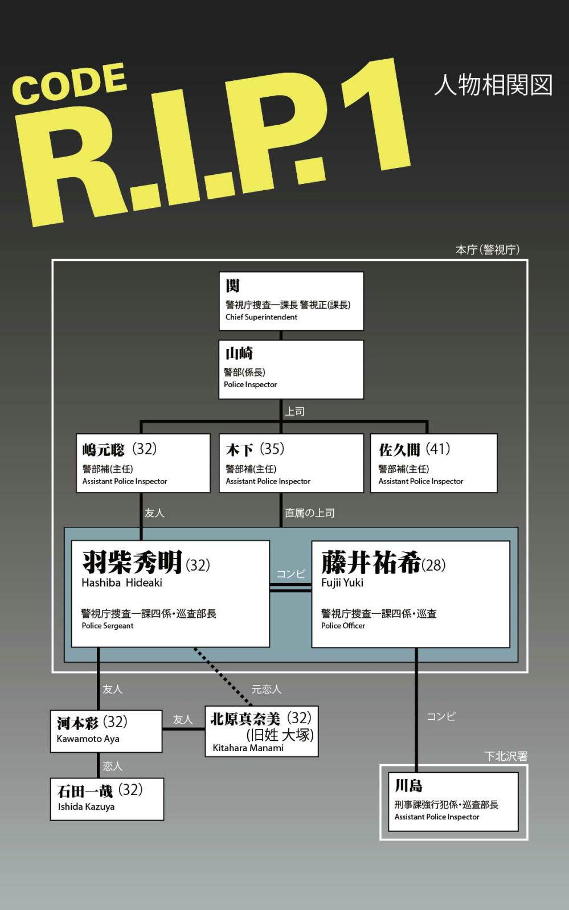

| CODE R.I.P. 1 Rest in Peace | |
| 杉浦絵里衣 | |
| FLAPPER LABEL (2013) | |
この作品はフィクションであり、実在の人物・団体・事件・思想とは一切関係ありません。
一
彼にはここ最近、日課にしていることがある。
会社から帰宅してまず部屋の明かりをつけ、それから受信機のスイッチを入れる。ほんとうは一日中聴いていたいのだが、勤務時間中はまず無理だから、こうして日中は自宅で充電器に載せておき、帰ってから寝るまでの間だけスイッチを入れることにしている。
もっとも、彼が会話の内容を聴き逃すことはない。
リアルタイムで聴ける受信機とは別に、専用の録音機も同時に起動しているからだ。こちらは二十四時間フル回転で働いているため、万が一聴き逃していても、あとから確認することができる。
だから彼は、受信機のスイッチを入れるのと同時に、録音機の再生ボタンも押す。早送りで関係ない部分を飛ばし、女の声が聞こえたときだけ再生する。
だいたいちゃんと会話が聴き取れるのは、夜も遅くなってからが多い。仕事中は携帯を事務所のデスクの引き出しに入れているらしく、ほとんどは聴くに足らない雑音ばかりである。
傍受した内容を拾っていくと、自分の知らない部分が次々と見えてくる。違う世界の専門用語、仕事仲間や女友達とのたわいない会話、自宅に帰ってからの物音。
そして──。
彼はそうして、彼女の生活を覗き見しつづけてきた。
「もしもし、河本です。いまいい？ ......あ、仕事中か。大丈夫？」
つけっぱなしにしていた受信機から、彼の恋人である彩 の声が流れてくる。
彼はすかさずテレビを消し、携帯サイズの受信機を耳に押し当てた。時刻は、十時四十分をすこし過ぎたところ。
相手は誰だ。
ごくりとつばを飲み込む。
「たいへんだね、こんな遅くまで。もういい歳なんだからさ、無理しすぎると身体壊しちゃうよ。......ええ？ ちょっと、それは聞き捨てならないわね。男と女じゃ同じ三十過ぎでも全然違うのよ」
あはは、と笑いながら彩はしゃべる。残念ながら、電話の相手がなんと言ったかは、聴こえない。
しかし、ようやく来た。
相手は、男だ。
「どうしようかな、メールのほうがいい？ ......うん、あたしは大丈夫だよ、シークレット登録してるから。メールボックスは見れないし、電話も名前が出ないようにしてるの。だって、説明するのもややこしいしさ。大丈夫だって、バレなきゃいいのよ」
どうやら、電話の相手のメールボックスはシークレット登録しているらしい。
シークレットにしなければいけない、男。
いやな予感が、ひとつひとつ当たってゆく。彼は受信機を握る手に力を込めた。
そして同時に、彩の物言いが気に障った。
『バレなきゃいい』とは、当然自分のことだろう。その声は、自分をあきらかに軽んじていた。
そんな女だったのか、おまえは。いつからだ。いつから、そんな。
──きっと、あのときからだ
とある大手外資系企業に勤める彼に、人事異動が言い渡されたのは、暮れも押し迫ったクリスマス直前だった。
同僚の中でもずば抜けた営業成績を誇る彼の異動先は、本拠地でもあるニューヨーク。セールス部門のアシスタントマネージャーという要職であり、数年勤め上げればこのまま残るにしても、また日本へ呼び戻されるにしても、ともに安定した地位が約束されるのは確実だ。実力を認められ、出世頭と同僚から羨望のまなざしを受け、彼はまさに人生の絶頂であった。
幼いころから挫折という言葉にもっとも遠い世界の住人で、ありとあらゆる物事が彼の思い通りに運んだ。
学業も、人間関係も、仕事も、そして恋も。
うまくいかないことなど、ありはしなかった。
今度の転勤先でも、きっとうまくいくはずだ。そう確信した彼は、さっそく彩に報告した。
「おめでとう、大出世ね」
予想通り彼女はたいそう喜んでくれたが、同時にこれからも心配もしたようだ。複雑な表情で、
「......でも、これからあたしたち、どうするの？」
と、たずねてきた。
もちろん、彩がそう言うだろうと計算に入れてきた。
彼は余裕たっぷりにグラスを傾けた。
「結婚しよう、彩」
そう、プロポーズだ。
折りしも世間はクリスマス、タイミング的にもちょうどよい。
彩も三十を過ぎたし、これ以上歳を重ねると見栄えが悪くなる。そうなる前に、中小企業のＯＬになどそろそろ見切りをつけ、家庭に落ち着くべきだ。
自分の給料だったら専業主婦でも十分やっていけるし、駐在夫人としてサポートしてもらわないと困る。海外には駐在夫人同士のコミュニティーがあり、その中で上手に交流する必要がある。そうでないと、夫である自分の出世にも響いてしまう。
とりあえず本音は隠しておき、考えてきた渡航や結婚のプランをひととおり述べた。
「もちろん、一緒に来てくれるよな。異動は四月からだから、こっちで簡単な式だけ挙げてもいいし、向こうで両親だけ呼んで挙げてもいいし。英語はこれからスクールに通えば、当面はなんとかなるだろ。不安なら俺が教えるから心配しなくていいよ。あ、あと仕事は辞めてもらわないとならないけど、とくに引継ぎとかないんだろ、ああいうのって。だいじょうぶだよな？」
自分では、最大限彩のことを考えた条件だと思う。譲歩と言っても差し支えないほど。
これほどの好条件ならば、二つ返事でオーケーがもらえるだろう。
そう信じきっていた。
それなのに──。
「ごめん、少しのあいだ考えさせて」
「......え？」
一瞬、なにを言われたのか理解しかねた。
手にしたグラスを、あやうく取り落としそうになった。
──いま、なんて......
眼の前の恋人は、ひどく申し訳なさそうな、どこか苛立ちを抑えているような、なんともいえない表情でひたすらテーブルの一点を見つめていた。デザートをつついていたフォークを静かに置くと、もういちど繰り返した。
「ごめんね......」
年末年始は、今までにないくらい最悪な気分だった。
なんど連絡しても返事は来ず、大晦日にやっと『地元へ帰るから、初詣には行けない』とだけメールが返ってきたのみ。
低俗な正月番組をだらだら観つづけ、ようやく彩と会う段取りになったのは、連休も終わりかけの一月六日であった。
正直、会う前はどんな顔をすればいいのか、なんて会話をすればいいのか、とまどっていた。あのクリスマスの一件がまだ尾を引いていたのだ。
しかし、それも杞憂に終わった。
人々でごった返す待ち合わせ場所に現れた彩は、信じられないくらい明るかった。気構えていた彼が拍子抜けするくらい。
いきいきと生気にあふれ、いつにもまして笑顔が魅力的で、バーゲン三昧で騒がしい街を、彼女はいかにも楽しそうに闊歩した。
この変わりようはなんなのだ。
クリスマスのときには、満を持したプロポーズに浮かぬ顔をし、二週間近く連絡をろくによこさなかったくせに。地元に帰ったときに、なにかいいことでもあったのか。
さりげなく尋ねてみても「昔の知り合いとばったり会ったの、それだけ」と、あいまいな笑みを浮かべてはぐらかされてしまう。
だがプロポーズについては、なにも言わなかった。
本当は返事を問いつめたかったが、あまりしつこくせっつくのもみっともないと思い、あえて聞かなかった。
ともあれ、機嫌がいいのはなによりだ。昔の知り合いとは、北原さんを含めた同級生かなにかだろう。
例の話も、そのうち受け入れるはずだ。断る理由など、彩にあるはずもない。将来が約束されているのだから。
そう楽観していた彼だったが、もうひとつ恋人の態度で気になる部分を発見した。
デートの最中だというのに、やたら携帯をチェックするのだ。
約束してるのか問うと、あわてて携帯から視線をはずし、うんちょっと、などと適当に返される。なにかを隠しているのは明らかだった。
どういうことだ。
いままで、恋人は自分に隠しごとなどしなかった。言い換えれば、隠しごとをしない女だから、付き合ってきたのだ。
すると今度は、もっと信じられないことが起こった。
久々に会ったのに、セックスを拒まれたのだ。正確には、彩の部屋に上がるのを、だが。
もっとも、これまでも予定が合わない等の理由で拒まれたことはあるし、会うたび毎回というわけでもない。だが今日はとくに問題がある日でもないのに、食事のあとひとり暮らしの彼女の部屋に行こうと誘ったら、いきなり断られたのだ。では自分の部屋はどうかと聞いてみたが、それにも首を横に振り、もう帰ると言い出した。
しかし彼も分別があるので、とりあえずその場は理解のあるふりをして収めた。対する彩は申し訳なさそうな、どこかほっとしたような、微妙な表情である。
なんだか腑に落ちない。
みぞおちの辺りがもやもやする。
そうして彼は、彩が化粧を直しに席を立ったすきに、携帯を手に取った。罪悪感など、これっぽっちもなかった。
メールボックスを確認するが、不審な点はない。では、通話記録はどうだ。なにもないことを祈りつつ、彼は慣れない他人の携帯を操作した。
発信記録の中に、名前が登録されていない番号があった。記録をさかのぼっていくと、最初は一月三日。それから数回。最新の記録は、その番号の羅列だった。
これは誰だ。
これはいったい、どういうことだ。
名前を登録できない相手なのか。
ほとんど無意識のうちに、彼はその番号を書き留めていた。
「こないだはありがとね。羽 柴 くんに会えてよかった。また昔みたいに戻れたらって、ずっと思ってたから......」
やや照れを含んだ声で、恋人は話す。
こないだとは、暮れに地元に帰ったときのことだろう。
とすると、ふたりは同郷で、以前はなにかしら付き合いがあったと思われた。元彼だろうか。
「え、彼氏......？ んー、いるけど、今はちょっと......。ケンカってわけじゃないけど、ちょっと顔合わせづらくて。だってさ、聞いてよ......。あ、やっぱこれは会ってから話すわ。ぜひとも他の男の人の意見も聞きたいからさ」
ぎり、と右手に力がこもる。
なんだ、この言い草は。俺のことを、バカにしているのか。
耳に押し当てた受信機が、火を噴きそうなほど熱を持っていた。
「ねえ、また会えるかな。うん、今すぐじゃなくてもいいけど、近いうち。あはは、おんなじか。羽柴くん忙しそうだからさ、あたしがそっち行くよ。......うん。え、いいの？ こっちまで来てもらって。仕事終わってからになると思うけど、いいかな？ おすすめのレストランがあるんだ。『アルカンジェロ』って言うんだけどね。けっこうおいしいんだよ」
誰だ。
『羽柴』とはいったい誰なんだ。
「じゃあ、また時間とか場所とか連絡するね。お仕事がんばって。......ん、おやすみ。じゃね」
声が途切れ、ぱくん、と軽い音がした。携帯を折りたたんだ音だろう。
それきり、声は聞こえてこなかった。電話のあいだ切っていたテレビのスイッチを入れたのか、かすかにＣＭ曲らしき音楽が聞こえてくるだけだ。
彼もおなじく、手にした受信機のスイッチを切った。伸ばしていたアンテナを収納し、いまいましげに投げ出す。
本当は、こんな姑息な真似をしたくはない。しかし、だからといって彩を問いつめるのも避けたかった。
「あの男は誰だ、説明しろ」など、みっともなくてできやしない。
彼は恋人にとって、理解のある懐の深い彼氏でいなければならないのだ。ほころびを、作ってはならない。
誰にも気づかれないように浮気の調査をするのと、嫉妬をむき出しにするのとだったら、彼は前者を選んだ。人の目に自分が醜く映らない分、まだましに思える。嫉妬に狂う男だと呆れられるのは、プライドが許さない。
プルタブを開けたまま放っていた缶ビールを、ひといきにあおる。エアコンの温風でぬるくなった液体が喉を通る不愉快さに、彼は眉をしかめた。
彩の声が脳内をかけめぐる。
彼の知る恋人は女性らしい話しかたをする人で、さっきのようにあけすけな調子で話すところは聞いたことがない。あれが、彼女の素顔なのだろうか。
恋人の台詞は石ころのように頭の内側のあちこちにぶつかり、そのたびに最悪の場面がフラッシュバックする。
整理する必要がある。彼は必死で乱れる心を落ち着けた。
彩は『羽柴』とやらと会うようだ。もちろん、俺には内緒で。
その『羽柴』とは、どうやら昔付き合いがあり、最近関係が復活したらしい。はっきりは言わなかったが、おそらく──。
そして、ふたりで俺の悪口を言うつもりなのだ。彼氏に対する不満を他の男にうったえていた恋人の声音には、たしかに研 があった。
昔の男と、俺をあざ笑うのだ。
笑う、この俺を？
「......ふざけるな」
知らぬうちに力がこもり、手の中のビール缶がひしゃげる。嫉妬と憎悪の念で、全身が灼やかれそうだった。
この俺を笑うやつなど、いてはならない。
俺はすべてを持っている。すべてにおいて勝っている。彩にとって、俺は『羽柴』より優れていなければならないのだ。
よく考えろ、俺はいまなにをすべきなのかを。
これから、どうすべきなのかを。
長い時間をかけて頭を整理し、彼はおもむろに自分の携帯を取った。手に、ある電話番号を書き付けたメモを持って。
二
「さむ......」
藤 井 祐 希 は、膝頭をかるくこすった。
空調は効いているが、このだだっぴろい室内では足許にまでは温風は届かない。とくに最近は環境保護とやらで、暖房設定温度が低めにされているから、冷えは確実に身体を侵食していった。
それでも、寒空のした歩き回ることに比べれば、天国とはいえる。幸か不幸か、提出せねばならない書類は山積みだ。
係の中でもいちばん下っ端の自分には、仲間が「これも修行の一環」とばかりにあらゆる書類を押し付けてくる。いまも、昨日片付いた事件に関するすべての書類をさばいている最中だった。
祐希が籍を置く警視庁捜査一課四係は、現在大部屋で待機中である。俗に言う"在庁番"というやつだ。出動命令が入ればいつでも飛び出すための待機要員だが、最近は手の空いている係がいること自体、珍しい。実際、本庁に来てから一年経つが、在庁番になったのは数えるくらいしかなく、たいがいはいつもどこかの捜査本部に詰めていた。
同僚はみな、思い思いに時間を過ごしている。パソコンで資料の整理をしている者、昇任試験の勉強をしている者、情報を集めによその部署へ行って席を外している者。
祐希はボールペンを置き、軽く伸びをした。飲み物でも入れようと席を立つと、斜め向かいから声をかけられた。
「藤井、ついでに俺のも頼む」
見ると、声の主は手許の文庫本に視線を落としたままだ。
「コーヒーでいいですか」
「おう」
そっけない返事。あいかわらず視線は活字を追っている。
だがこの人に限っては毎度のことなので、祐希はいまさら怒りもしない。ついでのついでで、今席にいる全員分のコーヒーを入れるべく、給湯室へ向かった。
手早く入れたコーヒーを配り歩き、最後に文庫本を読みふける肩越しにカップを差し出した。
「羽柴さん、どうぞ」
そこでようやく、羽柴は読みかけのページに指をはさんだまま、本を閉じた。椅子を半回転させ、こちらを見上げる。
「悪いな」
「いいえ」
反射的に笑みを浮かべ、彼のデスクにカップを置いた。
誰にでも平等に接せねば、と肝に銘じているつもりだが、無意識のうち彼にだけよい顔をしてしまう。いかんいかんと戒めつつ自分のデスクに戻り、再び本を開いた羽柴をさりげなく注視した。
こころもち伏せた顔は真剣そのもので、本の世界に没頭しているようだ。中身はきっと、ミステリ小説だろう。長身で体格もよいため、一見スポーツマンタイプと思われがちだが、じつは根っからインドア派らしいことを、祐希はこの一年で知った。
本庁に来てからコンビを組んでいるのが、この羽 柴 秀 明 だった。年齢は、たしか自分よりも四つ上と言っていたので、三十二歳のはずだ。
本来、新人指導にあたるのはベテランと相場が決まっているが、彼は係の中でも若手の部類に入る。通常ではありえないコンビであり、紹介されたときはこんな若い人で大丈夫なのかと不安になったほどだ。
しかし一年が過ぎ、なぜ羽柴が自分と組まされたのか、ようやくわかってきた。
ひとつ、めんどう極まりない新人教育を押し付けられた。きっと誰もが自分と組むのをいやがったのだろう。
ふたつ、彼自身が問題を起こすから。
彼はやたらと単独行動をしたがり、仲間であるはずの係の同僚にさえ煙たがられている。せめてこれ以上の迷惑をかけられないようにと、上の連中は右も左も分からぬ新人を背負わせたに違いない。
どちらにせよ、自分がこの四係でのやっかい者だった ことには変わらないのだが。
「だった」と過去形にしたのは、最近ようやく自分はここにいていいのだと思えるようになったからだ。三百人を超す捜査一課員のうち、女性警察官はわずか一割にも満たない。これだから女は使えないと言われるのも、どうせ女だからと卑屈になるのもいやだった。甘えず媚びず、歯を食いしばって這いずり回った結果、距離をおいていた仲間たちの態度も少しずつ氷解してきた。
──羽柴さんも、だいぶ慣れてくれたようだし
異常なまでに人付き合いの悪い彼も、最近では新人があとをついて回ることを受け入れたらしい。祐希は、カップのふちをくわえた唇をこっそりほころばせた。
しばらく無心で書類作成に専念していた祐希は、けたたましく騒ぎ出した携帯の着信音に、はっと顔を上げた。いつのまにかみな席を外しており、デスクについているのは自分だけだった。どこで鳴っているのか。
あわてて周囲を見回す。どうやら羽柴の机に置きっぱなしの携帯が発信源のようだ。
無断で他人の携帯に出るのは憚られる。祐希は困惑したが、そのうち留守番電話に切り替わるだろうと思い直し、ほうっておくことにした。
しかし着信音はいつまで経っても鳴り止まない。仕方なく手に取り、ディスプレイを確認する。ゴシック体で『河 本 彩 』と書かれた文字が、目に飛び込んできた。
女性だ。
祐希の心臓は跳ね上がった。
いよいよ勝手に出られない。電話を持ったまま羽柴の姿を探すが、一向に戻ってくる気配もない。手の中の携帯は小刻みにバイブしながら、早く取れと訴えかけている。
──あとで揉めても、知らないからね！
腹をくくった祐希は、通話ボタンを押した。
『──もしもし』
かわいらしく、耳に心地よい女の声。のどの奥に奇妙な苦味がひろがる。
『もしもし？ 羽柴くん？』
「──はい」
意を決して応答すると、相手はうろたえた声を上げた。
『あれ、間違えたかな。すいませ......』
「いえ、わたし羽柴さんの同僚の者ですが、いま席を外されてるんです。戻られたら折り返しお電話してもらいます」
『あ、そうですか......。じゃあけっこうです、用件をメールしておきますんで』
相手はそう言うと、ていねいにあいさつして電話を切った。
──誰だろ。やっぱ彼女、かな......
羽柴に彼女がいるという話は、聞いたことがない。同僚からも、もちろん本人からも。
ディスプレイに表示された通話時間をぼんやり見ていると、羽柴が戻ってきた。
「羽柴さん、お電話ありましたよ。鳴り止まないんで代わりに出てしまいました」
「電話？」
「河本さん、て女性のかたです」
名前を伝えると、羽柴はわずかに目を見開いた。どんな顔をするのか確かめてやろうと思ったのだが、それほど表情は変わらない。携帯を手渡すと、彼は着信記録をチェックしはじめた。
「用件はメールで送りますっておっしゃってました」
祐希がそう言うのとほぼ同時に、さきほどとはまた別の着信音が鳴る。すぐボタンを押して音を止めると、羽柴はこちらに目もくれずに部屋の外へ出て行った。
ひとり取り残された祐希の耳に、さきほど聞いたかわいらしい女性の声が、いつまでも反響していた。
昼食を取ったあと大部屋に戻ると、羽柴の姿はなかった。空っぽの机には、何枚かの書類やファックスが重なり合っている。
「羽柴は午後から半給を取ってるぞ。なにも聞いてないのか？」
背後から粘着質な声が飛んできた。祐希はいったん視線を上へやり、聞こえないよう鼻を鳴らしてからふり返った。
木下警部補は、四係に三人いる主任のひとりである。正確な歳は知らないし知りたくもないが、おそらく三十代半ばというところだろう。
祐希はこの木下が苦手だった。若くして警部補になるのも納得の有能ぶりだが上昇志向がきわめて強く、上にはへつらうが部下には冷淡という男で、御しにくい羽柴をとくに目の敵にしており、事あるごとにねちねちと絡んだ。
「いいえ、なにも」
「ふん、いつも仲良しのおまえに一言もなしか。意外と女がらみだったりしてな」
木下はねばっこい笑みをつくった。本人はニヒルに笑っているつもりだろうが、彫りの浅いのっぺりした顔では、たいした効果は出ていない。
彼は祐希にもまた絡む。しかしそれは羽柴と組んだゆえのとばっちりというよりも、女性に対する嗜虐性が向けられているだけのようだ。欲求不満なんじゃないの、といつも思う。
「同報が入った。傷害らしい。久々の留守番だってのにかなわんな、まったく」
ぶつぶつ言いながらも、木下はどこか楽しそうだ。目障りなやつがいなくて晴れ晴れしており、同時に手柄を横取りされる心配もないからだろう。木下が羽柴のことを嫌う一番の理由は、彼がトラブルメーカーのくせに検挙率は高いのが気に入らないせいだというのは、四係の者はみな知っていた。
出動の準備をしながら、祐希は木下の「女がらみだったりしてな」という台詞が引っかかった。
あながち勘繰りではないような気がしたのだ。
三
垂れこめた暗雲が、もとより暗い冬の夜空をさらに重苦しいものにしている。一月の凍てついた風をまともに受けた耳たぶが痛む。今にも雨か雪が降りそうなほど、天気は荒れていた。だが今日こそは、この荒天が味方となるだろう。
彼は今日、ずっと屋外にいた。
事前に恋人である彩の携帯を盗聴し、待ち合わせ日時や場所は確認しておいた。もし待ち合わせ場所に間に合わなくても、レストランの名前は盗聴で確かめたので、そちらに直行してもよかった。さいわい会社の用事は早くすんだので、待ち合わせ場所を張ることはできた。
それから相手の男の車を追いかけ、入ったレストランとその後に向かったカフェとを外から監視した。そうして今は、人気のないこの公園へとやってきた。時刻は、午後十一時半すこし前。
時折、俺はなにをしているのだろうという自問が沸く。誰よりも優れたこの俺が、こそこそ恋人の尾行をするなんて情けない。だが、知らないところで笑われる屈辱に比べれば、何倍もマシである。
公園のすぐそばに、彩の部屋がある。先日、ここへ来るのを拒まれた。
このあと恋人は、男を部屋に入れるのだろう。考えたくもなかったが、嫌でも考えがそちらに向かってしまう。
──俺は入れなかったのに、他の男を連れ込むなんて、いい度胸してるじゃないか
おととい彩に電話したときの反応が、頭をかすめた。
『十五日は名古屋に出張だから、なにかお土産買ってくるよ』そう話したとき、彩はほんのすこし間を置いてから、いってらっしゃい、と答えた。その間 に、安堵の吐息が含まれていたようだった。
ほかの男と会う日に、彼氏は出張。
そりゃあ、都合がいいだろうよ。浮気をするには。
ふたりは車を降りてゆっくりとした足取りで公園内を歩き、池のほとりにある街灯の下で立ち止まった。肩をならべて柵にもたれ、話しこんでいる。
彼はすこし離れた木陰にひそみ、ふたりの様子をうかがった。
細かい表情までは見えないものの、彩はひどく深刻そうにしている。なにか相談しているのか、それとも愚痴をこぼしているのか。
対する相手の男は──遠目からでも、かなり見目のよいのがわかる。
年齢は自分とそう変わらないくらいだが、百六十センチそこそこの恋人より頭ひとつ分背が高く、街灯の頼りない明かりの下でも、端整な面差しは際立っていた。コートのタイプや足許からみてスーツを着ているようだが、サラリーマンにしてはどこかうさんくさい印象だ。いったい何者だろう。
距離があるのと、強風にあおられた木々のざわめきとで、ふたりの会話は聞こえない。彩の携帯はバッグの中にあるから、盗聴器では聞き取れないだろう。これ以上近づくと気づかれる恐れがあるため、このままここで様子を見るほかはない。
一日じゅう寒空の中にいたせいで四肢は完全に冷えきり、感覚がなくなりかけていたが、一方で頭の芯は奇妙に冴えていた。
恋人の裏切りの元凶があの男であることは、もはや疑いようもない。
彩は俺を裏切ったのだ。
昔の男と会い、俺をあざ笑い、あげく自分の部屋へ連れてゆくのか。
彩の部屋には何度も入っているので、内部は細かいところまで覚えている。いやでもイメージが沸いてきた。振り払いたくても、羽虫のようにまとわりつく。
脱ぎ捨てられた衣服、よじれるシーツ、男の裸の背中にまわされる白い腕、割られた膝、快感にのけぞる顔──。
俺よりもいいのか、その男のほうがいいのか？
具体的な妄想にとらわれ、こめかみの辺りがチリチリする。
──そんなこと、許されるわけがない
ぎり、と奥歯を噛みしめると軍手をはめた右手を後ろ手に回し、背負ったデイパックの口からあらかじめはみ出させておいたロープの一端をにぎった。
そのとき、彩が目頭を押さえた。傍らの男がなにごとか言うが、彼女はうつむいて小さくかぶりを振る。男がコートのポケットからハンカチのようなものを取り出し、手渡した。彩はいったん辞退したものの、結局受け取り目許を押さえている。
男はなぐさめているのか、ややかがんだ姿勢で語りかけている。ここからでは角度的に表情は見えない。
やがて彩は面を上げ、うなずいた。男の顔をじっと見上げると、さっぱりとした屈託ない笑顔をうかべた。ちいさく折りたたんだハンカチをにぎりこぶしの中に包み、そのまま男の胸を小突く。
ふざけるな。
おまえは俺の女だろう。
なんでそんな男といっしょにいるんだ。
俺の目を盗んで、そんな男と──！
彼は喉元まで出かかった声を、どうにか飲みこんだ。いいようのない昏 い感情がざわざわと背筋を這い上がり、うなじの毛を逆立てる。
そのとき、男の様子が変わった。
反対側のポケットから携帯を取り出し、謝るポーズを見せてから背を向けて電話に出た。手早く応対したのち、男は携帯をしまいつつ彩になにごとか言うが、対する彼女は首を振りながら自分の家の方角を指差した。さしずめ、送る送らないの押し問答をしているのだろう。
やがて男が根負けしたらしく、なんどか振り返りつつ車を置いた方向へと駆け出していった。彩は、手を振って見送っている。
男が去ってもしばらく彩は所在なげに突っ立っていたが、バッグから携帯を取りだしてディスプレイを確認したのち、手袋を取り出した。ゆっくりと歩きつつ両手にはめている。
ごう、と、ひときわ強い風が吹きつけ、木々が切なげに哭 いた。
彼の胸に荒れ狂う嵐のごとき、咆哮。
いまだ。
いましかない。
あの裏切り者の女を手にかけるのは、今しかない。
彼は、木陰から足を踏み出した。鼓動がうるさくて、もはや風の声すら聞こえない。極力足音を立てぬよう慎重に歩を進めつつ、手にしたロープの端を引き出して両こぶしに巻きつけた。
殺せ。
殺してしまえ。
裏切られ、笑いものにされるなんて、耐えられない。
俺の側から離れようなんて、不良品 だ。いっそこの手で壊した方がよい。
あと五メートルほどに迫ったとき、異変を感じた彩がおびえた顔でふり返った。心底おどろいたのか、目が大きく開かれていた。
かつて愛したその瞳は、今は別の男を映している。
俺を映さないのなら、もうなにも映さなくていい。
「かず......！」
名を呼びかけた彩の細い首にロープを回して交差させ、両端をつかんで渾身の力で左右に引いた。
あっという間に暗がりでもそれとわかるほど顔色が変わり、舌が飛び出した半開きの唇から、ぐうっ、とくぐもった声がもれる。ロープが食い込んだのどには、ゴム風船の結び目みたいなしわが寄っていた。
彩の両手が、戒めを解こうとのどをかきむしる。しかし、手袋に包まれているせいで食い込んだロープには届かず、むなしく宙を掻くだけだった。
──早く、早く死んでくれ！
彼は折れんばかりに歯を食いしばり、懸命に手中のロープを引き絞った。力を入れすぎたせいで、軍手の手のひらには滑り止めがついているにも関わらず、何度か手が滑ってしまう。
目はかたくつぶっていた。美しかった彩のすさまじい瀕死の形相を、これ以上見ていられなかった。
永遠にも思える長い時間が過ぎ、彼はようやくロープをゆるめた。背後の柵にもたれた彩の身体がくず折れ、どさりと地に落ちた。
あまりに強く締めていたため、ひじがきしみ腕に力が入らない。滑稽なくらい膝が笑い、立っているのがやっとだ。一月の厳寒のなかだというのに、額や背中は汗で濡れていた。
ぐずぐずしてはいられない。うつぶせに倒れている彩の身体にかがみこんだ。
今にも起き上がってきそうで、触れるのにたいそう勇気がいったが、目をつぶり一気に抱えた。信じられないほど重く、ただでさえ力が入らない腕が抜けそうだ。以前も抱きかかえたことがあったが、これほど重くはなかった。
ふと、そのときの情景がフラッシュバックした。
あれはいつごろだったろう。たしか部屋で映画かなにかを観たあとで、シーンの再現をしようとふざけてお姫様抱っこをしたのだ。叫び声を上げて首筋にしがみついてきた細い腕の感触がよみがえり、胸がつかえた。
あの頃の彩はよかった。
素直で可愛くて、人付き合いも得意で、学歴も悪くない。勤めている企業さえ良ければ、どこへ出しても恥ずかしくない彼女だった。
だが、もう過ぎたことだ。
あの頃には戻れないし、変わってしまった女に未練もない。
そうだ、俺は不良品 を始末しただけ。
こんなことで人生を棒に振るつもりはない。
彼は残りの気力を振りしぼり、抱えた身体を街灯のない暗がりへ移してから、柵の向こうに押し上げて慎重に池へ沈めた。水音を立てないよう気をつけたつもりだったが、予想外に大きな音がして心臓が縮み上がる。折りよく強風にあおられた木々のざわめきがかぶさり、カムフラージュしてくれた。
漆黒の水面はかつて彩だった肉体をたちまち飲み込み、冷たい底へと引きずり込んでゆく。気泡が徐々に小さくなり、やがて消えてしまった。ロープをあえて首に巻いたままにしておいたのは、不用意に持ち帰ってそこから足がつくことを恐れたからだ。
死体が完全に沈んだのを確認した彼は、どけておいた彩のバッグを開けた。
手探りで文庫らしき本やポーチなどのすき間から携帯を取り出し、アドレス帳から探し当てた番号にダイヤルする。そのまま明るく照らし出されたディスプレイを、たっぷり二十秒ほどにらんだのち、電話を切った。耳に当てなくても相手が出ないのはわかっていた。
その拍子にストラップについた大きな玉が、手の甲に当たった。ストラップをちぎろうと引っ張ったが、細いひもは意外に頑丈でビクともしない。刃物もないし、この暗闇でストラップを外すのは不可能だ。
しばし悩んだが、そのままにしておくことにした。
ストラップは以前彩につけさせたものだ。急になくなっていれば、あらぬ疑いを呼ぶことになるかもしれない。そのままの方がかえって自然だろう。どうせ正体は誰も知らないのだし、水に漬かれば役に立たぬのだ。
そう思い直し、バッグへ戻した。
そのままバッグも池へ放り込もうとしたが、街灯の下になにか落ちているのが目の端に入った。近寄って確かめると、それは先ほど彩が男から受け取ったハンカチだった。
手に取ったとき、ひらめいた。
ちょうどいい、このハンカチを使わせてもらおう。
いったんファスナーを閉めたバッグの中にハンカチを入れ、再度閉めなおす。
予定にはなかったが、うまくいけばあの男に罪をかぶせることができるかもしれない。そうでなくても、警察の目を逸らすことくらいはできるだろう。要は、どれだけ時間を稼げるかだ。
そうしてすべての作業を終わらせ、押しつぶして中の空気を抜いてからバッグを池へとそっと沈めた。
この間、誰も公園へ来なかったのは幸いだった。
いまにも雨が降りそうな荒天は、やはり彼の味方についた。
住宅街のど真ん中、真冬の夜の公園をうろつくやつはいないだろうと踏んでいたが、それでも犬の散歩など可能性がないとは言い切れない。
もう一度あたりを見回し、通路は避け木々の間を縫うようにして公園をあとにした。
ようやく人っ子ひとりいない道路へ出たとき、彼は自分が知らぬうちに涙を流していることに気がついた。
四
ハンドルを握る手に、力がこもる。
無線からはひっきりなしに情報が飛び交い、せまい車内は混乱と喧騒をきわめていた。
二日前に発生した傷害事件は、早々に解決をみた。またもや在庁番へと戻った四係を待っていたのは、第三方面下北沢署管内で発生した殺人容疑事件だった。管内の代沢公園にある池から女性の遺体が発見されたという。首にロープが巻きついていたことから、他殺の疑いが極めて強いということで、捜査一課へ出動要請が出たのだ。
雨上がりの入り組んだ道を回りまわって、ようやく現場へ到着した。すでに機動捜査隊と鑑識、所轄署の捜査員たちが臨場しており、バリケードテープの周囲には近隣の住民たちが鈴なりだった。
ともに現場入りした先輩たちが、次々にテープの下をくぐっていく。
運転手をつとめていた祐希も車内で『捜一』と書かれた腕章を巻き、白手袋を装着した。ドアを開け外へ出ようとしたとき、助手席に座っていた羽柴がまだなにも準備をしていないのに気づいた。シートベルトをしたまま、じっと前方をにらんで動こうとしない。
「羽柴さん、どうかしましたか？」
声をかける。そういえば、同報が入って出動してから、彼は一言も口を聞いていない。
こころなしか、顔色も悪いように見える。
「羽柴さ......」
「なんでもない」
もう一度呼びかけた声を羽柴はさえぎり、シートベルトをはずした。
遺体発見は、きょうの午前十一時過ぎだった。
もともとここの池は比較的浅く、二日間続いた大雨のせいでいっきに水かさが増した。このままでは水があふれそうだという近隣住民の声で、ようやく雨が上がった今朝方、区の職員たちが池の水を抜く作業を行った。
適当なところでせき止めたのだが、職員のひとりが投棄されたゴミなどの合間に、不審な影を見つけた。よくよく探ってみると、なんと人間の死体らしいものが沈んでいるではないか。仰天した職員たちはあわてて一一〇番通報したというわけだ。
青いビニールシートの天幕の下にもぐりこむと、まず死臭が鼻についた。何度嗅いでも慣れない臭いをこらえつつ、同僚の背中のすき間から遺体の状態を見た。
赤黒く変色した顔からは人相を特定しかねるが、服装から察するに若い女性のようだ。真冬の水中に沈んでいたことから、まだそれほど腐敗は進んでいないが、だいぶ手足が膨張している。通報どおり、たしかに首にロープ状の索 条 が絡みついていた。
明らかに溺死ではない。まぎれもない──他殺だ。
無意識のうちに手帳とペンを取り出す。
隅に追いやられた所轄の捜査員に、木下が声をかける。
「身元、割れてるか？」
「はい。すぐ近くから被害者のものと思われるかばんが発見されました。免許証とその他所持品から──」
捜査員の手がメモをめくる。
「河本彩、三十二歳。住所は代沢七丁目......」
──え!?
祐希は驚愕のあまり、右手に握ったペンを取り落としかけた。思わず振り返る。
そのときの羽柴の顔を、祐希は生涯忘れないだろう。
彼はいたって平静に、横たわった遺体を見下ろしていた。真一文字にむすばれた唇は、血の気を失ってしろくなっている。あまりにも無表情で、不気味にすら思えるほどだった。
よそ見をしている祐希に気づいた木下が、するどく問うた。
「どうした、藤井」
「あ......」
我ながら間抜けな声。とっさにごまかしきれず、つい正直に答えてしまう。
「あの、被害者が......。羽柴さんの......」
「なに？」
その場にいた全員が、こちらを向いた。
血走った十数の視線が、祐希とその後ろにいる羽柴に突き刺さる。
「羽柴の、なんだ？ 知り合いか？」
つかつかと歩み寄ってきた木下が、祐希の身体を押しのけ羽柴の前に立った。いまだ突っ立ったままの彼のコートの襟を乱暴につかみ上げ、声を荒げた。
「答えろ！」
「......だ」
手を振り払うでもなく、羽柴は機械的に唇を動かした。押し出された声は、聞き取るのがやっとなほどかすれていた。
「──そうだ」
またたく間に、下北沢署に特別捜査本部が設置された。だだっぴろい講堂には長机がいくつも並べられ、向き合うように幹部席がしつらえられている。足を踏み入れてまず目に付いたのは、前面に設置された被害者の生前の写真だった。
ややまるみを帯びた輪郭と、無造作なミディアムヘアのせいか、河本彩は実際の年齢よりも若く見える。全体的に柔らかな印象だが、切れ長の目許が意志の強さをにじみ出していた。
──きれいな女 性 ......
祐希の胸は、ほんのわずか泡立った。
現場からこっち、四係の者はみな一様に無言だった。それは被害者と顔見知りである羽柴への配慮という、お優しいものではない。普段なにをしでかすか見当のつかない彼の次の言動を、それとなく見張っているのだ。
指定された席に着く。羽柴はすぐ隣に座った。どんな顔で遺影を見ているのか、確かめる度胸はなかった。
先ほど現場で、なぜ羽柴と河本の関係を知っているのか問われ、祐希は二日前の電話の件を言わされるハメになった。係の者全員がこの電話の内容について知りたがっているのは表情で知れたが、羽柴はひと言も口を聞かなかった。
すでに署長や刑事課長を含め、所轄の捜査員はそろっている。遅れて、本庁組の幹部陣が入室してきた。
最初に入ってきたのは、関警視正。数々の武勇伝を残し「伝説の一課長」の異名を持つ彼は、バリバリの叩き上げノンキャリアであるため、現場の捜査員の働きもきちんと評価した。激務に次ぐ激務であろうに物腰は意外なほどソフトで、鬼瓦のような部下たちをうまくまとめる手腕はすばらしかった。
続いて、めずらしい準キャリア出身の管理官。中途半端な出世街道をたどっているが、捜査官としてはまあまあといったところだ。
最後に、四係係長で祐希の上司でもある山崎警部が入室した。その優秀さは警察官としてよりも、むしろ中間管理職としての方向に特化している。衝突しやすい現場と上層部のパイプ役として、来る日も苦心を重ねているようだ。羽柴の言動にもっとも苦労させられているのは、ほかでもない彼であろう。
全員がそろったところで、第一回目の捜査会議が開始された。
上層部の訓示に続き、山崎係長が起立し捜査員の班分けが読み上げられる。編成は本庁と所轄のふたり一組が原則だが、祐希は教育係の羽柴とセットとされるので、例外的に三人一組となる。今回は、下北沢署の古株である川島巡査部長と組むことになった。
続いて、事件の概要が説明された。
現時点では発覚日時や状況などのいま分かっている事項の確認のみにとどまり、検視の結果からおおよそ死後二、三日は経過しているだろう、とのことだった。本格的な司法解剖は結果待ち状態なので、明確な死亡推定時刻はまだである。
山崎が形ばかりの報告を終わらせようとしたとき、横に座っていた羽柴がいきなり立ち上がった。話の腰を折られた山崎が肝をつぶす。
「な、なんだね羽柴くん。まだ終わって......」
「報告があります」
ざわ、と会議室が揺れた。上座の幹部陣も、顔を見合わせている。
羽柴は山崎の答えを待たず、一方的に続けた。
「被害者の河本彩と自分は、面識があります。ちょうど二日前、一月十五日にも会いました」
二日前。
祐希は羽柴の電話を聞いた日の午後、彼が休暇を取っていたことを思い出した。本庁組も同様だったようで、スケジュール帳のカレンダーを確認したりしている。
死後二、三日経過という検視結果と一致。祐希はいやな予感を覚えた。
周りの動揺をよそに、羽柴は淡々と報告する。いつもの捜査時の報告と、なんら変わらない。
「十五日の午後七時半に下北沢駅中央改札口で待ち合わせた後、わたしの私用車で被害者の案内するイタリア料理店へ向かいました。店の名前は覚えていませんが、領収書があります。その後、レストラン近くのカフェで一時間ほど話をし、代沢公園で立ち話をしました。木下主任からの召集電話が入り、被害者とは公園で別れました。それ以後、連絡は取っていません」
ひとつ前の机についている木下が、自分の携帯を確認したらしく、
「午後十一時五十三分に、羽柴巡査部長宛でたしかに発信しています」
と、よく通る声で答えた。
もし以後の捜査で、十五日以降の被害者の足取りが消えたとなったら、羽柴が最後に接触した人間ということになる。いわゆる、重要参考人というやつだ。
ふいに冷風が吹き込み、ざわめく会議室の空気が乱された。
背後のドアが開き、下北沢署の捜査員らしき男が足早に幹部席へと向かう。なにやら書類が手渡され、次々に一課長や所轄署署長の元へと回される。山崎の手許へも届き、幹部陣はいったん書類の確認のため視線を落とした。もっとも早く読み終えたらしい関が顔を上げ、厳しい顔つきで卓上マイクに手を添えた。
「司法解剖の結果が出た。死因は索条で頚 部 圧迫による絞殺。胃や肺からほとんど水が検出されていないことから、死後水中へ遺棄したと思われる。死亡推定時刻は──」
いったん口を閉ざす。
ひと呼吸おき、続けた。
「十五日午後十一時から翌午前一時ごろとされる。水中に長くあったせいで、これ以上特定は出来ないらしい」
最後のほうは、沸き起こったどよめきにかき消されて祐希の耳には届かなかった。
なんてことだ。
いやな予感が、的中した。
死亡推定時刻は午後十一時から翌午前一時。
羽柴が被害者と別れたのは、午後十一時五十三分。
これでは、まるで──。
「きさまァ......！」
がたん、とパイプ椅子が倒れる音とともに四係でもっとも血の気が多い同僚が立ち上がり、羽柴の胸ぐらをつかんだ。
「どういうこった、てめえがやったのか!? 」
「俺じゃねえ。決めつけんな！」
対する羽柴もまた冷静さを失い、胸ぐらをつかむ腕をひねり上げる。いまにも殴り合いをせんばかりのふたりを、ほかの同僚が引き離した。祐希はなにもできず席に着いたまま、ただ呆然と隣の騒動を見上げるだけだった。
「静かに！ 席につかんか！」
山崎がめずらしく怒号を飛ばした。
感情を荒げた同僚は無理やり席に座らされる。羽柴は立ったままだ。前かがみになり、両手を机の上においている。その手に力がこもり書類をぐしゃぐしゃに握りつぶすさまを、祐希は見た。静脈の浮き出た甲が、なにより彼自身の怒りを如実にあらわしていた。
「羽柴くん。きみと被害者との関係はなんだね？」
低い声で関がたずねた。
トーンの乱れは感じられないが、それはつとめて感情を押し殺しているからだと思われた。
「友人です。大学の同級生でした」
「具体的には？」
関の突っ込みはするどく容赦がない。
本来ならプライパシーに関わることであり、こういった公の場では聞かないのだが、あえてこの場で言わせて同席者にも聞かせるつもりであるらしい。異性の友人 であればなおさらだ。どこまで友人関係 なのかをはっきりさせておかねばならない。
羽柴は一瞬口ごもったが、観念したのか答えた。
「......正確には、当時交際していた女性の友人です。その女性とは十年ほど前にすでに別れていますし、被害者ともそれっきりでしたが、暮れに帰省したとき偶然再会して、それから連絡を取るようになりました。付き合っていた女性当人とは、いま現在も音信不通です」
痛くもない腹を探られるのは勘弁とばかりに、聞かれてもいないことまで答えている。ふだん口数が少ないほうだから、取りようによっては弁解しているように聞こえた。
いまや会議室は騒然としている。山崎がなんども注意を促すが、捜査員たちを落ち着かせるのは困難だった。
「いいか、よく聞け！ 犯行時刻直前と思われるころに羽柴くんが被害者と接触しているのは事実だが、それだけで彼が犯人であるとは言い切れない。彼と別れてすぐ襲われた可能性もある。憶測で決めてかかるのは非常に危険だ」
関は会議室を見渡し、ひとりひとりに聞かせるよう、つとめて冷静に言った。往年の名刑事の言葉にはさすがに重みがあり、ざわついていた会議室もようやく静まった。
あらためて関は向き直った。
「羽柴巡査部長」
「はい」
「きみはたった今から、最重要参考人となった。今後は捜査からはずれ、こちらの指示があるまで自宅で待機していたまえ。いずれ事情聴取することになると思うので、準備をしておくように」
「......わかりました」
羽柴は短く答えた。机上の資料をまとめて隣の祐希に押しつけると、上座に一礼をしてから後方のドアへ向かった。足取りも迷いはなく、いつもどおりだ。顔をのぞかせた制服警官に付き添われ、会議室を出ていった。
突然降って沸いた重要参考人の存在──しかも現役の警察官であり、犯罪捜査員でもある──に、文字通り会議室は踊った。
「自宅待機だなんて甘いんじゃねえの。いっそホテルにお泊り願ったほうが......」
「お偉方は身内からマル被を出したくねえんだろ。マスコミに嗅ぎつけられたらやっかいだからな」
周囲の同僚がぼそぼそと話し合っている。この場合の"ホテル"とは、そのものではなく"留置場"の意味合いが強そうだ。しかし逮捕していない以上、被疑者として扱うわけにはいかない。昨今警察官の不祥事が突き上げられ、ナーバスになっている上層部は、ギリギリまでひた隠しにするつもりなのだろう。
祐希は押しつけられた羽柴の分の資料を手にし、重いため息をついた。
初動の捜査会議は、だいたい顔合わせや班分けのみで解散になることが多く、第二回目から本格的に捜査は動き出す。今回のようにいきなり有力情報が出ることはまれである。
この日も、午後八時ころにはいったん解散となった。
羽柴が外されたことでふたり組となった川島刑事にあいさつをし、担当箇所を確認する。今回は、被害者の周辺人物の捜査にあたる識 鑑 担当である。地図をひろげて相談していると、会議室のドアから半分身を乗り出した同僚が手招きした。
「藤井、ちょっと来い」
名指しで呼ばれた祐希は、川島に断ってからそちらへ向かった。
ドアを出ると、廊下の隅に引っ張られる。そこには木下とその腹心が待っていた。
「なにか？」
「おまえに、やってもらいたいことがある。通常捜査業務とは別に、羽柴の身辺を探ってくれ」
「身辺......聞き込みですか？」
「いや、羽柴の家に寄って様子を見るんだ。万が一飛ばれたりしたら面倒だからな」
木下はふんと鼻を鳴らした。はなから羽柴のことを疑ってかかっている。
「俺らが行くよりは、おまえのほうがヤツも油断するだろ。どうせ新人にはなにもできないと思ってるだろうしな。おまえは羽柴のようすを逐一報告するんだ。その間に、俺たちは外堀を埋めていく。いいな？」
スパイか。いやな役目だった。
祐希は眉根を寄せたが、すぐにある考えが浮かんだ。自分が断っても、どうせ別の誰かがやることになるのだ。
それならば──。
「──分かりました。毎日、捜査会議の前に顔を出すようにしてみます」
「頼むぞ、ヤツは必ず俺が落としてやる」
木下は馴れ馴れしく祐希の肩に手をおき、忠臣を引き連れて立ち去った。その後ろ姿を眺めていた祐希は、自分を待っているだろう川島の元へ戻った。
五
翌日から、捜査は本格的に動き出した。
被害者の家族や職場には別の担当が行っているので、祐希と川島のふたりは恋人である石田一哉という男性に当たることになった。
石田は三十二歳で彩と同い年、外資系商社勤務のサラリーマンである。連絡を取ったところ、自宅に帰ってからでは遅くなるので、明日の昼休みに会社を抜け出して会ってくれるという答えが返ってきた。
とりあえず彼は後回しにしてその他の鑑取りにあたり、気がつくとすでに午後六時前になっていた。
「川島さん、すみませんがお先に署へ戻っててもらえませんか？ わたしはちょっと所用があるので、あとから戻ります」
五十代であろう川島は、娘ほど歳の違う本庁捜査員へ控えめに質問した。
「所用、ですか。それは......」
「うちの木下直々の所用です。承認も得てますので」
『本庁』の威光を盾にすれば、たいがいの所轄署員は引っ込む。
こんなやり方は正直好きではないが、いちばん手っ取り早い方法であることも事実だ。川島もまた、納得いかないといった表情ではあるが、おとなしく引き下がった。
川島と別れたのち、祐希はひとりで羽柴の自宅へと向かった。一回目の訪問はアポなしでいきなり行け、というお達しなので、連絡は入れていない。地下鉄に乗り換え、住所片手にようやくたどり着いた。
羽柴の居住地は練馬にある、いわゆる官舎というやつだ。
民間の物件を買い上げたらしく、外観はよくある単身者用マンションである。新築でもないが老朽化しているわけでもない。ごく自然に周辺と馴染んでいる。近隣の住民も、言われなければ警察官舎とは気づかないだろう。
祐希がマンションの下に立つと、道向かいの喫茶店からふたり組の男が出てきた。
ふたりはともに下北沢署員であり、ここで出入りする人間を張っていると説明した。本庁の捜査員でないのは、羽柴に面が割れていないからだ。これから毎回室内に入ったら、必ず窓際に立ってこちらを確認して欲しい、とふたりは付け加えた。なるほど、小さなバルコニー付きの窓は、通りに面している。羽柴の部屋は二階なので、下からでも確認はできそうだ。
マンションの玄関はオートロック式で、インターホンでまず来訪を知らせねばならない。
部屋番号を押し、呼び出しボタンをプッシュする。
『はい』
機械ごしに、愛想のない声が聞こえる。祐希は来訪を告げた。
「羽柴さん？ 藤井です」
インターホンの向こうで、軽く息を呑む感触があった。
『なんで、おまえ......』
「ちょっと用事がありまして、お伺いしました。よろしいですか？」
『え、あ、今からか!? ちょっと待て、五分......いや、三分でいいから』
めずらしくあわてた調子でそう言うと、羽柴は一方的にガチャリという派手な音を立ててインターホンを切った。
やはり急に訪問するなど、マナー違反である。自分だっていきなり人が来たら泡を食うだろう。
仕方なく祐希は寒空の下、足踏みをしながら腕時計できっちり三分測ったのち、もう一度ボタンを押した。しぶしぶといった様子でロックが開き、中に入ることができた。エレベーターで二階に上がり、部屋番号を確認してから今日何度目かのインターホンのボタンを押した。
「............」
無言でドアが開く。
顔をのぞかせた住人の姿に、部屋を間違えたかと思い焦った。おずおずと尋ねる。
「えと......。羽柴さん、ですよね？」
「なに言ってるんだ、おまえ」
この声、口調。よかった、間違いない。
「だって、メガネかけてるから誰かと思って」
「家にいるときはいつもメガネなんだよ。それより早く入れ、寒いんだよ」
吐き捨てるように言うと、さっさと奥に引っ込んだ。
「おじゃま、しまーす......」
コートを脱いでから玄関に入り、靴を脱いでストッキングはだしで上がる。スリッパは出してもらえなかった。
まず最初に、タバコのにおいが鼻をついた。そういえば愛煙家の女の友人は、決して室内では吸わないと言っていた。においやすすが部屋につくのが嫌なのだそうだ。男のひとり暮らしだと、そこまでこだわったりしないのだろう。
右手にコンパクトなシステムキッチンがあり、コンロにはヤカンが載っている。先に立つ羽柴がドアを開け、中に招き入れた。間取りとしては１Ｋということになる。
思ったより広々としていた。左手前の壁に寄り添うようにパソコンラックが置かれ、その足許に敷かれたラグマットには小さなテーブルがあり、読みかけの雑誌と新聞が放り出されている。右の壁際にはクローゼットらしき扉が、その向こうにはテレビ台があり液晶テレビがこちらをにらんでいた。奥には掃きだし窓があり、窓を半分隠すようにシングルベッドが鎮座している。他人の部屋に通されたらつい室内を観察してしまう。職業上の悪いくせだ。
必要最低限の家具しかない、そっけない印象の部屋。
自分の部屋も似たような間取りだが、家具や雑貨が少ないぶんこちらの方が広く見える。たぶん、自分の部屋は余計なものを置きすぎなのだろう。
「来るなら来るって言えよ。掃除もしてねえぞ」
「えー、十分きれいですよ。あたしん家に比べたら」
「......どんな状態なんだ、おまえの部屋は」
あきれ声の羽柴の姿を、祐希はしげしげと眺めた。
見慣れないメガネをかけ、グレーのジップアップフリースと黒地に白ラインの入ったジャージという、これ以上ないくらいの部屋着姿。ふだん堅苦しいスーツをきちんと着ているので、こんな夜のコンビニでよく見かける格好の、隙だらけな彼は、なんとも新鮮だった。
コートハンガーを差し出しつつ、彼はぶっきらぼうに言った。
「とりあえず座れよ。コーヒーでいいか？」
「あ、はい。いただきます。すみません、急に来ちゃって」
ハンガーごとコートを預けると、羽柴はそれを引っ掛けてからキッチンへ立った。
そのすきに祐希は窓際に立ち、外の捜査員に姿を見せる。こちらからはわからないが、きっと確認できただろう。
そのあと、ラグマットの上の座布団に座らせてもらった。
放り出された雑誌は経済誌だったので中は見ず、その代わりに新聞を手に取った。ついさっきまで読んでいたらしきページが開かれており、そこには昨日の事件のことが大々的に報じられている。『住宅地の公園から女性の遺体発見』という見出しの記事。警察の公式発表では、容疑者はまだ特定されていないとして、当日一緒にいた羽柴の存在も、立ち寄った店などの詳しい足取りも伏せている。警察官の不祥事となりうるかもしれない今回は、とくに慎重に情報操作が行われていた。
羽柴はこの部屋でひとり、記事を読んでいたのだ。
本来なら捜査にたずさわる身でありながら、被疑者扱いを余儀なくされ、こうして断片的な情報しか手に出来ない。さぞ歯がゆい思いをしているだろう。
祐希はちいさく唇を噛んだ。
やがて羽柴手ずから淹れてくれたコーヒーを、ふたり並んで飲んだ。
ひと口飲んですぐに羽柴は、テーブルの上にあったタバコのパッケージとライターに手を伸ばした。中から抜き出しかけて、祐希の存在を思い出したらしい。無言でじっと見返してきた。
「どうぞ。羽柴さんのお部屋ですから」
そう言って促すと、彼は安心したように一本抜き出してくわえた。普段はタバコを吸わない祐希の目の前では、なるべく吸わないようにしているのだ。それなりに気を使っているらしい。
半分ほどコーヒーを飲み終えたとき、ふいに羽柴は口を開いた。
「......どうせ、木下あたりの差し金だろ」
祐希がここに来たことについてだ。さすがに鋭い。
「ええ。スパイに来ました」
さらりと言ってやると、羽柴は八割方吸ったタバコを消した。
「いいのかよ、手の内見せて。俺に気づかれないようにするんじゃないのか」
「主任はそのつもりみたいですけどね。でももうバレちゃいましたし」
祐希がにっこり笑ってみせると、羽柴は片手でメガネを持ち上げた。
「いまさら違うって言っても、信用してもらえそうにねえしな。いいさ、好きなだけ探れよ」
「あたしは、信じてますよ。羽柴さんのこと」
「はっ、それもヤツの入れ知恵かよ」
「いいえ。本心からそう思ってます」
自虐的に笑う羽柴に、祐希は静かに繰り返した。目が合うと、彼はふいと顔を逸らした。
そのまま、無言になった。
壁掛け時計の音だけが、やけに大きく響く。
おもむろに、羽柴はメガネをはずした。
もう片方の手で両目をおさえ、うつむき加減でつぶやいた。
「......どうでもいいさ。俺が犯人にされようがされまいが、河本は還ってこねえ」
「羽柴さん......」
弱々しく、しぼり出すような声。いつもの不遜なほどの剛毅さはかけらも見られない。
こんなに打ちひしがれた彼は、はじめてだ。
祐希の胸は詰まった。
「俺があのとき、無理やりでも家まで送ってやればよかったんだ。そうすりゃ、こんなことにはならなかったんだ。俺のせいで......」
「羽柴さん！」
たまりかねて、祐希はテーブルについた羽柴の二の腕をつかみ、揺さぶった。感情が昂ぶり、つい声が大きくなる。
「たしかに、いまさら後悔したって被害者は戻りません。でも、だからってこのままじゃ収まりません！ 悔しくないんですか、刑事でしょう!? 」
祐希のうったえに反応したのか、羽柴は顔を上げてこちらを見てきた。
泣いているのかと思ったが、そうではなかった。
だが端整な顔がゆがみ、涙を見せるよりもずっとずっとつらそうだった。
「真犯人を見つけましょう」
「見つける、って......」
「あたしが協力します。捜査情報を持ってきますんで、指示を下さい。羽柴さんが動けないぶん、あたしが手足になって動きますから。そして、彩さんを殺したヤツを捕まえましょう」
そう、祐希が思いついた考えとは、これだった。
羽柴は殺していない。
誰がなんと言おうと、すべてが敵に回ろうと、祐希はそう信じていた。そして、人ひとり殺しておいてのうのうと逃げおおせたヤツを、絶対許せなかった。
「これは、弔い合戦です。羽柴さんの潔白を示すためじゃありません、彩さんの無念を晴らすんです。あたしたちの手で、成仏させてあげましょうよ」
羽柴の目を真っ向から見据え、祐希はきっぱりと言った。
やがて羽柴はメガネをかけなおし、つぶやいた。
「......そうだな」
マンションを出て、祐希は地下鉄に乗り込んだ。逆帰宅ラッシュのため、車内はそこそこ空いている。座席に腰を下ろし、ため息をついた。
今の彼は、あのときの自分と同じだ。十年前のあの日を思い起こす。
目を見開いたまま息絶えていた女。胸には刃物が突き立ち、おびただしい血が水たまりのようにあふれていた。
声も出せず、へたりこんだ自分の耳に飛び込んできた、引きつった声。
『人殺し』のひと言は、あっという間に自分を犯罪者に仕立て上げた。ありとあらゆるものが、瞬時にして敵に回った。
そして、すべてを失った。
ただひとつのものを除いて。
目を閉じ、電車の揺れに身を任せた。規則正しい揺れは、疲弊しきった身体を真綿の眠りにいざなう。抗いつつ、祐希は呪文のように繰り返した。
あたしだけは、信じたい。
彼は、無実だ。
下北沢署に戻ったとき、すでに捜査会議は始まっていた。後方のドアから滑り込み、ぐるりと迂回して席に着く。
午後十時過ぎには会議が終わり、散会となった。祐希は今日からここの女性警察官用宿直室に泊り込むつもりだったので、署内のシャワー室を借りるべく席を立ちかけた。そこへ、木下が歩み寄ってきた。
「どうだった、ヤツのようすは」
「ずいぶん気疲れしているようで、わたしが行ってもどこかうつろな感じでした。なにかを隠しているのかどうかは、まだはっきりと分かりませんが、少なくとも逃亡や証拠隠滅といった不審な行動は見受けられませんでした」
祐希は事前に羽柴から吹き込まれた内容を、注意深く木下に告げた。
ごく当たり障りのない内容で、これだけでは捜査の足しにはならない。
案の定、木下は「それだけか」とやや不満げな顔をした。
「まあいい、明日も会議の前に顔を出してこい。かかってきた電話やメールの内容も、さりげなく聞き出すんだ。いいな」
「はい」
短く答えると、祐希は今度こそ席を立った。
すると背後から、木下の笑みを含んだ声がかけられた。
「そうそう。わかってると思うがな、同情は禁物だぞ。それから......」
振り向いた祐希の目に、あからさまににやにやする木下が映った。
「部屋でふたりっきりになっても、くれぐれも間違いを起こすなよ。おまえも一応、女の端くれだからな。ま、見張りもいるし心配いらんだろうがな」
なにを考えているのだ、バカバカしい。
周りにいる木下の腰ぎんちゃくたちも、みな笑っている。
自分と羽柴が裸で絡みあっている場面でも妄想しているのだろう。祐希はこみ上げる不快感を飲み込み、じろりとにらんでやった。
「ご心配なく。そんなこと、あるわけないですから」
ぴしゃりと言ってのけ、祐希は会議室をあとにした。
まだ全身に、男たちのねっとりした視線がまとわりついている気がしてならなかった。
六
彩の葬儀から、二日後。
アポイントを取ってきた刑事が待ち合わせに指示してきたのは、職場から徒歩五、六分のところにあるカフェで、前を通ったことがあるだけの店だった。
きのう個人名で職場に連絡がきたとき、彼は営業に出ていた。伝言を聞いた彼はまたマスコミ関係者かと思ったが、電話を取った者に聞くと非常に礼儀正しかったらしいので、安心して折り返し電話をした。すると相手は、警察のものだと名乗るではないか。
たちまち血の気が引き、あやうく受話器を取り落としそうになった。
電話口で助かった。
もし面と向かっていたら、きっと顔色からただごとではないと察知されただろう。
警察から事情を聞かれるのは覚悟していたが、まさかこれほど早いとは。
相手は彼の自宅で話をうかがいたい、と申し出たが、彼はもっともらしい理由をつけてそれを拒否した。室内に入れてしまえば、なにか感づかれてしまうかも知れない。証拠になるようなものはいっさい残していないが、それでもどこでボロが出るか分からないからだ。
できるだけゆっくりとしたペースで歩きつつ、彼はこの場から逃げ出したい恐怖にとらわれた。病み上がりの身体が小刻みに震える。
こんなに早く彩の遺体が見つかるとは、計算外だった。
テレビのニュースを観たとき、焦りと絶望感で全身の力が抜けたのを覚えている。いったん水中に沈んだ死体が浮かぶには、冬だと一ヶ月以上かかるというのを事前に調べていたから、それまでに逃げる算段をしようと思っていたのだ。
遺体が見つかれば、警察の手は必ず自分にのびる。時間かせぎのつもりだったが、完全に的が外れた。
落ち着け、大丈夫だ。
まだ俺が犯人だと決まったわけじゃない。今まで失敗などしたことがないだろう。彼は必死で自分に言い聞かせた。赤信号で止まり、何度も息を整える。
犯行の翌日、吹きさらしのせいで風邪ぎみになったが、休むと疑われると思い会社へはマスクをしていった。いまも体調は不完全でマスクはしているが、それは逆に彼のアリバイをより自然に見せる結果となった。
まず最初に疑われるべきなのは、あの『羽柴』とやらのはずだ。
ニュースや新聞にその名がないのが不安だったが、捜査上の機密とやらで伏せているだけかもしれない。
自分にはアリバイがある。
ここが正念場だ、ここさえ切り抜ければ疑いもきっと晴れる。
そうこうしているうちに、信号は無情にも青に変わってしまった。永遠に赤信号のままでいてほしかったのに。
約束のカフェは、横断歩道のすぐ向こうにあった。
店内はオフィス街にあるせいか、圧倒的にスーツ姿のサラリーマンや制服姿の女子社員が目立つ。金曜日の昼休みということでほとんどの席が埋まっており、店員は忙しそうに立ち働いている。案内がなかったので、勝手に店内を歩いて相手を探した。
奥へ進むと、スーツ姿の男がこちらを見て手を上げた。きっと自分の顔くらいは、資料かなにかで調べていたに違いない。隣には女が座っている。彼に気付かないのか、うつむいているので顔は見えない。
立ち上がりかけたのを彼が制すると、男はそのまま席についた。
「石田さん、ですね。お忙しいところまことに恐縮です」
五十になるかならないかと思われる、スーツ姿の男。
物腰は柔らかだが、歳のわりに体格がよい。白いものが混じった髪の下にある目は、すべてを見透かすような鋭さを内包していた。
彼は、ごくりとつばを飲んだ。
「下北沢署の川島と申します。こちらは......」
男は自己紹介をすると、隣の女を促した。顔を上げた女は、男の言葉を引き継いだ。
「はじめまして。今回の記録係をつとめる藤井と申します」
そう言うと、女はあでやかに微笑む。
こんな状況なのに、彼は女の現実離れした美貌にしばし見惚れてしまった。
歳のころなら二十代後半といったところか、ダークグレーのピンストライプのジャケットの下に控えめなフリルのついた白シャツを着込み、明るすぎない栗色の髪をアップにしている。目を見張るほど小作りの顔の中身は整っており、純血の日本人とは思えないほど彫りが深い。
こんな美人なら、赴任先に連れて行っても恥ずかしくない。同僚にも一目置かれる妻になるだろう。
そこまで考えたとき、女が小首をかしげた。あまりに凝視され、すこし困惑しているようである。
はっと我に返った彼は、あわててふたりに向かい礼をした。
刑事はともかく、あの女はなんだろう。
記録係と言っていた、では刑事ではないのか。そういえば、警察には普通の事務員もたくさんいるとドラマか何かで見た記憶がある。
女はどこか退屈そうに、ノートを開いている。もしかしたら、しかたなく付き添っているだけなのかも。最初に受けた好印象が、たちまち薄れてゆく。
やってきた店員にホットミルクを注文して立ち去らせる。
マスクをした彼のようすに、川島は心配そうにたずねてきた。
「体調がよろしくないようですな、だいじょうぶですか？」
「あ、いや、ただの軽い風邪です」
脛に傷ある身だからか、つい返答に臆してしまう。ビクビクすると、逆に疑われそうだ。
彼はできるだけ平静を装い、
「ここ数日こんな調子で、あまり体調が良くありません。できれば手短にお願いします」
と、先手を打った。
「わかりました。無理を言ってご足労願いまして、申し訳ありません」
川島はそういうと、表情を引き締めた。
「このたびは、河本彩さんのご不幸、謹んでお悔やみ申し上げます。わたくしどものほうでも、犯人逮捕に全力を尽くしております」
川島が頭を下げ、おくれて女も真似をした。彼もどう言っていいのかわからず、いえ、などと口にして頭を下げた。
ここが正念場だ。うまくやらねば、身の破滅である。
彼はテーブルに置かれた水を、いっきに飲み干した。
「石田さんは、どちらで彩さんとお知り合いになられましたか」
「共通の友人の紹介です。付き合って三年ほどになります」
「失礼ですが、ご結婚の予定は？」
自分と彩の年齢を考えれば、しごく当然の疑問だ。
「じつは......。先日プロポーズをしまして」
ほう、と男が身を乗り出した。女のほうはうつむいたままメモを取っている。
「四月に海外へ転勤することが決まりまして。それで、彼女にもついてきてほしいと話しました」
「なるほど。して、それはいつごろのお話ですか？」
「去年のクリスマスです。しかし......」
そこまで言うと、彼は口をつぐんだ。
「......返事はもらえませんでした。すこし考えさせて、と言われて」
「ふうむ......」
「正直、なぜ即答してくれなかったのかは分かりません。ぼくの方には何ひとつ落ち度は思い当たりませんし、海外での生活も保障すると約束しました。でも一生のことだし、あまり返事をせっつくのも悪いと思って、彼女の気がすむまで待つつもりでした。それが、あんなことに......」
言いながら、鼻の奥が熱くなった。目尻に涙が浮かぶ。
芝居をしているつもりはなかった。少なくとも、ここまではうそをついていない。事実であり、本心でもある。
ずっ、と鼻をすすると、眼の前のふたりはしばし黙り込んだ。
彼が落ち着くのを待って、川島は再度口を開いた。
「それは、さぞ無念でしょうな。お察しします。ところで、最近の彩さんにはなにか変わったところは見受けられましたか。なんでもいいです。服の趣味が変わったとか、職場や友人関係で悩んでいたとか、誰かと頻繁に連絡を取っていたとか」
男は噛んで含めるような口調だ。言葉を選んでいるのだろう。
彼はここで迷った。
あの『羽柴』とかいう男の存在を、ほのめかしたほうがいいのかどうか。
警察の捜査がどこまで進んでいるのかは定かではない。『羽柴』のことを、どこまで探り当てているのか、見当もつかない。だからと言って、もしうっかり名前を口にすれば「なぜその名を知ってるのか」と突っ込まれるに決まっている。
なんて答えればいい。まさかバカ正直に「携帯を盗聴しました」とは言えまい。そんなことをすれば、自分で自分の首を絞めることになる。
ここは『羽柴』に関しては、存在はうすうす感じていたものの詳細は知らなかったふりをしているほうが安全だ。
そう判断した彼は、考えているふりをしてから肝心な部分をぼかして答えた。
「変わったこと、ですか......。気になったのは、暮れに地元に帰ってから、誰かとよく連絡を取り合っていたらしいことだけですね。誰かたずねても、昔の知り合いとしか教えてくれませんでした。彼女には地元に仲のいい友人もいたので、きっとその関係だと思っていたんですが」
「仲のいい友人、というと......たとえば？ お名前などはご存知ですか？」
「北原......下はなんだったかな。まゆみだったか、まなみだったか。そんな名前の人です。ぼくは直接会ったことはないんですが、大学のときからの友人だと聞いています」
ふと、女が口許に手をやった。
見ると、あきれたことにメモを取る手を休めてあくびをかみ殺している。やる気のない記録係だな、と彼はげんなりした。
やはり、この女は仕方なくこの場に同席しているらしい。気にかける必要はなさそうだ。眼の前の川島とかいう刑事を欺くことに専念しよう。
彼は痛みはじめたのどを気にしつつ、次の手に出た。
「もしかしたら、この連絡を取っていた相手がなにか関係あるんですか？」
身を乗り出して訊ねる彼に、川島は困ったように首を振りつつ答える。
「いや、まだ捜査段階でしてね。なんとも言えないんですよ」
のらりくらりとはぐらかす言い草に、彼はだんだん苛立ってきた。
うそに決まっている。
どうして『羽柴』を捕まえないのだ。ちゃんと証拠も残してやったのに。人の女に手を出すようなヤツは、どうせろくな男じゃないだろう。その気になればいくらでも探せるはずだ。
それなのにこの俺を疑うなんて、どこに目をつけている。だから警察は無能なんだ。この税金泥棒め。警察に事情聴取されるなんて会社の連中に知れたら、信用に傷がつくじゃないか。
頭に血が上った彼は、テーブルをこぶしで叩き、
「きっとその男が殺したんだ！ ぼくの目を盗んで彩を誘い出して、殺したに違いない。だれか目撃者はいないんですか？ もっとよく探してください！」
と、怒鳴った。のどが焼けるように熱く、声もかすれてきた。思わず咳き込む。
周りのテーブル客の何人かが、こちらに視線を投げる。
「お気持ち、十分わかりました。われわれにおまかせ下さい」
川島はおだやかな口調でなだめた。騒ぎを起こされては困ると思ったのだろう。さすがの女もおどろいたのか、顔を上げて見つめてきた。
「体調がすぐれないところ申し訳ありませんが、もう少しだけお付き合い下さい。遺体が発見されたのは一月十七日ですが、実際に殺害されたと思われるのは二日前の十五日です。当日、彩さんに関してなにか気づかれたことはありましたか」
来た、ここが勝負だ。
何度もシミュレーションした。ここでそれを繰り返せばいいのだ。
大丈夫、切り抜けられる。
彼はともすれば全身に伝わる震えをなんとか抑え、深呼吸した。
わざと胸を張り、
「当日、僕は会社の出張で名古屋のほうへ出ていました。一日がかりだったので、社用が終わったのち栄駅前のビジネスホテルにチェックインしました。たしか、午後九時くらいだと思います」
「『アーバンホテル名古屋栄』ですな」
「はい、領収書も会社の経理に出しました。その後近所で夕食を取ったあと、彩や会社への土産を買いに繁華街をうろついてから、十一時ごろホテルへ戻りました。えーと、たしか......」
言いながらわざとらしく財布を開け、中からあらかじめ用意しておいたレシートを取り出す。
「これが、レシートです」
栄駅前のショッピングセンターや物産店などのレシート数枚を差し出すと、川島は受け取り内容を確認した。女はよそ見をしながら紅茶を飲んでいた。
レシートに印字された発行時刻は午後十時前だったので、まず疑われることはないだろう。
川島はしばらくためつすがめつしていたが、やがて彼のほうへ返してきた。
「ありがとうございます。こちら、お返しいたします。あとはチェックアウトまで外出されていないのですね？」
「はい。あの日も風邪ぎみでちょっとだるかったので、戻ってからは出かけてません」
そこで彼はいったん口を閉ざした。十秒ほど間をおいてから、面を伏せた。
ここだ。
ここがもっとも重要な部分だ。
しくじるなよ、俺。
小さく息を吸ってから、わざと弱々しい声を出した。
「夜寝る前、彼女から着信があったのを発見しました。ぼくはシャワーを浴びていて、着信音に気づかなかったんです。けっこう遅い時間だったので、気になって折り返し電話したんですが、電源が切れていたのかつながりませんでした。そのあとも何度か電話したんですが、まったくつながらなかったので、しかたなく留守電に伝言を残しただけでした。いまから考えると、あれはもしかしたらぼくに助けを求めていた電話だったのではないかと。そう思うと、電話に出てやれなかったことが悔やまれて、悔やまれて......」
また、自然と涙がわいた。
あとからあとからあふれ、涙のつぶがテーブルに落ちる。
演技ではない。泣こうと思って泣いたわけでもない。
彩の最期を、ずっしりと重い身体を、そして楽しかった日々が胸に去来し、自然にこみ上げてきたのだ。自分でもこんなに涙が出るなんて、思いもよらなかった。
スーツのポケットからハンカチを取り出し、涙をぬぐう。
そういえば、あのハンカチはどうなったのだろう。思惑通り証拠になったのだろうか。気になったが、むろん質問などできない。
すると彼の心を読んだがごとく、川島が逆に聞いてきた。
「あまりご自分を責めないで下さい。われわれがきっと犯人を捕まえますから。ところで石田さんは、最近彩さんにお手回り品をお貸しになっていましたか？ ハンカチとか傘とか、そういう小物類ですが」
どきん、と心臓が高鳴る。
やはりあのハンカチは、重要な証拠になるのだ。あのハンカチが『羽柴』のものであると分かれば、やつに罪を押し付けることができる。
「いえ、覚えはありません。彩はぼくのものとはいえ、借りるときはきちんと声をかけるので、ハンカチひとつ持ち出したりしていないと思います」
「そうですか......」
こころなしか残念そうだったが、すぐ元に戻った。
「あまり思い詰めないでください。彩さんの無念は、われわれの手できっと晴らします」
「......ありがとう、ございます......」
川島のいたわりの言葉は、本当の遺族や関係者であれば、さぞ心強く思えただろう。だが今の彼には「本当はおまえが殺したと知ってるんだぞ」と暗にほのめかされているようで、恐怖しか沸かなかった。
これまでのやりとりで、自分はヘマをしなかっただろうか。
何度もシミュレーションはしたが、どこかでボロを出したかもしれない。そう考えると叫び出したくなるほどだった。
なんとかして、疑いの目を逸らさねばなるまい。焦った彼は、自ら提案をした。
「あの......。もしもの時のために、ご連絡先をおうかがいしておきたいんですが」
本心では二度と会いたくないし連絡もしたくないが、こうして自分から聞いておけば捜査に協力的だと思われるだろう。
すると川島は、二、三度またたきをした。一瞬、下心を読まれたかと冷や汗をかいたが、
「これは失礼しました。では、名刺をお渡ししておきます」
存外あっさりと川島はうなずき、スーツの内ポケットから黒い名刺入れを取り出して、中から一枚引き抜いてこちらに渡してきた。
横長タイプの名刺には「警視庁下北沢署 刑事課強行犯捜査第２係 巡査部長 川島広司」と印刷されている。左上に添えられたピーポくんのイラストが、いかつい肩書きにそぐわない印象だ。
礼を言い、受け取った名刺を自分の名刺入れにしまった。
「なにかありましたら、いつでもご連絡ください。お忙しい上に風邪ぎみのところ、長時間ありがとうございました」
そう言うと、川島は伝票を手に立ち上がった。遅れて彼も席を立ち、伝票をつかんだ手を見下ろした。
ごつくて、大きな手だった。
年輪と経験を重ねた、いかにも頼もしそうな刑事の手。果たして何人の凶悪犯が、この手で手錠にかけられただろう。
このまま逃げ去りたい衝動を、かろうじて彼は抑えた。
すると、ぼんやりしていた女もまた立ち上がった。
座っているときは気づかなかったが、ずいぶん背が高い。百七十二センチの自分とほとんど変わらないどころか、へたすると越すかもしれないくらいだ。圧倒される彼に向かい、
「ご協力、ありがとうございます」
と、ぺこりと頭を下げた。
ふたたび顔を上げた女の目に、先ほどとは違う光が浮かんでいる。
なんだ、この目は。
得体の知れぬ不安に、知らず動悸が高鳴った。
彼の胸騒ぎをよそに、女は自分のバッグを手にした。赤い革のカードケースを取り出し、川島と同じように名刺をこちらに差し出してくる。
刑事でもない女の名刺など必要ではなかったが、差し出された以上受け取らねばなるまい。仕方なく両手で受けた彼は、名刺に記載された文面に言葉を失った。
左上にピーポくんは川島と同じ。すぐ隣には「犯罪捜査にご協力お願いします」という文字。
そして──。
「警視庁刑事部 捜査第一課 巡査 藤井祐希」。
川島とは違い、どこの警察署とは書いていない。氏名の下に記載された住所は、東京都千代田区霞が関。
警察の事情に疎い彼でも、桜田門の本庁であることが分かった。
これは、この女は、ただの記録係ではなかったのか。
彼はこの女が刑事ではないと踏んで、警戒する相手を川島だけに絞った。 川島に対する言動には十分注意を払ったが、この女はまったくのノーマークだった。どうせなにもできないし、なにも探られないだろうと高をくくっていた。
それなのに──。
呆然とする彼を、女はじっと見つめてきた。意志の強い褐色の双眸が、真っ直ぐ彼を射貫く。
「顔色がよろしくありませんね。長時間お引き留めして申し訳ありません。犯人逮捕に全力を尽くしますので、どうかお大事になさってください」
女の頼もしい台詞が、まるで死刑宣告のように聞こえた。
七
だだっ広い無人の大会議室に、かすかな機械音が響く。コピーやファックス、スキャナなどの機能を備えた複合機の前に立ち、祐希はディスプレイの表示を見つめていた。
量が多いためか、遅々として進まない。早く終われ、と念じていると、会議室のドアが開いた。
「もう来てたのか。早いな」
「おはようございます、木下主任」
機械の前に立ったまま軽く頭を下げると、木下は真っ直ぐこちらに向かってきた。
表示された進捗状況は、五十八パーセント。あとしばらくかかるだろう。
さりげなくディスプレイ上に手を置いた祐希の右横に、木下が立った。祐希以外の一課捜査員は、ここ下北沢署の道場に布団を敷いて寝泊まりしている。木下もまたさっき着替えたばかりなのか、ノーネクタイだ。
ディスプレイを見つめている祐希に、
「朝っぱらからなにしてんだ」
「地図のコピーです。今日回る地域、住宅街で入り組んでますんで」
そうか、と木下は興味の薄そうな声で答えた。
「今日も羽柴のところへ行くんだろ」
「はい、会議の前に寄ってきます」
「今日こそは実のある情報を取ってこいよ。子どもの使いじゃないんだからな」
「......やってみます」
──『実のある情報』じゃなくて『あんたに都合のいい情報』でしょうが
そう言ってやりたいのを、かろうじてこらえる。視線を落としたままの祐希に向かい、木下はさらに続けた。
「そういや藤井は、羽柴と組んでどれくらい経つんだ」
「四月からなので、もうすぐ一年ですね」
「もうそんなになるか。よく保 った方だな」
ディスプレイに置いた祐希の手のすぐ側に、木下のそれが添えられる。妙な猫なで声で、
「俺はな、もともと反対だったんだよ。あんな傍迷惑な野郎と組ませるのはさ。だけど課長の命令だから仕方なく......なあ？」
なにが「なあ」なんだか、と思いつつ、祐希は「もう慣れました」とだけ返した。
あからさまに羽柴をかばうと、後々彼らの間で揉める原因になる。それでなくてもいろいろ勘ぐられているのだ、これくらいあっさりした態度を取る方がよい。
すると近くに置かれた手が、じりじりと動きはじめた。
「おまえもだいぶ捜一 のやり方を覚えたし、そろそろ独り立ちしてもいい頃だよな」
「独り立ち？」
「ああ。羽柴とのコンビはもう解消してもいいだろうと思ってるんだ。だからさ......」
さらに間合いを詰められる。今にも手を握られそうな勢いだ。
「今度、ゆっくりメシでも食いながら話し合おうぜ。な？」
おまえも分かってるだろ、と含みを持たせた言い方。
これまで遠回しに誘われたことは何度かあったが、こうもはっきり言われたのは初めてだ。邪魔者を追い落とす算段がついたせいで、気が大きくなっているのだろう。
二度ほどまばたきをした祐希は、わざとゆっくり木下の方を向いた。平坦な顔に、わずかな緊張が走るのが見えた。
真っ直ぐ見つめ返したまま笑ってみせると、木下の頬がだらしなくゆるんだ。祐希の笑みを了承と取ったらしい。
「そうですね。いいお店、探しておきます」
「お、おう。じゃあ......」
「新年会、まだでしたもんね。この事件が終われば、打ち上げがてら皆で行きましょうか。大人数だから、お座敷の方がいいですよね」
ピントの外れた祐希の返事に、ゆるみかけた木下の顔が引きつった。
「いや、俺はそうじゃなくて......」
「あ、もう時間ですね。すみません、お先です」
わざとらしく腕時計に視線を転じてから、祐希はあらかじめ排出トレイに置いておいたコピー用紙の束をつかんだ。ついでに機械の裏側にも手を伸ばしてから、一礼して歩き出した。
背中に刺すような視線を感じたが、気付かないふりをしておいた。
その日の夕方、祐希は羽柴のマンションを訪問した。
「よっ......と」
両手の紙袋を持ちなおす。片方は食料品、もう片方には雑誌などが入っているから、かなり重い。エントランス前まで来たとき、例のふたり組が駆け寄ってきた。
「お疲れさまです、そちらは？」
「うちの木下からの届けものです。差し入れのようですが、確認されますか？」
ふたりは顔を見合わせた。疑ってよいものかどうか、思案しているようだ。
無理もない。羽柴の監視はほかでもない木下からの指示であるが、同時に捜一にとっては身内でもある。部外者である彼らからすれば、肩を持っているのではと思われても仕方がない。祐希は、マンションの玄関で中身をひとつずつ取り出した。
「えーと、雑誌が五種類に、新聞が四種。こちらには食料品やお茶、タバコのカートンなんかが入っています。ちなみにお酒は入れてません」
ふたり組はぷっと吹き出したが、冷静な視線は祐希の肩にかけられたバッグにも注がれている。敏感に察知した祐希は、自らのバッグも開けて見せた。大きなバッグのわりに、中身はあまり入れていない。
「わたしの私物しか入ってませんよ。お財布とか、化粧ポーチとか......」
念には念を入れて、すべて取り出す。財布に収められた紙幣や小銭を見せ、カード類も提示する。化粧ポーチから口紅やマスカラを持ち出し、とどめとばかりにマスカラのブラシまで見せた。
「分かりました、もう結構です」
放っておけば荷物をすべてひっくり返しそうな祐希に圧倒されたのか、ふたりはあわてて止める。一礼をすると、喫茶店のほうへ戻っていった。
通された部屋は、きのうとどこか違うように見えた。もしかしたら掃除をしたのかもしれない。
羽柴の格好も、今日はベージュのニットにストレートジーンズという、そのままでも外出できそうな服装になっていた。メガネもかけていない。よほど昨日、部屋着で油断していたのが懲りたのだろう。
そんな彼のささやかな意地を、祐希は好ましく思えた。
「やけに大荷物だな。なに持ってきたんだ」
羽柴は袋の中身をひとつずつ点検しはじめた。その間に、窓際に立って例の合図を送っておく。
「いろいろと。雑誌とか、新聞とか。あとで木下主任に領収書回しておきます。それと......」
カーテンを閉めてから戻ってきた祐希は、バッグの中から化粧ポーチを取り出し、ファスナーを開けた。その手許を、羽柴は不思議そうに見ている。
「これ、あたしからのおみやげです」
祐希の手には、先ほど見張りの前に出した口紅があった。羽柴はさらに眉をひそめ、
「なんだこれ。俺に化粧でもしろってのかよ」
「違いますよ。羽柴さん、その手のシュミあったんですか？」
「ねえよ、そんなもん！」とむきになって否定する羽柴の前で、祐希は口紅のキャップを開けた。中から現れた銀色の端子に、不機嫌そうだった羽柴が一転、口許を引き上げた。
「書類そのままだとかさばるし、入口で検問に合うおそれがありますんで。ＰＤＦファイルでよかったですか？」
「上等だ。助かるぜ」
そう言うと、羽柴はさっそくパソコンの電源をつけた。祐希もその横に立つ。
ＵＳＢポートに口紅型メモリを差しこみ、収められたフォルダを開いてすべてコピーした。膨大な量のＰＤＦファイルが、次々に羽柴のパソコンにコピーされていく。
「これだけＰＤＦ化するのはたいへんだったろ？」
「まあ、それなりに。木下主任に見つかりかけてヤバかったですけど」
「捜査資料の無断持ち出しだからな。バレたら始末書程度じゃすまねえぞ」
「おどかさないで下さいよ。いざとなったら羽柴さんのせいにして逃げますから」
すました顔で言ってやると、羽柴はふっと笑った。
彼がごくたまに見せるこうした笑顔は、祐希にほんのりあたたかい気持ちをもたらした。
すべてコピーし終わると、しばらく羽柴は資料に目を通す作業に入った。横で見ていても仕方がないので、祐希は腰を下ろし持ってきた新聞を開いた。
事件発覚から二日経過。
紙面では、かねてから噂のあった建築会社の不正発覚記事のほうをトップに掲げている。今回の事件は一面にちいさく続報が、三面記事に詳細が載る程度に追いやられてしまった。警視庁に詰める記者たちも、いつも以上に情報を出し渋る今回の事件に手を焼いているようだ。公式発表がなければ、むやみな記事は書けない。必然的に扱いも小さくなる。週刊誌は相変わらず憶測と噂話で持ちきりであるが。
事実、容疑者の目星はついていないのだ。この、すぐ横にいる先輩以外には。
羽柴のひろい背中に視線だけを流す。
彼はやっていない。
祐希はあらためて、そう心に刻んだ。
「あんまり時間かかると、見張りに怪しまれるからな。そのままでいいから聞いてくれ」
ふいに、声がかけられた。羽柴の視線は、モニターに釘づけだ。いつの間にか、かすかなタバコの煙が立ち昇っていた。
「あ......はい。なんでしょう」
「俺と河本の関係は、会議ではどこまで出た？」
「どこまで......」
祐希はすこし考えたのち、ありのままを話した。
「まず、大学の卒業名簿から羽柴さん、河本彩さん、そして大塚真奈美さん......いまは北原さんですが、この三人が同級生であることは判明しました。それから、羽柴さんと彩さんが暮れに地元の横浜に帰省していたこと、ルミネ横浜内のレストランで一緒にいたことが確認されています。当日の足取りも、下北沢のイタリア料理店の店内でおふたりの目撃証言と、駐車場の防犯カメラに羽柴さんの車の映像とがそれぞれあり、また公園近隣の主婦が路上駐車してるのを目撃しています」
「ふーん。じゃあ俺が会議室で発言したことは、ぜんぶウラが取れたってか」
「そうなりますね」
ぎし、と羽柴が椅子にもたれた。相変わらず背中を向けたままで、
「河本が彼氏持ちってのは、もう割れてんだろ？ じゃ、さしずめ河本が俺と浮気でもしてるって見解なんだろうな。で、俺があいつに別れ話を迫ったあげく、殺した......とまあ、お疑いなわけだ。実際、これだけ情況証拠がそろってりゃ、疑われてもしょうがねえな。俺だって同じようなヤツがいたら真っ先にマル被認定するぜ」
「......その通りです」
捜査会議では、まさしくその線で調べが進んでいるのだ。
しかし、一部では疑問視する声も上がっている。押収された羽柴の携帯の通話記録やメールの内容からみて、どうも密会をしているようには見えないという意見もあるのだ。
そう告げると、彼はまず、
「覚悟はしてたけどさ、思いっきりプライバシーの侵害だな。しょうがないけど」
と、ぼやいてみせた。
職業上いつもしていることなのだが、いざ自分がやられると当然ながらいい気はしない。
「このメールの内容からみて、おまえ個人はどうとらえた？」
羽柴は祐希を呼び寄せ、別のフォルダを開いて中身を見せた。自分の携帯メールのバックアップデータだ。押収されるまえに、自分でデータを保存しておいたらしい。さすがに、抜かりはない。
「そうですね......。彩さんも彼氏がいることは最初に言ってるみたいだし、羽柴さんも特別な反応をしている印象も受けませんでした。浮気している人たちなら、もっと親密なやりとりをするものじゃないでしょうか」
メールの内容は実に単純なもので、たとえば彩の、
『今日はありがと。まさか会えるなんて思わなかったからビックリしちゃった。また今度呑もうよ、羽柴くんの都合のいいときでいいからさ』
なんていうメールに対して、羽柴は、
『時間の融通がきかない仕事だから、また連絡する。彼氏と仲良くな』
という色気もそっけもない返信をしている。
また、
『あたしの心配より、自分の心配しなよ。もう、彼女は作らないの？ いまなら平気でしょ。もしかして、あのことがまだ......？』
という内容には、
『忙しすぎてそんなヒマがないだけだよ。あのことはもう関係ない。......まあ、ちょっと、気になる子はいるけど』
と返している。
どう見ても、ふたりの間に恋愛感情があるとは思えない。
「あたしはこれを見るかぎり、羽柴さんと彩さんはただの友達だと思いました。木下主任は、誰かに見られてもいいようにごまかして書いてるんだ、って主張してますけどね」
「言わせとけ」
そう吐き捨てると、羽柴はさっさとフォルダを閉じてしまった。
祐希はちょうどいいタイミングなので、前から引っかかっていたことを、あくまで自然かつ下心を気取られないように注意しながら、思い切って聞いてみた。
「ところで羽柴さん、さっきの彩さんへのメールに『気になる子がいる』って書いてますよね」
「......あ？」
羽柴の肩がわずかに持ち上がる。
反応あり。
祐希は横合いからのぞき込み、からかってみた。
「意外だなあ。羽柴さん、好きなヒトいるんだ。ね、どんなヒトですか？ 『子』ってことは、年下なんでしょ？ どこで知り合ったヒトですか？」
立て続けに質問を投げられた羽柴は、タバコをくわえたままぷいと顔を逸らすが、祐希は反対側に回ってなおも突っ込んだ。
日頃取り澄ましている先輩のうろたえる姿を見られる、絶好のチャンスだ。
羽柴は怒った顔でモニターをにらんでいる。なんだか耳たぶが赤くなっているような気がする。
「......いねえよ、そんなの」
「うそ、だってここに......」
「これはな、河本をごまかすために書いたんだよ。こうでも言っとかねえと、アイツのことだからまた誰か紹介してあげる、とか世話焼きたがるから。んなことよりおまえ、こんなどーでもいいところに目ェつけんなよ」
「ふーん、残念。どんなヒトか見たかったのにな」
祐希がおおげさにため息をついて離れると、羽柴は振り返った。
「なんでそんなに見たがるんだよ」
「だって、女ぎらいで通ってる羽柴さんが好きなヒトって、どんな方か興味あるじゃないですか」
うふ、と笑って見せると、ますます彼の機嫌は悪くなったようだ。心底あきれた顔をして、またパソコンの方に向き直り、ごく小さな声でつぶやいた。
「......そんなに知りたけりゃ、鏡でも見てろよ」
「え、なにか言いましたか？」
よく聞き取れなかったため、背中に向かい問い直した。
しかし、羽柴はもう答えてはくれなかった。知らんふりしてマウスを握っている。
──ちぇ、ガード固いなあ
せっかく聞き出すチャンスだったのに、残念。
ほんとにいないのかな。
差し入れたペットボトルのお茶を勝手に入れ、一気に飲み干す。知らぬうちに早まっていた鼓動が、ようやく落ち着いた。
八
「資料を見るかぎり、殺害に使われた荷造り用ロープはどこにでもある品で特定はできないし、なんの足しにもならないな。やっぱり、一番怪しいのは俺ってわけだ」
「一応、流しのセンも入れてますよ」
「でも財布は無事だし、物盗りはまずないだろ。衣服に乱れもないし、体液も検出されてないから暴行目的でもない。通り魔だったらロープより刃物を好んで使うから、これも薄いな。何より、近隣で似たような事件が起こっていない。流しの犯行の可能性は低いと見ていいだろう」
室内に沈黙が落ちた。
いまのところ、犯人に結びつくような手がかりはゼロだ。
これが夏場だったら、住宅街の夜中とはいえ誰か散歩くらいには出ていただろう。
しかし、当日は天気も悪く風も強かったから、真冬ということもあり住民はほとんど家から出ていない。例外的に、羽柴の車を家の中から目撃した主婦がいただけだ。
畢 竟 、目撃証言は期待できなかった。
犯人に結びつくような遺留品も、指紋や毛髪などは大半が水に流されほとんど見つからない。かろうじてロープの一部がけば立ち、その部分からごく微量のポリエステル繊維と塩化ビニールのかけらを検出することができた。
おそらく軍手をして犯行に及んだのだろうが、この軍手自体もまたロープと同じく量販店で大量に出回っており、購入経路は特定できなかった。
あとは現場鑑識だが、これも二日続いた大雨のせいで、靴痕やらなにやらが全滅状態である。採取できたのは、雨が上がった十七日当日の区職員の靴痕ばかり。
今回は、池にしろ大雨にしろ、水が捜査を阻んだ。唯一役に立ったのは、池を増水させて遺体の発見を早めさせたことだけだ。
沈黙を破るように、祐希は羽柴の分のお茶を入れ、キーボードの左横に置いた。わずかに逡巡したのち、思いきって訊ねる。
「みなの間では、彩さんの言う『あのこと』が、ちょっとした疑問点になってましたよ。課長らが、今回の事件とは直接関係なさそうだから深く追求する必要なしと判断したみたいですが」
「......『あのこと』ね」
羽柴は振り向かず、カップを手に取った。
すこしだけ、良心がとがめた。
彼にたずねたのは、ほかでもない祐希個人の興味からだった。捜査方針では無視されても、自分は気になる。どうやら『あのこと』とは『彼女を作らない理由』らしいから。
それをさも、捜査陣の疑問のようなふりをしてたずねるなんて浅ましいと、我ながら思う。
しかし──。
祐希が再び腰を下ろしたとき、頭上から静かな声が降ってきた。
「おまえ、真奈美には会ったか？」
どき、と心拍数が跳ね上がる。
『真奈美』とは被害者の友人で参考人のひとり、北原真奈美のことだ。河本彩とは違い、この人のことは今でも名前で呼ぶらしい。
「......いえ、写真で見ただけです。かわいい感じの人ですね、二児の母とは思えないくらい」
「............」
しまった、意地悪さが出たかな。後悔の念がちらりと頭をもたげる。
男にとって、いくら別れたといっても元彼女が別の男性と結婚して母親になった、という事実は複雑な心境のはずだ。
祐希はテーブルに置いたお茶のペットボトルを引き寄せ、中身をカップに注いだ。口の中がカラカラに乾いている。
「顔に、傷あったろ。左の目の下、ちょうど頬骨のあたり」
「傷......？」
あったかな。祐希は記憶をたどった。
羽柴の元彼女だと思い、穴が空くほど写真を見たはずだが、メイクで隠しているのか、それとも写真ではわからない程度なのかは知らぬが、覚えはなかった。
「写真で見るかぎり、とくに目立った傷はないように思いましたが」
「そうか、ならいい」
羽柴はいったん背筋をのばし、両腕を上げて伸びをした。
「俺がな、つけたんだよ。その傷。正確には俺のせいで、だけど」
ひとりごとのようにつぶやく。
祐希はだまって彼の背中を見上げた。
「むかし、ガキのころな。家ん中がゴタゴタしてて、ちょっと荒れてたときがあったんだ。で、けっきょく落ち着いて大学にも行かせてもらえるようになったんだけど、むかしの仲間のトラブルに巻き込まれてな。真奈美はそのときの巻き添えでケガしちまったんだ。真奈美は俺のむかしのことなんか何も知らなかった。俺のせいで、女の子なのに顔に傷痕が残っちまった」
「............」
はじめて聞く羽柴の過去。
祐希は神妙に耳を傾けた。
「真奈美自身は俺のこと許してくれたけど、河本が許さなかった。さんざん怒って俺を非難して、あげく俺から真奈美を引き離したんだ。もうあんたなんかにまかせておけないってな」
「うーん......。失礼だけど、それっておふたりの間の話なのに、彩さんが入るのってちょっと筋違いですよね。気持ちは分かるけど」
「まあ、二十歳かそこらの話だからな。いまならもう少し冷静に話ができたんだろうけど、お互いまだガキだったってことだ。でまあ、俺も責任を感じて、おとなしく真奈美と距離をおくことにしたんだ。で、それっきりだ。俺のほうもそれ以来、巻き込むのが怖くて誰とも付き合ってない」
「じゃあ、久々に会ったのって......」
「そう、本当に偶然。河本はあれからずっと当時の暴言を悔やんでたらしい。俺も、そう言ってもらえるとかなり気が楽になってさ。真奈美も結婚したって聞いて、やっとしこりが取れたと思ったよ。もっとも、蒸し返すのも悪いから、真奈美にはいまだに連絡してないけどな」
「そうだったんですか......」
「事件当日に会ったのも、もとはと言えば河本の愚痴を聞くためみたいなもんだ。『プロポーズしてくれたのはうれしいけど、こっちの仕事の都合を全然聞いてくれずに自分の言いたいことだけ言って、あげくついてきて当然て顔だった。男はみんなそうなのか』ってぼやいてた」
プロポーズ。
きょう事情聴取した恋人の石田一哉も、クリスマスにプロポーズしたって言ってたっけ。
線のほそい、神経質そうな男。一流大学を出て大手企業に勤める、典型的なエリートサラリーマンだ。
マスクをしていたせいで、顔立ちはおぼろげにしか浮かんでこないが、資料写真を見るかぎりそこそこの容姿で、とりあえず女に嫌われることはなさそうだった。
祐希がそう報告すると、羽柴は確認作業の手を止めてこちらを振り返った。
「彼はそのときの河本の反応はどう言ってた？」
「すこし考えさせてと言われたそうです。ほかにはとくに、喜んでたとか怒ってたとかいうのはなかったですね。石田さんは返事をせっつくのも悪いと思って、気がすむまで待つつもりだったみたいです。返事を保留されたのがかなりショックだったようですが」
「ああ......そういやあいつも、様子見のつもりですぐにはオーケーしなかったって言ってたな」
パソコンの画面をそのままにして、羽柴はいったん席を立ち、窓をほそく開けてからラグマットに腰を下ろした。
パソコンデスクからタバコのパッケージと灰皿をたぐり寄せ、一本抜き出し火をつける。テーブルの下であぐらをかき、腕を組んだ。
「その石田ってのは、シロか」
「事件当日は出張先の企業を午後四時ごろ出て、そのあと名古屋市内のビジネスホテルに宿泊しています。ホテルの名簿も出張先の企業にも確認取れてます。ごていねいにおみやげのレシートまで見せてくれました。時刻はたしか午後十時前でした」
「レシート、ねえ」
「羽柴さん、あたし思ったんですけど」
祐希は身を乗り出し、きょう一日抱えていた疑問点を提示した。
「この石田って人、ちょっと気になるんです。なんでしょう......用意周到っていうか。レシートだって、こっちから聞く前に進んで出したんですよ。まるで最初から用意してたみたいに」
ほそく開いた窓から寒気が吹き込み、だんだん頭が冴えてくるのが分かる。
「当日の足取りもすらすら話すし、風邪ぎみのわりにはしっかり覚えてるなあって思いました」
「風邪ぎみ？」
「はい、ここ数日ずっと体調が悪いらしくて。事件当日も終日マスクをしてて、ホテルのフロントマンもそれで覚えてたらしいです。あ、でも見たところたしかに鼻声だったから、仮病ではないみたいですけど。でもなんだか引っかかるんですよね。なんでだろう？」
「マスクか......」
そう、ずっとなにかが引っかかっている。しかしそれがなにかは、分からない。ちらりと眼の前を通り過ぎただけなのだ。
とは言え、いくら気にはなっても石田に動かしようのないアリバイがあるのは事実である。
それに彼には、彩を殺す動機がない。
「あの人、本当に彩さんのことが好きだったんですね。今日も電話に出てやれなかったのが悔やまれるって泣いてたし......」
「電話？ なんだそれ」
「事件当日の夜遅く、彩さんから携帯に着信があったんだそうです。ちょうどシャワーを浴びてて気づかなかったらしくて、それ以降何回かけ直しても繋がらなかったそうです」
「着信時間は確認したか？」
「............」
しまった。
聴取は川島にまかせっきりだったので、つい聞き逃してしまった。
うなだれて正直にそう告白すると、羽柴は眉を寄せた。
「すみません......」
「まあいい。どうせ河本の携帯は水浸しで使い物にならないし、石田の携帯を見せてもらうよりは、携帯会社から発信記録を手に入れたほうが、しっかりした証拠になるだろう。何しろ、犯行時刻を絞る重要な手がかりだからな。念のため河本だけじゃなくて石田のも取っとけ」
「はい。さっそく帰ったら請求かけます」
祐希はうなずくと、手早くメモを取った。ついでに腕時計を確認すると、七時を過ぎていた。そろそろ行かないと、また会議に遅れてしまう。
立ち上がりかけた祐希を、羽柴が呼び止める。
「毎日来てて収穫なしだったら、おまえも木下に面目が立たねえだろ。ひとつ、あいつが喜びそうな情報をやる」
「情報？」
きょとんとして聞き返すと、彼は短くなったタバコをもみ消して口許を引き上げた。
「河本は、男物のハンカチを持ってただろ。捜査資料にも遺留品として載ってる、アレだ」
「はい、ありました。まだ持ち主は不明です」
きょう石田に確認を取ってみたが、彼のものでもないらしい。指紋や繊維片といった重要な証拠は、二日間の間に水に流されてしまって採取は不可能に近かった。
そう答えると、羽柴はこともなげに言った。
「あれは、俺のだ。ブルーのストライプのやつだろ。去年トゥモローランドで買い物したときのノベルティーだから、市場に出回ってる数は限られてるはずだし、そのときの支払いはカードだったからすぐウラも取れると思う」
「え......！」
驚いた、まさか自ら証言するとは。
しかもこれは、彼にとって圧倒的に不利な内容だ。
「でも、それじゃ羽柴さんがますます疑われますよ」
「やましいところはないんだし、別にかまわねえよ。いま黙ってて後から発覚するよりはましだろ」
「それはそうですけど......」
「河本が急に泣き出したから貸した、それだけだ。くわしい理由が聞きたきゃ俺を署に出頭させて聴取しろって言っとけ」
「はあ......」
祐希は困惑したが、被疑者である彼が言うのだから、きちんと報告せねばなるまい。
むやみに自分が不利になる発言を、彼はしない。すこぶる頭の切れる人なのだ。
メモを書き取ると、祐希はコートを手に取った。
帰り際、羽柴は悪びれもせず言った。
「次来るときは、『ルシフェル』の最新号を持ってきてくれ。頼むぜ」
差し入れの中には、その雑誌は入っていなかった。
祐希はくすりと笑い、うなずいた。
その夜、祐希は下北沢署の休憩所のベンチにひとりで座っていた。
なんとなくさみしくて、途中通った無人の交通課の入口で警備に当たっていたピーポくん人形を拝借してきて、胸に抱く。
会議の前にハンカチの件を木下に報告すると、彼は万馬券を当ててもこうはないだろう、というくらい喜んだ。
「でかした、さっそく本部に報告だ。このヤマ、俺がもらった！」
すっかり羽柴を被疑者認定している。木下を喜ばせても、うれしくもなんともない。
しかし羽柴のもとへ通った成果を出したということは、今後続けて通っても怪しまれない、ということでもある。
こうなったら、なにがなんでも彼の無実を証明しなければならない。
──いま羽柴さんを救えるのは、あたしだけなんだ
あのときの彼女のように、力になってあげられるのは。
四面楚歌に陥った羽柴の助けになれるのは、自分だけだ。
祐希は唇を噛み、ぬいぐるみを抱きしめた。
九
すっかり風邪も全快した。
足早にエレベーターホールへ向かう彼は、その途中休日出勤らしい同僚とぶつかり、内心舌打ちする。
彼はこの男が嫌いだった。頭の回転も行動も魯鈍なくせして、口だけは年中動いている。またたいして仕事もできないのに、口が達者だから人気があるのも、彼は気に入らなかった。
こんなバカな男を自分と同じ営業職につける会社は、いったいなにを考えているのだ。仲良くする者たちも、全員バカばかりだ。
この世はみな、バカばかりでうんざりだ。
「あれ、きょうは休みじゃなかったっけ」
見下されているとも知らずに、同僚は愛想よく話しかけてきた。
彼はいつも自分の本心を巧妙に隠しているので、あからさまに嫌われることはない。世の中をうまく渡り歩く知恵である。
「そうなんだけど、机まわりの整理しに来た。いつ帰ってこれるか分からないし、今のうちに片付けておこうかと思って」
「もう行くんだよな。あんまり急だから部長も課長も大騒ぎしてたぜ。まだ本店も受入れ準備できてないんだろ？」
「ああ。でも早めに行って住むところの準備だけでもしとくよ。正直、いま日本にいるのがつらいんだ」
そう言って表情をくもらせて見せると、同僚は悪いことを聞いたという顔をした。
「彼女のことか、ご愁傷様だな。犯人、捕まるといいな。ニュースじゃ通り魔の可能性もあるって言ってたけど」
「向こうでも、毎日衛星放送でニュースを確認するよ。いろいろ世話になったな」
「いやいや、俺のほうこそこないだの名古屋出張、代わってもらって助かったよ。じゃな、身体に気をつけろよ」
同僚はそう言うと、手を振って事務所のほうへ戻っていった。
彼も社交辞令でその手に応えつつ、やってきたエレベーターへ乗り込んだ。中には、これも休日出勤らしき物流管理課の係長がいた。社員数の多い会社なので、胸につけられたネームプレートがあっても、顔と名前が一致しないことは多い。とりあえず会釈だけした彼は、一階のボタンを押した。
もう身の回りの準備はできている。彼としては一刻でも早く出国したかったが、肝心の飛行機のチケットが取れず、のびのびになっていた。
搭乗予定日は明日。これでもかなり早いほうである。これ以上日本にいては、いつ警察の手が伸びてくるかわからない。
四月予定の海外渡航の前倒しを会社に依頼したのは、五日前だった。
これまでそつなくふるまってきた彼の、あまりにも常識はずれな強引さに、当然上司は面食らった。移動先も寝耳に水だったため、向こうに行っても仕事はまだないのだが、事件を思い出すから日本に居たくないと懇願すると、なんとか渡航だけでも了承してくれた。
社内の人間はなんとかごまかせた。しかし、警察の目はごまかせないだろう。
あの刑事たちが話を聞きに来てから一週間経った。
なにかボロを出したのではと、おちおち眠れもしなかった。夜中でも手錠を持った警察官が逮捕しに来るのでは、とか、新聞にいきなり自分の名前が大々的に出るのでは、と、生きた心地がしなかった。
だが、今のところはまだ、拍子抜けするほど何もない。
まだ手配はかかっていないとは思う、しかし早いに越したことはない。
自分の名前がないのと同じく、あの『羽柴』という男の名もまたメディアに出ないのだ。自分はまだ捜査線上に浮かんだままであるに違いない。彼が急に渡航を早めたと知れば、きっと疑いをかけて飛んでくる。そうなる前に、出国せねばならない。
準備はできた。あとは家に帰り、必要な荷物を持って成田へ向かえば、それでいい。現地に着いたら、あとはなんとかなる。
明日だ。
明日にはここから離れられる。
こんなところで人生失敗などしたくはない。俺はまだ、必要とされる人間なのだ。他の、バカなやつらとは違うのだ。
彼は小走りで玄関を抜け、タクシーを呼び止めて自宅へと急いだ。
いまや、一分一秒が惜しかった。
十
玄関ドアの横にあるインターホンのボタンを押す。これで三度目だ。
しかし、応答はない。
「留守のようですね。仕事でしょうか？」
「彼の会社はいちおう週休二日制らしいんですけどね。休日出勤の予定はないそうなので、単に出かけているのかもしれませんな」
祐希は川島とともに、いま一度石田の部屋を訪れていた。
朝一に彼の携帯に電話をしてみたがつながらず、留守電にもならなかった。会社のほうへ問い合わせたところ、取次ぎの女性社員に「土曜日は通常通り休みです」とそっけなく言われてしまった。そのため、昼になるのを待ってこうして自宅へと足を運んだのである。
石田一哉のマンションはオートロックではないので、じかに部屋のドア前まで入れた。新聞が挟まっていないところをみると、少なくとも今朝まではこの部屋にいたことになる。
石田の言動については、川島も同様の疑問を抱いていた。あまりにすらすら答えすぎる、というのだ。
緊張の度合いも異常だった。
単純に警察の事情聴取を受けるだけでは、顔面蒼白になるほど緊張するものではない。たとえしていたとしても、長く話していればやがて解けるものだ。それが被害者に近しい者であればあるほど、こちらに対して信頼を寄せるのが一般的である。事実、ほかに鑑取りに回った彩の家族や友人たちは、こぞって犯人を逮捕してください、と懇願してきた。
アリバイの点からも、動機の点からも、証拠の点からも、シロ。
だが、なにかが腑に落ちない。最初に聴取してから、ずっとなにかがひっかかっていた。まるで、のどに刺さった小骨のようだ。
川島は長年の勘から、祐希は経験不足ながらも凶悪犯罪を間近で見てきた実績から、石田に対する疑惑が払拭されないでいた。
だが本人がいなければ話にならない。あきらめてふたりは立ち去ることにした。
エレベーターに乗り一階のホールへ降りると、そこにはメールボックスがずらりと並んでいた。通常の郵便はその中へ入り、朝刊だけが部屋まで届けられるシステムらしい。
ためしに中をのぞく。チラシらしき紙切れと、ダイレクトメール、そして裏返しになった茶封筒が入っていた。
いくら警察といえども、個人宛に来た郵便を無断で開けることはできない。しかし、ボックスの中をのぞくくらいは違法ではない。
「ん？」
祐希はそのうち、茶封筒に書かれた差出人名に目が留まった。
なんの変哲もない、長四封筒。分厚いわけでもなく、中身が透けるほどペラペラでもない。差出人名も、ボールペンで書かれているだけ。住所はなく名前だけだったが、親しい友人や返信であれば、住所を省略することもあるだろう。とくに問題はない。
だがなんとなく、引っかかった。
理由はない。ただなんとなく、だ。
「大河内孝弘......」
「知ってる名前ですか？」
横から川島が聞いてきた。しかし、覚えはない。
自分の『なんとなく』を信じ、祐希はメモ帳にその名を書き留めておいた。
午後四時過ぎ、予定通り川島と別れた祐希は、デパートの隣にある大型書店で寄り道して、羽柴が指名した雑誌を購入した。最新号というからすぐ見つかると思ったら、どこの棚にもない。店員に訊ねてようやく手に入れた本の発行日を見ると、去年である。忙しくて買い逃していたようだ。
ついでにデパ地下でデリをいくつか買う。
羽柴は完全外出禁止なわけではないが、いざ出かけるとなると例のふたり組に尾行されるので、あまり出かけたがらない。毎日夕方に訪問する祐希は、栄養面を考えた食事を差し入れるようになった。とはいえ、さすがに自らキッチンに立つのは、図々しいのでやらないが。
──なんだか、通い妻みたい
また古い例えだが、そう思うと苦にはならなかった。
ゆるむ頬をおさえつつ、祐希は地下鉄に乗り込んだ。
羽柴が自宅謹慎を命じられてから、早いもので十日が経過した。
三日ほど前から毎日、聴取のため下北沢署へ出頭している。しかし長時間の取調べはなく、祐希が来る前にはもう帰宅を許された。
流れの線でも相変わらず捜査は進んでいるが、羽柴が言ったようにどれも薄そうなのが実際のところだった。職場でも友人関係も良好で、怨恨の線はまずないという見解だ。
祐希と川島の提言で、彩と石田の携帯通話記録も入手した。
たしかに、一月十六日の午前零時二十二分に彩から石田へ、その三十分後に今度は石田から彩へ発信した記録が双方に残っていた。ということは、この時刻には確実に彩は生きていてその後殺害されたことになり、犯行時刻の幅はおおきく狭められた。
だが所詮、それだけだった。
そのほか自分たちの発言により、石田自身もいちおう捜査線上に再浮上し、いちから洗い直しがはじまったものの、有力な情報はまだ見つからない。
とくに木下とその一派は、はじめから羽柴被疑者説を推していたため、事あるごとに石田の方を軽視する発言を繰り返していた。彼らからしてみれば、自分たちがにらんだ捜査線をくつがえす情報は、手柄にもならないどころか、メンツを丸つぶしにする悪しき芽だ。認めたくない気持ちも分からないでもない。
そうして捜査は迷走を続け、難航していた。下北沢署に泊り込みを続ける祐希も、さすがに疲労には勝てない。
そんな中、こうして羽柴のもとへ通えるのは、唯一の安息である。
不謹慎ながらも、もうすこし続いてもいいとさえ思うのだった。
十一
「おっ、これこれ。悪かったな、頼んで」
書店の紙袋を受け取るやいなや、中を開けてバリバリとシュリンク包装をはがした。よほど読みたかったのだろう、まるで子どもみたいだ。祐希は吹き出しそうなのをかろうじてこらえた。
「どういたしまして。ところで、聴取はどうでしたか？」
「別に、俺はありのまま話しただけ。木下がキレてやがった」
「ははぁ......」
飄々とした羽柴と、苛立たしげに机を叩く木下。ありありとその情景を思い描くことができた。
買ってきたデリを冷蔵庫に入れてから、いつものように窓際に立つ。
ふたり組は祐希が姿を見せるのを確認すると、喫茶店へ引っこんでいった。聞くと、店内からでも双眼鏡で監視しているらしい。大変な仕事だな、と、他人事のように思った。
カーテンを閉め、さっそく発信記録の控えのデータを渡すと、しばらく眺めていた羽柴が、
「河本の携帯、どこから発見されたんだっけ」
「遺留品は携帯もハンカチも財布もすべて、かばんの中に収まったまま池から引き上げられました」
羽柴は首をひねる。
「かばんの口は開いてたか？」
「口ですか？ たしかファスナーはきっちり閉まった状態だったと報告を受けてますが」
「......不自然だな」
「え？」
問い返す祐希の方に視線を戻し、羽柴は言った。
「もしおまえが誰かに襲われて、助けを求めて電話したとするよな。で、相手が出なかったとする。そのときおまえならどうする？ 刑事としてじゃなくて、普通の女だとして」
「うーん......」
自分ならどうだろう。想像力をフル回転させて考え込んだ。
「めちゃくちゃに暴れるか、大声を上げるか......。あ、でもとっさのときって萎縮して、思うように声が出せないんでしたっけ」
「そう、とにかく必死に逃げようとするよな。そんな極限状態なのに、助けを求めて電話したあと、かばんにしまってわざわざファスナーを閉めたりできるか？」
「それは......」
そんな余裕は、きっとないだろう。ファスナーを閉めるどころか、電話にまで気が回るかどうかすらもあやしい。
精神状態が著しく乱れているときは、筋道の通った言動はできないものである。ただ、うろたえたり呆然としたりするだけ。
状況は違うが十年前のあのときの自分が、まさにそうだった。
癒えたと思っていた傷口が開く予感がし、唇を噛んだ。
そんな祐希の表情を見ることもなく、再び羽柴はパソコンの方を向いた。
「俺のハンカチは、襲われる前に河本が自分でかばんにしまってたと仮定すると、それほど不自然じゃない。けど携帯は、ちょっと腑に落ちねえな。だいたい助けを求めて電話するなら、彼氏よりまずは一一〇番通報するだろ。石田が当日名古屋に出張に行ってるのを、河本は知ってたし」
それは確かにおかしい。自分だって遠くにいる彼氏に電話するよりは、警察に通報するだろう。
「どっちにせよ、もうすこし詳しく調べる必要がありそうだな。ほかには？」
気を取り直し、今日見た石田宅のようすを報告した。データを確認していた羽柴が、マウスを動かす手を止める。
「大河内孝弘......聞いたことあるな、ちょっと待て」
そう言うと、吸っていたタバコを灰皿に置き、大手検索エンジンのページを開いて検索した。しかし出てくるのは、およそ石田とは結びつきそうにない名前ばかり。
しばし考えたのち、羽柴は手を差し出してきた。
「藤井、俺のは発信先をチェックされちまうから、おまえの携帯貸してくれ」
「あ、はい。どうぞ」
祐希は面食らいながらも、携帯を手渡す。
彼は自分のアドレス帳を開いて番号を確認してから、どこかへダイヤルした。空いた手で祐希のメモ帳をたぐり寄せる。
「もしもし、羽柴だけど。久しぶりだな。......ああ、いや。ちょっと特別休暇中でね。すまんが、頼まれてほしいんだ」
どこへ電話しているのだろう。
祐希は自分の携帯ストラップについたスワロフスキーが揺れ、蛍光灯の光が乱反射するさまを見つめた。
そういえば、水中から引き上げられた彩の携帯ストラップは、ちょっと変わっていた。
若い女性の携帯ストラップなら、キャラクター物やブランド物だったりすることが多い。しかし彩のは、黒い大きな玉のようなものがついた、可愛げのないものだった。
会社の同僚に最近変わったことはなかったか尋ねたところ『彩が今年に入って、彼氏にもらった携帯ストラップに代えた。玉が邪魔だし重くて使いにくいけど、どうしても彼氏がつけてくれって言うから仕方なくつけている、と話していた』なる情報があった。
携帯ストラップ。
──なんだか引っかかるな......
祐希は理由がつかめぬまま、からまった気持ちを整理しようと試みるが、うまくいかない。
吸いかけのタバコは、もうほとんど燃え尽きてしまったようで、薄い煙が立ち昇っていた。
「そう、大河内孝弘。何年か前に聞いたような気がするんだが、あんたのところでは覚えがないか？ ......ああ、なんでもいい。十分後にまた電話するから、いったん切るぞ。じゃあ頼む」
そう言うと、羽柴は電話を切った。終わるのを待っていた祐希は、さっそく話しかけた。
「誰ですか？」
「俺の情報屋。たいがいのことは聞いたら調べてくれる。総理大臣の個人資産額から、アイドルの整形前の写真から、設置された盗聴器の場所までな」
「盗聴器......」
また引っかかった。
なんだろう、この感覚は。
「思ったんですけど、携帯の通話内容って盗聴できましたっけ？」
「携帯？ いや、できないよ」
あっさりと否定された。
「携帯の電波はデジタル化してるから、アナログ変換しないと聞けないはずだ。どうしても聞きたいなら、携帯ストラップ型の盗聴器でも仕掛けるしかないな。つけてる側の話し声しか聞き取れないらしいが、最近けっこう売れてるらしいぜ」
ストラップ型の盗聴器。そんなものがあるのか。
「マスコミには、彩さんが殺される前の足取りってそんなに詳しく書いてなかったですよね。たとえば、どの店に立ち寄った、とか、誰と会っていたか、とか」
「店の名前はともかく、俺の存在はまだ隠してるはずだけどな」
そう、彩さんの当日の足取りは、捜査員しか把握していないはずだ。
それなのに──。
祐希はひらめくものを感じ、羽柴の手からメモ帳をもぎとってページを繰った。
そこには、興味のないふりをしてしっかりメモを取った、石田の証言の一部始終があった。
「これ、これですよ！ あたしがずっと引っかかってたのは！」
祐希はメモ帳を突き出した。羽柴も身を乗り出して中身をのぞく。
「石田さん、聴取のときに彩さんが連絡取っていた相手のことを指して『きっとその男が殺したんだ』て言ったんです。どうして相手が『男』って知ってるんでしょう？ マスコミにはいっさい公表されてないから、彼が知るはずないんです」
「──なに？」
羽柴の顔色が変わった。
なぜ、電話の相手が『男』だと知っているのだ。
『地元の知り合い』ではないか、ということしか、石田には分からないはずであり、それも第三者の彼には憶測の範囲内でしかないはずだ。
石田は連絡を取っていた相手は、北原真奈美の関係者だと思ったと証言している。女友達の関係者ならば、まずは同じ女性を想定するはずだ。
それなのに彼はなんのためらいもなく『男』と言った。
──もし、彩の電話を盗聴していたと仮定すれば？
一方的であれ、彩の話す内容から、相手の性別くらいは判別できるだろう。女友達か、そうでないかくらいは。
いやがる彩に強引につけさせた、不恰好な携帯ストラップ。
もし、これが盗聴器だったら──？
「ちょっと待ってろ。十分経った」
そう言うと、羽柴はもう一度祐希の携帯を使って電話をかけた。最初はうなずいているだけだったが、途中からメモ帳を奪い取り、なにかを書き付けている。
電話を切った羽柴の顔は、久々に見る"捜査員"としての顔だった。
「大河内孝弘の身元がわかった。──偽名だ」
「偽名？」
「ああ、『アイ・リサーチエージェント』ていう探偵事務所の所長が使う、偽名のひとつだ。こいつが、金さえもらえればかなりヤバいことまで引き受けるってんでその筋じゃ有名らしい。浮気調査なんかかわいいもんで、別れさせ屋もやればアリバイ工作まで、犯罪のにおいがしててもおかまいなしに引き受けるそうだ。聞いたことあると思ったら、こいつは警視庁のブラックリストに載ってるんだ」
「探偵事務所、アリバイ工作......」
なぜそんな、探偵事務所からの郵便が石田の元へ来るのだ。
そして、アリバイ工作とは。
名古屋から東京までは、新幹線で二時間もあれば間に合う。午後四時に商談が終わって速攻飛び乗れば、下北沢に七時半に着くことは十分可能だ。いや、前もって立ち寄るレストランの名前を知っていたとなれば、もっと遅くたってかまわない。
取引先には自分が出向かなければならないが、ホテルなら面が割れていなくてもいい。誰かが、自分のふりをしてホテルにチェックインしてそのまま宿泊してくれれば、社用を済ませてからでも間に合うのだ。
どうやら、羽柴も同じことを考えたらしい。携帯を差し出し、
「ダメもとで、石田の嫁のふりでもして電話してみろ」
祐希は興奮に震える手で、羽柴が取ったメモの番号をプッシュする。
やけに長く感じるコール音ののち、若い男がぞんざいな口調で電話を取った。
『はい、アイ・リサーチエージェントです』
用心のため、まずは名乗らずに探りを入れてみる。
「あ、あの。主人がそちらにお世話になっているようなんですが、どのような内容かをお聞きしたいと思いまして」
『顧客情報や依頼内容については守秘義務がありますので、お答えしかねます』
このような電話には慣れているのだろう、男は間髪を入れず返した。
「じゃあ、せめて依頼をしているかどうかだけでも......」
『失礼いたします』
無情にも言い捨て、一方的に電話を切られた。取り付く島もないとはこのことだ。
「だめでした。守秘義務を盾に取られて」
「やっぱりな。とすると、フダ下げて乗り込むしかねえな」
「正攻法ですね」
「ああ、木下に発行の許可を取れ」
そう言って羽柴はまた携帯を差し出す。
しかし、祐希は躊躇した。
確かに着目したのは自分だが、子飼いの情報屋を使って大河内孝弘の素性を明かしたのは、羽柴である。自分ひとりならここまで調べ上げられなかっただろう。ネタの横取りをするようで、気が引けた。
そう正直に言うと、羽柴はすこしだけ表情をゆるめた。
「いいか、おまえがあの名前に目をつけたから、ここまでたどり着けた。もし見逃してたら、もっと捜査は手こずってたはずだ。これはおまえのネタなんだ、自信を持て」
彼の言葉には、祐希をひとりの捜査員として認めたという響きがあった。
うれしかった。
そして同時に、誇らしかった。
「──はい！」
うなずくと、アドレス帳から木下の番号を拾い出した。数回のコール音ののち、 不機嫌そうな声が耳に飛び込んでくる。
『──もしもし、藤井か。なんだ？』
「あの、重要な証拠を見つけたんです」
『なに？ 羽柴がなにか吐いたか』
相変わらずまだ羽柴に固執している。祐希は携帯を投げ出したい衝動をかろうじて抑えた。
「違います！ マル害の恋人の石田一哉です」
『石田？ ヤツはシロだろう』
羽柴がいらついた顔でこちらを見ている。「おまえのネタだ」と言った手前、口をはさむのを我慢しているようだ。
「いいえ、まだはっきりはしませんが、石田が『アイ・リサーチエージェント』ていう探偵事務所に、今回の事件に関係する依頼をしているようなんです」
『探偵事務所だと？ なぜそんなものが関与している。どこで情報を手に入れた？』
「ですから──」
「貸せ！」
とうとうしびれを切らした羽柴が、横合いから携帯を奪い取り、勝手に話をしはじめた。
だが彼も取り合ってもらえないようで、なんども「話を聞け！」と怒鳴っている。敬語なんて頭からすっぽ抜けているようだ。とうとう電話を切ってしまった。
「あの野郎、調べもしないで頭っから否定しやがって！ もういい、俺が行く。『アイ・リサーチエージェント』をおさえるぞ」
おもむろに立ち上がり、クローゼットからブルゾンを取り出す。
「でも令状もなしに行っても、門前払いを食らうのがオチですよ。下手すれば違法捜査に......」
「なにが違法捜査だ。そんなモン、あとから発行すりゃ問題ねえんだ。行くぞ！」
なんとも過激な発言である。祐希はあわてて止めた。
「ちょっと待ってください、外には例の見張りがいるんです。マンションの入口でつかまっちゃいますよ。きっと、主任から電話がいって......。ほら、やっぱり出てきてる」
祐希はカーテンのすき間から往来をのぞき見た。
ふたりの見張りがゆっくりと喫茶店から出てきて、マンションの下で立ち話を装っている。あわてた様子がないところから、木下は彼らに内容は伝えず、単に見張りの強化だけを命じたようだ。
羽柴は舌打ちして抱えたブルゾンを放り出した。
「くそっ、せっかく尻尾をつかみかけたってのに、こんなとこで......！」
木下がはねつけたということは、すでに全員になにかしら根回しがいっていると見てよい。本来ならば自由に出入りできるはずの祐希も、入口で呼び止められ事情を聞かれるだろう。正面から堂々と出るのは、得策ではなかった。
「裏口とかないんですか？」
「非常階段が裏にあるけど、出口は表にしか......」
羽柴は言いかけて、口をつぐんだ。
しばしなにやら考え込んでいたかと思うと、再びブルゾンを手に立ち上がった。腕を通しながら、
「ちょっと待ってろ。見てくるから」
と、言い残し、部屋を出て行ってしまった。
十二
数分後戻ってきた羽柴は、祐希にも外へ出るよう指示した。
「非常階段のすぐ横に道路が走ってる。踊り場と塀の高さがいっしょだから、そこから飛び降りられそうだ」
祐希は急いでコートを着て玄関を出た。すっかり日も落ち、常夜灯が点っていた。
なるべく音を立てぬよう共用廊下を通り、鉄製の非常階段を降りる。
たしかに、階段の脇にひとふたり並んで歩けるかどうかという細道が通っていた。マンションの敷地を確保するブロック塀は、踊り場とほぼ同じ高さである。ここからなら表に回らなくても出られるというわけだ。
まずは羽柴が先に立って手すりをよじ登り、ブロック塀の上に移る。そこから慎重に地面へと降り立った。スニーカーのおかげで、着地の音はそれほど響かなかった。
祐希は上からバッグを渡し、最後に自分も踊り場から二段ほど上がった場所から手すりの上によじ登った。いつも動きやすいようにとパンツスーツしか着ないのだが、今日ほど助かったと思ったことはない。体温を奪っていきそうな冷たい手すりをしっかり握り、注意深く塀に乗り移った。
一階と二階のあいだの高さだから、二メートルもないはずだし、とくに高所恐怖症というわけではないのだが、やはり足がすくむ。祐希はおそるおそる下を向いた。
先に着地した羽柴がこちらを見上げ、両腕をおおきく開く。
「受け止めてやるから、飛び降りろ！」
街灯のもとでは彼の身体と闇との境界線はひどくあいまいで、より不安をかき立てられた。
しかし、いつまでも迷ってはいられない。
彼の言葉を信じ、祐希は目をつぶっていっきに身を躍らせた。
束の間、宙に浮いた感覚がしたと思うと、すぐになにかにぶつかる。屈強な腕が腰に回り、しっかりと受け止められていた。
祐希も必死に、彼の頭を胸元へ押し付けるようにしがみついた。人肌のぬくもりとくせのない髪の感触が、腕の中に満ちる。かすかなタバコのにおいが鼻先をかすめた。
羽柴はいったん二、三歩後退したが、どうにか体勢を持ち直し地面に降ろしてくれた。
いつもの目線の高さになって、ようやく自分が羽柴の首根っこにかじりついたままなことに気づき、あわててバンザイのかっこうをした。
しかし、彼の両腕は依然として背中に回されたままだ。
否、さっきより腕の力が増したような。
息苦しいのは、きつく抱きすくめられているせいか。
わずか十センチにも満たぬ至近距離に、羽柴の顔がある。こんなに間近で見るのは、もちろんはじめてだ。宵闇の中でも、造作のひとつひとつまでが見て取れるほど、近い。
精悍な容貌のなかでも、ひときわ存在感のある双眸。
いつもは鋭く冴えた眼光が、いまは熱を孕 んだそれに取って代わられていた。
射抜かれたように、動けない。脈拍が急激に上がり、頬に血が上るのが分かった。
──あ......
まったく唐突に、祐希は思った。
──羽柴さん、あたしにキスする気だ
根拠はない。ただ、そんな気がしただけ。しかし、限りなく確信に近いひらめきだった。
焔のともった濃茶の瞳が、なによりも雄弁に語っていた。
めまいに似たくらみが、脳を揺さぶる。
いやではなかった。
むしろ。
霞がかかったように、頭がぼんやりしだした。
羽柴の首が、わずかに傾ぐ。心なしか、瞳に宿る炎がゆらめいたようだ。それを合図に、祐希はごく自然に目を閉じた。
不思議と、この状況を異常だとは思わなかった。こうなることが当たり前、そんな気がした。
ふっ、と吐息が唇に触れる。
そのとき。
「あ、おまえら！ なにをしてる!! 」
男の怒号で、祐希ははっと我に返った。羽柴もまた表情を引き締め、両腕をゆるめる。
声の主は、マンションの周りを巡回していた見張りの片割れだ。この暗いのによく判別できたものだ。
羽柴は祐希の身体を突き飛ばすように離すと、地面に置いた祐希のバッグを拾い、走り出した。
「こっちだ！」
「あ......はい！」
先に立つ羽柴のあとを追い、祐希もまた全速力で駆け出した。背後から、
「あいつら、いつの間に......！ 追うぞ！」
と、もうひとりの声がかぶさった。
見張りを巻きつつ住宅街の複雑な道を駆け抜け、大通りに出る。うまい具合に通りがかったタクシーをつかまえ、先に車内に押し込められた。あとから乗り込んだ羽柴は、
「早く、出してくれ！」
と、怒鳴った。
見張りのふたりが追いつく寸前、タクシーは滑るように発車した。
なんとか振り切った。
ふたりして大きく深呼吸する。まだ息切れは収まらない。
「で、お客さん。どこまで行ったらいいんだい？ 俺ァ警察沙汰はごめんだぜ」
江戸っ子口調の運転手が、苦りきった顔でたずねた。羽柴はブルゾンの内ポケットから警察手帳を取り出し、
「心配するな、俺たちが警察だ。下北沢まで行ってくれ」
と、指示した。運転手は目を丸くしている。
しばらくすると息は整ったが、まだ身体の芯は熱いままだ。
抱きしめられた腕の強さが、髪の感触が、眼差しの矢が、タバコのにおいが、いたるところに残り、にぶく疼いていた。
もし、見張りが来るのがもう少し遅かったら、見張りが気づかなかったら──。
うっかりその先を想像してしまい、いまさらながら恥ずかしさがこみ上げた。こめかみに汗がにじむのは、車内の暖房のせいだけではない。
自分で自分を抱くように腕を回したとき、祐希はようやく先ほど受け止めてもらった礼を言っていないことに気がついた。そっぽを向いて窓の外を見る羽柴に声をかける。
「あの......、さっきはありがとうございました」
「......別に。着地に失敗して足でも挫かれたらやっかいだからな」
相変わらず愛想のかけらもない声で、こちらも見ずに返された。
──羽柴さんは、どういうつもりだったのかな
祐希の胸に疑問がわくが、羽柴の肩のあたりがなんだか怒っているような感じだったので、なにも聞かなかった。
気づかれないように、人差し指と中指で己の唇に触れる。
もしかしたら、羽柴はそんなつもりなどなかったのかもしれない。単に身体を支えてくれていただけなのかも。
自分が勝手にキスする気だと勘違いしただけなのかも。
そうだ、そうに違いない。
だって、ただの先輩と後輩の関係なんだから。そんなはず、ない。
自分の願望が、出てしまっただけなんだ。
そう考えると、今さらながら羞恥で全身が沸騰しそうだ。中指の爪を噛み、懸命に頭の中を仕事モードに戻す。
結局下北沢署に着くまで、ふたりはそれ以上言葉を交わさなかった。
十三
入口の制服警官の制止を振りきり、羽柴は会議室へ飛び込んだ。祐希もその後に続く。
突然の闖入者に、捜査員たちがいっせいに振り向き、幹部陣はおどろきのあまり腰を浮かしかけた。騒然とする会議室をふたりは真っ直ぐ上座へと進むが、怒気で顔をゆがめた木下にさえぎられた。
「いったいなんのつもりだ！ いまのおまえは部外者だろうが、さっさと出て行け！」
対する羽柴も、負けずににらみ返す。
「電話じゃらちが開かんので、直接来ました。『アイ・リサーチエージェント』という探偵事務所の捜索差し押さえ令状を請求したい」
ざわ、と空気が乱れる。
今までの捜査線上には浮かんでこなかった名前に、みな動揺しているようだ。
「ああ、さっきの電話の話だな。藤井にも言ったが、石田一哉はシロだ。アリバイがある。だいたい、どこからその探偵社の名前が出たんだ」
「アリバイそのものが、『アイ・リサーチエージェント』に偽装を依頼した可能性があります。関係者を装って探りを入れてみましたが、門前払いを食らいました」
「当然だな。はいそうですかと教えるわけがねえ。それより、自宅謹慎中で捜査状況も知らないはずのおまえが、俺たちも知らない情報をどうやって手に入れた？ だいたいその探偵事務所が噛んでるって証拠があるのか。令状を発行できるくらいの、デカイ証拠がよ」
素人ならとうに白旗を揚げそうな厳しい詰問だが、羽柴はひと息ついてから口を開いた。声はいつもより低く、意図的に押し殺しているように聞こえる。
「......その証拠を、探偵事務所が持ってるんです。被疑者の石田一哉からなにかしら依頼を受けているらしい。その依頼の内容を調べさせてください」
どれほど反りが合わなかろうと、彼にとって木下は上司である。己が望む捜査のためには、下手に出るよりほかなかった。
だが、木下はそれを一蹴した。
日ごろから気に食わぬ部下が殊勝な態度に出ているのをいいことに、徹底的に叩きつぶすつもりなのだ。
「被疑者だァ？」
軽蔑の表情をありありと浮かべ、
「笑わせるぜ、そりゃ貴様の方だろう。これだけ証拠がそろってるってのに、まだ言い逃れするつもりか。藤井は丸め込めても、俺はそうはいかんぞ。小娘を手なずけるなんざ、お手のものだろうがな。え、色男が」
と吐き捨て、羽柴の肩先を小突いた。
さすがの祐希もあからさまに侮辱され、腹の底が熱くなった。一歩前に踏み出しかけるが、それより早く羽柴が動いた。
「はなから決めてかかりやがって、もっと周りをよく見ろよ！」
木下のネクタイごと胸ぐらをつかんで、乱暴に持ち上げる。
「あんたは、自分が見落としたネタを他人に拾われるのが気に入らないだけだ。いちから捜査をやり直すのは、そりゃ面倒だし体裁も悪ィだろうよ。だがな、そういう杜 撰 な捜査方法が、冤罪を生むんじゃねえのか！」
潮騒のようにざわついていた会議室が、しんと静まり返る。
「俺はな、自分が疑われたことなんかどうだっていいんだよ。見込み捜査が許せないだけだ。どんな小さな可能性でもとことん調べて調べ抜いて、できるかぎりの方面を調べ尽くすのが、ほんとうの犯罪捜査ってんじゃねえのか。そこまでやってもまだ俺を疑うんなら、そんときゃ逮捕するなり好きにすりゃいいさ」
羽柴の言葉は乱暴だが、信義に満ちていた。
祐希は、全身が震えた。
──あたしはね、正義の味方じゃないよ。ただ、勝手な思い込みで犯人を決め付けるやり方が気に入らないだけ。あんたが犯人かどうかはきちんと調べれば分かるのに、それをしようとしないヤツらが嫌いなだけさ──
十年前、なすすべのなかった自分にかけられた、あの言葉。唯一"人間"として見てくれた、あのひとの言葉。
二十歳で警察官になってから八年、自分がもっとも求めていた真実が、ここにあった。
この、無愛想で破天荒だが、誰よりもひたむきで真っ直ぐな先輩のなかに、確かにあった。
胸にこみ上げるものを感じ、祐希は両こぶしを握りしめた。
羽柴は締め上げていた手をゆるめ、木下を解放した。
後ずさった木下は、咳き込みつつうめいた。
「貴様、上役に向かってなんて口の聞き方を......！」
「もういい、木下くん」
それまで無言だった関が、口を開いた。
椅子を引き、立ち上がる。
「羽柴くん。自宅謹慎を命ぜられたきみが無断でここまで来たことは、規律違反であり本来は許されるべきではない。しかし──」
『伝説の一課長』の口調は、凪いだ海のごとくどこまでも穏やかだった。
その場にいた全員が、自然と耳を傾ける。
「そこまで言うのなら、信じてみよう」
「関課長......！」
管理官や山崎が、信じられないという顔をする。しかし関はまっすぐ羽柴だけを見据え、続けた。
「きみを、警察官として信じよう。応えられるか？」
「──はい」
姿勢をただし、力強く返事をした羽柴の目もまた、関だけを見つめていた。
すると関は打って変わって破顔し、満足そうにうなずいた。すぐ厳しい顔つきに戻ると、卓上マイクを取り上げる。
「よろしい。では本日付をもって、捜査一課羽柴巡査部長の謹慎を解除するとともに、世田谷代沢公園内女性殺人事件特別捜査本部への移籍を命ずる。異存はないな」
「拝命いたします」
はきはきとした口調で答える羽柴の背中は、配属以来ずっと追ってきた先輩刑事の背中だった。そして同時に、自らの職務に誇りを持つ、男の背中だった。
祐希はその背が、たまらなくまぶしく感じた。
「......結局、藤井から捜査内容を逐一聞きだしてたってわけか。あきれたヤツだな」
同僚の佐久間警部補が、腕組みをしてため息をついた。
佐久間は木下と同じ階級で主任である。彼は誰の肩をも持つことのない完全な中立派であり、日ごろから木下と羽柴の確執を無表情に眺めていたひとりだった。もっとも無表情なのは見かけだけで、本当は「仲間なんだから協力し合えば、仕事の効率も上がるのに」と常日頃思っているのだが、三十を越した男ふたりの反目など仲裁するのもばかばかしいので、放っているらしい。
「藤井もホイホイ教えるなよ。いちおう謹慎中の身なんだぞ、羽柴は」
「俺が無理やり聞きだしたんです。責めないでやってください」
返す言葉もなく神妙にしている後輩をかばい、羽柴は取り成した。
実際は祐希が独断で捜査資料を渡したのだが、そのことに関して彼がなにも触れなかったので、祐希もまた黙っておいた。かばってくれたのが、うれしかったというのもある。
木下とその腰ぎんちゃくたちは、会議が終わるとすぐに席を立った。居づらかったのもあるだろうが、復帰した羽柴とともに仕事をしたくないというが本音だろう。
「で、その石田ってのがクサいってのは、具体的にどういう点だ？ なんとかエージェントとか言ってたな」
佐久間の問いに、羽柴は答えた。
みな同じようなスーツ姿の群れの中、カットソーにカーゴパンツというラフな格好の彼は、奇妙に若々しく浮いて見える。
「『アイ・リサーチエージェント』です。新宿にある探偵事務所なんですが、今日ヤツの家に行った藤井がそこの所長からの手紙を発見しました。差出人名は、この所長が使う偽名のひとつです」
「偽名ね。確かに気になるな。調書によると、石田はガイシャと誰かが連絡を取り合っていたことは知っていたが、それが誰かまでは分かってなかったらしい。探偵にこっそり浮気調査でもさせていたのかもな」
「まだ憶測の域を出ないんですが、ヤツは当日の俺たちの足取りを知っている発言をしています。名古屋にいるはずのヤツには、知りえない情報です。そこで、ヤツはアリバイ工作をしている可能性があると踏みました」
「アリバイ工作だと？」
「はい。誰か代わりにホテルにチェックインして泊まってもらえれば、そこでアリバイが成立し、仕事が終わってからでも東京に戻ってこれます。この日ヤツはマスクを着用していて、面は分かりにくくなっていました。冬場でマスクをしていても不自然じゃないのを、利用したんじゃないでしょうか」
佐久間の後ろで、同僚たちが顔を見合わせる。
人間の記憶とは案外あてにならないものだ。
目撃者を探すための聞き込みでも、あいまいにしか覚えていないのが大半で、捜査員に念押しされれば「そんな気もする」と答えてしまう。まして今回は顔の下半分が隠れている。人を見る職業のフロントマンでも、マスクをしたまま訪れた宿泊客と、後日写真でだけ見せられた石田が同一人物かどうか、と聞かれれば、百パーセント自信を持ってイエスと答えることは難しいはずだ。
「まず探偵事務所に捜索かけて依頼内容の入手と、ＪＲに当日の東京－名古屋間の新幹線乗車券販売実績の照会、携帯会社に当日の基地局エリア情報記録も開示させれば、かなり追い詰めることができると思います。あと、これは直接犯行の裏づけにはなりませんが......」
まだなにかあるのかといった顔で、佐久間は羽柴を見た。
「被害者の携帯が、盗聴されていた可能性があります。被害者曰く、俺からのメールはシークレット登録していたそうなので、第三者には見れません。しかし会話の内容を盗聴できれば、俺たちの待ち合わせ場所も把握可能なはずです。盗聴器の形は不明ですが、いちばん怪しいのは被害者の携帯ストラップで、今年に入って石田が無理やりつけさせたものという情報があります。科捜研に携帯ストラップの精密検査依頼をお願いします」
「むう......」
佐久間がうなった。
祐希と川島の提言で、一応は石田の線で捜査は進められていたものの、本部の中には依然として羽柴を被疑者とする線がくすぶっていたため、ここまで詳細な捜査は行われなかった。あやうく、かなりいい加減な捜査の実態が露呈するところだった。
「わかった、当たってみよう。今日はもう帰っていいぞ」
そう言うと、佐久間は手続きを取るため会議室を出て行った。ほかの同僚もどやどやと去り、広い会議室には所轄の捜査員が数名いるだけとなった。
ブルゾン片手に立ち上がった羽柴は、祐希に問うてきた。
「俺は帰るけど、おまえはどうするんだ。今夜もここに泊まるのか？」
正面に掛けられた時計は、午後十時前を差していた。まだ電車も動いている時間だ。
着替えはいくつか置かせてもらっているが、そろそろ服のローテーションも切れそうなことだし、ちょうど帰宅する頃合だった。
「あたしもいったん帰ります」
「あっそ。気ィつけろよ」
羽柴はつっけんどんに言うと、無造作にブルゾンを羽織りさっさと出て行ってしまった。
背中が見えなくなってからも、しばらく祐希は黒く口をあけた会議室のドアを眺めていた。
はあ、と大きく息をつく。
今日は、本当に疲れた。
帰って熱いお風呂に浸かり、とっておきのパックをして、以前買ってきたまま封も開けていないアロマキャンドルを灯し、ちょっとだけお酒を口にしてから寝よう。
たまには、ふつうの女みたいな夜を過ごしたい。
なんとなくそんな気分だった。
十四
翌朝下北沢署に出ると、羽柴はもう来ていた。
十日ぶりのスーツ姿に、性懲りもなく胸が躍った。私服姿もよかったが、やはりスーツがよく似合う。
そういえば仕事の虫の男には、スーツ姿はさまになっていても私服のセンスが絶望的なのがたまにいるが、彼はそんなこともなく、まるでファッション誌のコーディネート例を見ているようで新鮮だった。
おかげでこの十日間目の保養をさせてもらったのだが、いま思うとやけに気合が入っていた。別に適当な格好でもいいのに、毎日服をとっかえひっかえするのは大変だったろう。よもや、自分が来るからわざわざ服に気を遣ったわけでもあるまいが。
そんなしょうもないことを考えている祐希に気づいたのか、羽柴がこちらに近づいてきた。
自分でも思わぬほど、どきりと心臓が高鳴る。
彼に抱きすくめられたこと、ひとりで期待してしまったことなどが脳裏を駆け巡り、昨夜はなかなか寝つけなかったのだ。
しかしうろたえる祐希とは正反対に、羽柴は平然とした顔で、
「おはよう」
と、あいさつしてきた。
いつもと変わらぬ、まるでなにもなかったかのような無愛想さ。祐希はその態度に、ほっと安堵の息をついた。呼吸を整え、できるだけ自然に聞こえるよう返事をする。
「おはようございます。久しぶりですね、ご一緒するの」
「おう。ここんところ昼夜逆転の生活してたからな、起きるのがつらかった」
「思いがけない長期休暇でしたもんね」
そう言うと、羽柴はふんと鼻を鳴らしただけだった。
祐希は笑いながらも、心のどこかで失望に似た気分を味わっていた。
やはり、昨日の一件は自分の思い込みだったのだ。最悪、想いを悟られてしまったかとさえ覚悟したのだが、杞憂に終わったらしい。助かったと思う反面、空しさもまた覚えた。
そうこうしているうちに、朝の打ち合わせが始まった。
「今日はおもに、石田一哉の周辺を当たってもらいたい。地取り一組は下北沢駅周辺、二組は『アルカンジェロ』とその周辺......」
担当を読み上げていく山崎の声を聞きながら、祐希はなんとなく腰が落ち着かなかった。
なにとは言えない、ただ気が逸るだけだ。
証拠がなければ、逮捕はできない。いま請求している証拠ですら直接の物証ではないので、逮捕までこぎつけるか危ういくらいだ。
だが、証拠うんぬんを飛び越え、祐希は石田に手ごたえを感じていた。これはもう、直感としか言いようがない。
その直感が騒ぐのだ。
なにか、取り返しのつかないことになりそうだ、と。
「鑑二組は、会社の関係者に当たってくれ。で、証拠の資料がそろい次第、石田に任同をかけるんだ」
鑑二組は、祐希と川島だ。
羽柴も本来なら、ここに入るはずなのだが。
「──羽柴くん、頼むぞ」
一拍置いて、山崎が渋面を作った。木下が前の席から振り返り鬼の形相でにらんできたが、羽柴は涼しい顔で無視する。
被疑者と目している人物の任意同行といえば、非常に重要な任務だ。失敗は、絶対に許されない。
祐希はごくりと喉を鳴らした。
やがて打ち合わせが終了すると、三々五々捜査員は散っていった。
祐希たちの組は会社関係者に当たるのだが、あいにく今日は日曜日である。あまり早い時間だと寝ているだろうし、また遅すぎても出かけてしまう可能性がある。もうしばらく待ってから連絡を取ることに決まった。
捜査資料の整理をする祐希の横で、初顔合わせの羽柴と川島が机を挟み、これまでの捜査情報を打ち合わせしていた。そうして一時間ほど経ったころ、所轄の捜査員が書類を手にあわただしく走りこんできた。書類を受け取った関はざっと目を通し、顔を上げた。
祐希たちをはじめ残っていた捜査員たちが、緊張の面持ちで見つめる。
「まずは携帯会社から。代沢基地局を中心とする半径二キロエリア内において、一月十六日午前零時二十二分ごろ、被害者の河本彩、そして被疑者の石田一哉の携帯からの電波をキャッチしたことが確認された」
にわかに会議室が騒がしくなる。これで、石田一哉がこの時刻に名古屋ではなく、代沢周辺にいたことが立証された。
これはかなり強力な証拠である。名古屋にいないだけではなく、なぜ犯行時刻に被害者のすぐそばにいたのか、追求できるからだ。
残る証拠は、携帯ストラップに仕掛けられたらしき盗聴器、そして探偵事務所への依頼内容である。
──早く、早くそろってよ
祐希はいらいらした。じっと座っているのももどかしい。なぜこんなに気が逸るのか、自分でもよくわからない。
「よし。藤井、そろそろ電話するぞ」
羽柴が声をかけてきた。いつのまにか川島は席を外している。
「あ、はい。川島さんは？」
「ここの刑事課長に呼ばれてった。一時間くらいしたら戻るそうだ」
そう言いつつ羽柴は電話番号を追い、祐希は机上の警察電話を取り、読み上げられた番号をプッシュする。石田の直接の上司にあたる男性の自宅だ。家にいてくれればいいが。
数回のコール音ののち、受話器から夫人らしき年配の女性の声が響いた。当人に代わってもらい、手早く話を切り出す。
そこで、驚くべき内容を聞かされた。
『石田くんですか？ 彼は渡航を早めましてね、もう会社を引き払ってるんですよ』
「え......！」
驚きのあまり、絶句する。隣に座った羽柴が、なにごとかとのぞき込んできた。すかさず合図を送り、スピーカに切り替えて会議室全体に聞こえるようにしてもらう。
深呼吸をし、もういちど訊ねた。
「それは、いつごろですか？」
『申請があったのは......いつだったかな。たしか先週の月曜日だったと思います。うちの本社でもまだ受入れ準備ができてないし、もともと四月予定だったのを最短に前倒ししたい、なんて言うもんですから、びっくりしましたよ。いつもは真面目で無茶を言うひとじゃないから。まあ、あんな事件があったし、本人も有給をはたいてもいいと言うし、傷心旅行も兼ねて考えたんだろうなと思って、とりあえず渡航だけはオーケーしたんですけどね』
先週の月曜というと、石田に聴取をおこなったすぐ後だ。祐希はおのれの詰めの甘さに舌打ちしたくなった。
周囲のざわめきを制し、羽柴は続きを聞くよう促してきた。
「渡航の予定はいつでしょうか」
『えーと......。あ、たしか今日ですよ。成田発ニューヨーク行きの便で発つはずです。偶然キャンセル席が出ましてね......』
「今日だと!? 」
羽柴が椅子を蹴って立ち上がる。周りの捜査員たちも一斉に、電話に飛びついたり部屋を出て行ったと動き出した。
「何時の便ですか？」
『いや、そこまではちょっと......。チケットの手配をしたのは別の部署のものですし』
さすがに電話の向こうが騒がしいと思ったのか、相手はおそるおそる聞いてきた。
『あの、刑事さん。わたしなにか悪いこと言いましたか？ 彼、なにか......』
「いえ、ご協力ありがとうございます。お手数ですが、何時の便か調べていただいて連絡下さいますか？ 直通番号は......」
祐希は特捜本部直通の番号を知らせ、手早く電話を切った。
直感は、これだったのだ。取り返しのつかないことになるかもしれない、予感。
横にいたはずの羽柴は、幹部席に食ってかかっている。
「係長、任同かけさせて下さい！」
「いやしかし、まだ証拠が出そろってないし......」
「逮捕状の請求はあとでもいいんで、今はとにかく身柄確保が先決です。ぐずぐずしてたら飛ばれちまいますよ！」
そう言うと、羽柴は椅子にかけておいたコートとバッグを引っつかんだ。
そこへ、直通電話が鳴り響いた。すかさず別の捜査員が取る。
「はい、下北沢署捜査本部です。......はい、はい。十四時ちょうどの便ですね。ご協力ありがとうございます」
十四時ちょうど。全員がいっせいに時計を見た。
現在九時二十八分。石田の自宅は高輪にある。気の早い人ならもう家を出ているころだ。もう一刻の猶予もない。
「証拠書類、揃えておいて下さい。逮捕令状も。俺はヤツの家に行って身柄確保してきます」
山崎にそう言い残し、今にも飛び出していきそうな彼に祐希は、
「わたしも連れてって下さい！ 石田は羽柴さんの面を知ってる可能性があるから警戒するかもしれませんが、わたしなら一度会ったから油断するはずです！」
と追いすがった。
羽柴は祐希の顔を見てわずかに立ち止まり、すぐに、
「......来い！」
と言い捨て、会議室を飛び出していった。
そのあとを、コートを抱えて追いかける。背後で山崎がなにか言っているが、無視した。
エレベーターを待つのももどかしく、階段を二段飛ばしで駆け下りて玄関ホールへ出ると、下で待ち構えていた羽柴に覆面パトカーを玄関まで回しておくよう指示された。
彼は「手土産を持ってくる」と、いったんその場から離れた。
手土産とはなんのことか、祐希には見当がつかなかったが、とりあえず指示に従い総務課へ駆け込み、問答無用で車のキーを拝借して駐車場へ走った。こちらも職員がなにかわめいていたが、悠長に申請をしているヒマなどなかった。
空いていた捜査車両に乗り込み玄関口まで回したところ、待ち構えていた羽柴がこちらへやってきた。手に自分のバッグ以外のものを持っていないところを見ると、中に入るほどの大きさのものらしい。
「早く出せ！ 住所は持ったな？」
「はい！」
間に合って。こんなところで終わりたくはない。
祐希はハンドルを切りながら、祈るように胸中でつぶやいた。
十五
スーツケースを閉め、鍵をかける。あまり大きなスーツケースを選ばなかったのは、移動が楽なようにするためだ。
彼はぐるりと部屋を見渡した。
家具や電化製品などは、そのまま残してある。キーは出がけにメールボックスへ入れておくつもりだった。金目のものはないし、盗られたって別にかまやしない。
もうここへ──というか、日本へ──戻ってくることはないから。
彼は、ニューヨークへ着いたあと、そのまま行方をくらますつもりであった。
きっといずれは警察から会社に連絡が行き、ニューヨークの本社にも伝わるだろう。捕まるのが分かっている場所で働く気はなかった。
さいわい語学には自信がある。留学していたときのツテを頼りに、なんとか逃げてみよう。なんなら、ニューヨークから離れたってかまわない。そう考え、彼はスーツケースを起こした。
いつからこんなことになったのだろう。
将来を嘱望され、誰よりも明るい未来が拓 けていたはずの、自分。なぜ、こんなふうに逃げ回らないといけないのだろうか。
腹立たしいが、捕まればもっと惨めで、無様で、生き恥を晒すことになる。
バカなやつらに、笑われることになる。それだけは、避けたかった。
──俺は、彩を愛していたのかな
自問するが、今となってはもうどうでもよい。自分を裏切りほかの男に走った女を、一時でも愛していただなんて、つくづく情けなかった。
だが、夜眠りにつくと、浅い眠りのなか毎晩のように彩が夢に出てきた。ふしぎなことに、最期の死相ではなく、楽しかったときのままで。
ふたりで行ったいろんなデートの思い出が、ショートフィルムのように毎晩上映される。
そして、目が覚めると決まって涙を流しているのだ。目尻からあふれ、こめかみを通り、枕を濡らしている。
もう、未練などないはずなのに。
この手で壊してしまったはずなのに。
彼はため息をつくと、スーツケースの背中からプルドライブハンドルを引っ張り出した。中身はたいして入っていないから、やすやすと動かせる。
そろそろ行くか。品川駅発の直通特急に乗り遅れてしまう。そう思い、スーツケースを引こうとするが、ふと忘れ物に気づいた。
テーブルの上に出しておいた、探偵事務所からの手紙だ。この中には『羽柴』に関する調査表が入っているはずだった。最近は携帯番号ひとつで、相手の名前や住所・勤務先までを調査してくれるという。彩の電話では『羽柴』という苗字しか分からなかったから、依頼ついでに調べてもらったのだ。昨日届いたのだが渡航準備に追われてまだ封を開けていないので、行きの電車の中ででも見ようと思い、手持ちのかばんに封筒ごと突っ込んだ。
ほかの依頼も含め、大枚はたくことになってしまったが、探偵事務所の協力がなければ計画は頓挫していただろうから、多少の出費はよしとしよう。
そのとき、インターホンが鳴った。
誰だ、こんなときに。
彼はインターホンの受話器に手を伸ばしかけたが、途中で止めた。
旧式のインターホンにはモニターが付いていないので、相手が誰かは分からない。宅配便の類に心当たりはないし、朝っぱらから来客もないだろう。彼は居留守を決め込むことにした。
無視してもう一度荷物の確認をするが、チャイムは執拗に鳴り続ける。一度止んだが、数秒後ふたたび鳴った。相当あきらめの悪い奴である。
玄関先で居座られては、出るに出られない。これ以上遅れるわけにはいかないのだ。
彼は舌打ちして受話器に手を伸ばした。知り合いでもセールスでも、適当なことを言って早々に追い返そう。
「はい」
ほんのわずかな間の後、張りのある若い女の声で、
『石田さんのお宅ですか？』
どこかで聞いたような気がする。彼は耳に意識を集中させた。
『朝早く申し訳ありません。わたくし、先日お話を伺った警視庁の藤井ですが、すこしお時間よろしいでしょうか』
ざわ、と総毛立つのが分かった。
なぜだ。
なぜ、いまごろ。
頭の中がぐるぐると回り、膝が笑った。受話器をつかむ手にまで、震えが走る。
『もしもし、石田さん？』
機械の向こうで、女が何度も呼びかける。
彼は焦った。
どうしよう、どうすればいいのだ。
スーツケースを隠して、ちょっとそこまで出かけるつもりと言って追い返せばいいだろうか。いや、そうすると尾行でもされたら一発で終わりだ。どこへ行くのかふたたび聞かれるだろう。嘘をつくとしつこく追求されそうだ。
ちらりと窓の外に視線をやるが、あいにく彼の部屋は八階で、とうてい逃げられそうにない。強行突破は無理だ。
どうしてインターホンに応じてしまったのだ。我慢して無視しておれば、そのうち諦めただろうに。彼はおのれの浅慮を悔いた。
こうなったら、さも仕事で忙しそうなふりをして話を切り上げ、さっさと立ち去ろう。スーツケースを下げたままでは怪しまれるから、置いていくしかない。本当に大事なものは手荷物に入れてるから、多少不便でも問題は無いはず。
逃げ切れるだろうか。うまくいくだろうか。
『もしもし、聞こえてますか？』
女の声は、ややとがってきている。あまりに待たせるので不審に思っているらしい。
こうなったら、賭けだ。彼は腹をくくり、インターホンに出た。
「......すみません、いま開けます」
ガクガクする足をひきずるようにして、玄関に向かう。ドアにへばりつき、スコープから外の様子をうかがった。
ドアの前には、この間の女がコート片手にひとりで立っている。目を凝らすが、あの中年の刑事はいない。
彼はほんのわずか気が楽になった。これであの男が一緒だったらと思うと、それこそ腰が抜けてしまいそうだ。女も一筋縄ではいきそうにないが、ふたりがかりよりはひとりの方が断然マシに思えた。
震える手でチェーンをはずし、鍵を開ける。ノブを下げて数センチだけ開けた。
ドアの隙間から、女が顔をのぞかせた。
距離が近いせいか、威のある美貌はさらに際立って見えたが、先日のような迫力はなく普通のＯＬといった印象を受ける。彼はまたひとつ、警戒の栓をゆるめた。
「すみません、朝早くから。お出かけでしたか？」
男心を蕩かせる笑みを浮かべ、女がたずねてきた。彼が「ええ」と答えようとした、そのとき。
いきなりすごい力でドアが外側に引っ張られ、大きく開け放たれた。あっと思う間もなく、ドアのふちに手と靴の先がかかる。
武骨な長い指、ややくたびれた革靴。
女がすこし身体をずらすと、ドアの影から男が姿をあらわした。上背があり、黒いコートに包まれた肩が頑丈そうに張っている。
その男の顔は、まぎれもなく──。
「は......！」
あの『羽柴』だった。
「あれからまたお聞きしたいことがありまして会社のほうへ連絡したところ、今日フライト予定だとお聞きしたので、朝早くで申し訳ないとは思いましたが直接お伺いしました。お手間は取らせませんので、少しだけよろしいですか」
そう言う女の口調は了承を取る形だが、実際は有無を言わせぬ強引さで、男とともに上がりこんできた。茶の用意をする余裕などなく、彼はただただ混乱するばかりだった。
ふたりは礼儀正しくテーブルの前に座った。『羽柴』が正面につき、女は斜め後ろに控えている。
観念した彼が席につくのを見計らい、『羽柴』はおもむろにジャケットの内ポケットから黒いものを取り出し、縦に開いた。上側に証明写真と『羽柴秀明』という氏名、下側には金色に輝くエムブレム。
「警視庁捜査一課の羽柴と申します。石田一哉さん、ですね？」
通りのよい低音で、『羽柴』は名乗った。
とくに乱暴な口調でもないのに、彼にはまるで喉元を締め上げられた息苦しさを覚えた。
まさか、こんなことが。
あの『羽柴』が、罪を着せようと企んでいた相手が、まさか刑事だったなんて。
こんな、こんなことがあっていいのか。
全身が小刻みに震える。止まらない。
あの調査表を、昨日のうちに読んでおいたらよかった。『羽柴』の素性が書いてあったのに。そうすれば、こうしてのんびり家にいないで、さっさと空港に逃げられたのに。
いや──もしかしたら、先回りして空港で張られていたかもしれない。どちらにせよ、逃げ場はないということか。
「石田さん。出国のところお引き止めして申し訳ないが、すこしお話をさせていただきたい」
『羽柴』の声は不気味なくらい静かだ。その静けさが、よけい恐怖をあおる。
とても目が合わせられず、彼はうつむいてテーブルをにらみ続けた。
「彩さんのことですが、ぼくはたしかに年末から先日にかけ、彩さんと連絡を取り合い食事に行ったりしていました。ですが、あくまでも友人としてでして、決してやましいところはありません。彼女から『海外異動で忙しい時期のあなたに余計な心配をかけるのがいやだから、とりあえず内密にしたい』と言われていました。それをまず、ご理解いただきたい」
そこで『羽柴』はいったん言葉を切る。ほんの数秒だが、窒息しそうなほどの沈黙。
耐えきれなくなった彼が唾液を飲み込んだと同時に、ふたたび頭の上から『羽柴』の声が降ってきた。
「事件当日も一緒に食事に行きましたが、そこであなたとのお話を聞きました」
彼は思わず顔を上げ『羽柴』を見た。はじめて、真正面から。
『羽柴』はきわめて真摯な表情で、彼の目を見返してきた。
その目には怒りや威圧感は感じられず、ただ哀しみだけが浮かんでいるようだった。
「あなたからのプロポーズ、彼女は喜んでいました。当初はやりがいのある仕事をあきらめきれず、また「ついて来て当然」と言わんばかりのあなたの態度に腹も立て、プロポーズを保留したが、自分を選んでくれたことは本当にうれしいと、あなたについて行きたいと、彼女は語っていました」
彼は、一瞬ぽかんとした。
今さらなにを言うのだ、この男は。
嘘だ。そうに決まっている。見えすいた嘘をついて、俺の口を割ろうというのか。
彼は恐怖におびえる中でも、言いようのない苛立ちを感じた。
そんな彼の心中を知ってか知らずか、『羽柴』は淡々と続ける。
「あなたに、お見せしたいものがあります。──こちらです」
『羽柴』はまず白手袋をつけ、次に自分のバッグから取り出したビニール袋を開き、中身をテーブルに置いた。
それは、本だった。
文庫本サイズで、よれよれにへし曲がっており、泥水でもかぶったか何とも小汚い。書店のカバーがかかっているので、表紙は分からなかった。
「これは、池から引き上げられた彩さんの遺品です。中身、お分かりになりますか？」
彼が正直に首を振ると、『羽柴』は「どうぞ」とばかりに無言で差し出してきた。横合いから女がなにか言おうとするが、手を上げて制する。
おそるおそる手にとった本は水濡れでページがくっつき、ひどく開きにくかった。なんとか中表紙の部分だけ開けたので、タイトルを確認する。
タイトルは『トラベルガイド完全版・ニューヨーク』とあった。
眉を寄せ、破らないよう慎重に中を開く。
あちこちに折り目がつけられ、そのページには彩直筆の書き込みがしてあった。油性ペンで書いたのか、ちゃんと読める。『このお店、一哉が好きそう。要チェック』だの『現地のスーパーの中ではいちばん安い！ 毎日の買い物はココ』だの、細かくチェックが入れてあった。
これは、どういうことだ。
彼は恐怖も忘れ、ページを繰っていった。と同時に、あることを思い出した。
そうだ、そういえば、彩のかばんを探ったとき、本が手に当たった。それがこの本なのか。
めくっていくと、後ろのほうのページにも、折り目があった。中を開くと、教会の紹介ページである。いくつかある中、白亜の美しい教会にマルをつけ、
『結婚式は、ここでしたいな。あとで一哉に報告』
と、メモ書きしてあった。
彼は、呆然とした。
これは、いったい──。
「......彩さんは、ぼくと会ったあと公園でこう言っていました。『彼に対して中途半端な態度を取ってしまった。許してもらえないかもしれない』と。ぼくが『そう思うなら、すぐにでも返事をすればいい』となぐさめると、彼女はしばらく泣いたあと、笑顔で『彼が出張から帰ってきたら、さっそくオーケーの返事をする』と答えました」
『羽柴』の声は若干トーンが下がっていた。だが、彼にはもはやそんなことはどうでもよかった。
紹介文に添えられた幸せそうなカップルの写真が、痛いくらい鮮明に彼の目を焼いた。
「──あなたが名古屋へ出張していた、あの日です。彼女は翌日、あなたにプロポーズを受けると返事するつもりだったんです」
最後の方は、ろくに耳に入らなかった。
彩が『羽柴』と会った日。俺が彩を殺した日。
その日は──。
瞬間、彼の全身から力が抜けた。手にした本を、ばさりと取り落とす。
彩は、俺を裏切ったのだ。俺を裏切り、この『羽柴』と浮気をしていたのだ。
そうだ、そうに違いない。
だが、直接確かめてはいない。
だって。
だって、聞くのが──。
「──石田さん。署まで、ご同行願えますね？」
腰を上げた『羽柴』が、手を差し出してきた。女も、その後ろに立っている。
カーペットにだらりと伸ばした両手が、持ち上がらない。『羽柴』は辛抱強く彼が手を取るのを待っている。
──聞くのが、怖かったんだ。
見上げる『羽柴』の顔がにじんだ。頬にとめどなく熱いものが流れる。
彼は、ようやく気がついた。
なぜ自分が、泣いているのかを。
十六
はあ、と息を吐いた。あたたかな吐息は凍えた指先にわずかに熱を与え、すぐに白い雲となって消える。
鬱蒼と茂った木々は夕陽を背に影となり、その下にぽっかり口を開けた池の水面は黄金色に輝いていた。
祐希は柵に手をかけ、幻想的な風景を眺めた。身体は芯から冷えるが、どうしても離れようという気にはなれない。
「ここって、こんなにきれいなところだったんですね」
思わずつぶやく。
なんども足を運んだのに、美しいとは感じなかった。ただただ、殺人の証拠だけを探し、地べたを這いずるばかりで。
こうして空を見上げると、この公園本来の姿を改めて知ることができた。
「俺も夜にしか来たことないから、知らなかった」
肩越しに、缶入りのホットココアが差し出される。祐希はわずかに半身をよじって、その缶を受け取った。
思いのほか熱く、素手では持っていられなかったので、コートの両袖を引っ張ってくるむようにして持つ。
「ありがとうございます」
礼を言うと、羽柴が並んで立った。すでに自分の分の缶コーヒーを口にしている。
祐希も缶を開けようとするが、コートの布地越しに持っているので安定せず、なかなか指がプルタブにかからない。悪戦苦闘していると横から手が伸びてきて、いとも簡単に開けてしまった。
節が高く、長い指。甲に浮く筋が男の色気を感じさせ、祐希はこの手がとても好きだった。
「落とすなよ」
と、すこし笑みを含んだ声とともに、返してくれた。
祐希はもう一度礼を言い、微笑んでみせる。何気ない優しさがぬくもりとなり、かじかんだ全身にじんわりと広がった。
事件解決から、はや二日。
任意同行に応じた石田一哉は、すぐに河本彩の殺害を認め、自供をはじめた。
帰省から帰った彩の態度に不審を抱いた石田は、ちょうどプロポーズを保留にされた経緯もあり、すぐに浮気と思い込んだらしい。ネット通販で購入した携帯ストラップ型の盗聴器を彩に持たせて会話の内容を盗聴し、いよいよ疑惑を確信に変えたという。
裏切られた怒りから彩の殺害計画を立てた石田は、あらかじめ盗聴で入手した待ち合わせ日時と場所の情報に合わせ、同僚の出張を代わってもらい、その日にアリバイ作りを探偵事務所へ依頼した。
探偵事務所へは『妻に出張と嘘をついて愛人に会いに行きたいから、自分の代わりに出張先のホテルに一泊して宿泊の証明をしてほしい』とありがちな内容で依頼、背格好のよく似た代理人にマスクを着用してもらい、アリバイのための買い物などをさせ、ホテルへチェックインさせたという。
そして本人は午後四時の名古屋での商談後、同じく名古屋入りしていた代理人と新幹線のチケットを交換し、自分は先に東京へ戻った。
下北沢駅で待ち合わせをするふたりのあとをつけ、羽柴と別れひとりになった彩を用意したロープで絞殺、池へ遺棄したのだ。
殺害後、あたかも彩が助けを求めたかのように見せかけるため、彼女の携帯から自分あてに発信した。結局その行為が裏目に出てしまい、犯行を裏付ける最大の証拠になってしまったのは、皮肉としか言いようがない。
ほかには自宅から盗聴受信機や会話の一部始終を収めた録音機、探偵事務所への依頼内容の控え、そして軍手が押収された。軍手は滑り止めが一部欠損している上、犯行に使用されたロープと同じ繊維が付着しており、これが直接の物証となった。
石田は、軍手や控えは成田空港で捨てるつもりだったと供述している。
犯行の動機はもちろん痴情であるが、そもそもは石田の一方的な思い込みである。ひと言彩を問いただせば、このような悲劇は生まれなかったはずだ。
石田をよく知る人たちは、口を揃えて『勉学も仕事も優秀だったが、自尊心が強く、なによりも体面を大事にした。誰も彼の本心まではうかがえなかった』と語っている。
"挫折知らずのスマートな秀才"の仮面のしたの素顔を、誰にも見せることはなかったのだ。たとえ、結婚を決めた恋人にすら。
彼にしてみれば、恋人に裏切られ、そして浮気を問い詰める行為は耐えがたい屈辱であり、またひどく恐ろしかったのだろう。
無責任な自称識者たちは、彼を『典型的なコミュニケーション不足の病んだ若者』『屈折した自尊心が引き起こした現代の悲劇』などと評した。
石田一哉は、本当に彩を愛していたのだろうか。それは、彼にしか分からない。
もしかしたら、彼自身にも分からないかもしれない。
あれほど綿密に殺人計画を立てた石田だったが、逮捕されてからは周囲が拍子抜けするほど素直に取り調べに応じた。
下北沢署での聴取から検挙へとスムーズに進み、本日一月三十日付けで特捜本部は事件解決をもって無事解散をむかえた。捜査員たちは快 哉 を上げ、早々に帰宅する者や呑み屋へ繰り出しに行く者など、ばらばらに散っていった。
祐希も飲みに誘われたが、丁重にお断りした。疲れていたのもあるが、羽柴と佐久間に手柄を取られたあげく、見当違いの捜査で失点を犯した木下からいびられるのが目に見えていたので、わざわざ行く気がしなかった。
今日のところは早く帰って休もうと思い足早に署を出かけたところ、途中で羽柴に『ちょっと付き合ってくれ』と呼び止められた。
羽柴とだったら、話は別だ。我ながら現金だが、前言撤回していそいそとついて行った。
そうして署の駐車場に停めておいた彼の私用車に乗り、事件現場の代沢公園まで来た。日中めずらしく穏やかな晴天だったせいか、沈みゆく太陽はあかあかと燃え、人気のない黄 昏 時 の公園をいろどっている。
「終わりましたね」
そうつぶやくと、祐希は身体を半転させ池の柵に背をもたせかけて、ココアを冷ましてからひと口飲んだ。濃厚な甘さが口内にひろがり、見る見るうちに全身にゆき届く。
「俺たちの仕事はな」
憮然とした表情で言い、羽柴もまたコーヒーをすすった。
警察の仕事とは被疑者を逮捕し、検察へ送検するまで。あとは法の手に委ねる。もはや、自分たちの事件ではなくなってしまった。
「いつも思うんです。あたしたちの仕事って、事件が起きてからじゃないと動けない。たとえ手を離れても、亡くなった方は戻ってこない。本当の意味での解決って、ないんですよね」
「しょうがないさ。せめて償いをさせることができたって思わないと、やってらんねえよ」
石田に任意同行を求め、出頭させたのは羽柴だったが、その後は佐久間が担当を引き継いた。石田もまた、羽柴に罪をかぶせようという意思があったことを認めており、ひと言謝罪したいと希望はしていた。しかし上の判断により、ふたりを今後接触させることは認められなかった。
それでなくても『嫉妬に狂ったエリートサラリーマン・凶行の果て』だの『現職警察官に濡れ衣を着せた犯行の一部始終』だのという触れ込みでマスコミが食いついているので、これ以上ゴシップネタにしたくないというのが本音であろう。報道規制で羽柴の名は伏せられているが、どこまで徹底されているのか疑問は残る。
事件から手を引かされる形となった羽柴は、空いた時間を使って彩の実家に焼香を上げに行ったらしい。殴られるのを覚悟で行ったが、予想に反して彩の両親から涙を流して感謝されたという。
「まだ責められたほうが気が楽だと思ったよ」
羽柴がため息とともに吐き出す。
「たしかに河本の仇は取った。だけど、あいつはもう還ってこない。俺にできることはやったつもりだけど、感謝されることかどうかはまた別問題だ」
祐希は視線を落とした。寒風に吹き散らされた枯れ葉が、足許をすべっていく。
「......それが、あたしたちの仕事なんですよね」
「ああ。因果な商売だな」
そう言うと、羽柴は飲みかけのコーヒーをあおった。
十七
しばらくの間、かすかな木々のざわめきだけがふたりを包む。
祐希は缶を持っていないほうの手で、髪をまとめていたクリップをはずした。髪を下ろしたときは、刑事ではなく女に戻る。自分なりの、オフモードに切り替えるスイッチだ。なんとなく、この先は仕事から離れたかった。
やがて羽柴がタバコを取り出した。夕日に照らされた、白地に赤丸がデザインされたパッケージが目の端に入る。
以前「刑事になってこれを喫いはじめたら、犯人に"大当たり"する率が上がったんだ。それ以来、ずっとこれに決めてる」と言っていたのを思い出した。タバコの銘柄が、米俗語で"大当たり"の意味だから、一種の験かつぎであろう。
煙を吐き出したあと、羽柴はぽつりとたずねてきた。
「......なあ、藤井」
「はい」
「なんであのとき、俺を信じようと思ったんだ？」
いちばん最初に彼の部屋に行ったとき『本心から信じている』と言ったことらしい。
「あの状況から見れば、俺を疑いこそすれ信じるなんてできないだろ。事実、おまえ以外はみな俺を疑ってた。なのになんで、おまえははじめから俺を信じたんだ？」
横顔に視線を感じる。祐希はそちらの方に顔を向けた。
「なんで......でしょう。いちばんの理由は、羽柴さんが殺人を犯すなんて思えなかったから、ですね」
「理由になってねえぞ」
「そんなことないですよ。この一年、ずっと羽柴さんの仕事ぶりを拝見してて、確信を持ったんです」
唇をほころばせて見せると、羽柴は視線を逸らせてくわえたタバコの先を二、三度上下させた。照れ隠しのつもりらしい。
「あとは......」
言うべきか、正直迷った。
知られると、もしかしたら羽柴の態度はいままでとは違ってしまうかもしれない。
しかし、どうしても彼に伝えたいことがあった。そのためには、すべてを明かさないといけない。
たとえ、自分のマイナスイメージを植えつける結果になろうとも、これだけは伝えたかった。
「......あたしも、同じ境遇に立ったことがあるから、羽柴さんの気持ちが分かるんです」
視線を地面に落としたまま、祐希は重い口を開いた。
「もう、十年以上も前になるんですけど、あたし、モデルをやってたことがあるんです」
隣の羽柴は、とくに驚きの声は上げなかった。
池のほうを向いたまま予想していたような自然さで、
「へえ、雑誌かなんかか？」
と問うてきた。
「いえ、ショーモデルです。パリコレとかで新作ドレスを着てステージを歩く、あれ」
そう答えると、さすがに驚いたようだ。
「......スーパーモデルってやつか？」
「まさか。そこまで大物じゃないです。いいとこ中堅ですよ」
祐希は自分で説明しておいて、苦笑した。中堅モデルという言い方もへんだが、事実そうだったのだから仕方がない。
「小さいころから親の仕事の都合で、日本よりフランスにいることの方が多くて。で、パリでスカウトされてモデルの世界に入ったんですけど、キツい業界でした。生き馬の目を抜く、て言うけど、ほんとにその通りで。ちょっと気を抜くとすぐ蹴落とされるから、必死に自己アピールしないといけないし。それでもあたしは、ラッキーな方だったんです。目をかけてくれたデザイナーの専属になって広告に起用されたのをきっかけに、そこからほかのショーにも出られるようになって。欧米人が主流を占めるモード界のなかで、東洋人にしてはかなり仕事に恵まれてました」
いったん区切り、ひと息つく。
「それでもやっぱり、人種差別や偏見の波はきびしかったです。白人モデルにはさんざんいじめられたし、日本人嫌いのデザイナーに『あの黄色いのにでも着せとけ』とか平気で言われたし。だけど、あたしは負けたくなかった。弱みを見せたら終わりだと思って、トップモデルを気取ってわざと高飛車にふるまったりして強い女 を演じてきました。いまから考えると、それが強い女 の姿だと思ってた時点で、まだまだ子どもだったんだなと思いますね。ただのハッタリだったのに」
毅然と生きるということを、周りと協調しないことだと勘違いしていた、あのころ。
結果、頼りにできる人をほとんど持たない、自分の力を根拠なく過信した、かわいげのない一匹狼のような存在になってしまった。
「そんなとき、あたしと犬猿の仲だったモデルが殺されたんです。ショー直前の楽屋で、胸をナイフで刺されて」
あのときの情景は、十年経ったいまでも脳裏に焼きついている。
脱ぎ散らかされた衣服やメイク道具で雑然とした楽屋。そのほぼ中央で仰向けで倒れている女。胸にはナイフが深々と突き刺さり、床は一面血の海。鮮やかな金髪もまた、血塗れていた。
女の目は、見開かれていた。
なにも映さないアイスブルーの瞳は、ありありと死の恐怖を語っていた。
「あたしはたまたま楽屋へ立ち寄っただけだったんです。で、死体を発見しちゃって。たったそれだけで、あっという間に犯人扱いされたんです」
それから先は、よく覚えていない。ただ人々が騒然とするなか、なすすべもなく呆然としていただけだった。
そして気がついたときには、パリ警視庁の留置所に押し込まれていた。
警察の捜査は杜 撰 そのものだった。当局はろくに調べもせず、こじつけとしか思えないような証拠を盾に、はなから被害者といさかいが絶えなかった祐希ひとりに的を絞ったのである。マスコミは無責任に煽り立て、好き勝手に書かれた記事が連日のようにゴシップ誌を飾った。
しばらくしてようやく落ち着き、周囲の状況を把握した祐希がまず思ったのは、『人種差別』のひと言だった。
だが、実際は差別のせいだけではなかったのだ。
「あたしはとにかく素行が悪くて嫌われてたから、事務所にも首を切られたり、すべてから手のひらを返された。唯一、お世話になってたデザイナーだけが味方になってくれたけど、それだけじゃ嫌疑をくつがえすには足りませんでした。人望が薄いあたしは、罪を犯してもおかしくないって思われたんです」
日ごろから評判の悪い人間に容疑がかけられるのは、日本であっても同じことだ。自分たちだって、近隣住民の噂を元に犯人像を絞り出し、少しでも言動があやしい人物がいれば目をつけたりするのだから。
「そんなとき、あたしに転機をもたらしてくれた人がいたんです」
祐希はココアの缶に口をつけた。あれほど熱かったのに、もうぬるくなってしまった。
「事件を担当したパリ警視庁の刑事さんでした。イザベル・デュラスっていう、そのときで四十近い女の人だったけど、自信にあふれててすごくかっこよかった。彼女、はじめてあたしと接見したとき、いきなり言ったんです。『ちゃんと聞いてあげるから、言いたいことがあるなら今のうちに言いな』って」
どれほど否認しても聞く耳すら持ってもらえず、絶望の淵に追い込まれていた祐希にとって、その言葉はまさに天の助けに等しかった。
感情的で要領を得ない十七歳の少女の訴えに、イザベルはだまって耳を傾けてくれた。すべてを聞き終わったあと、彼女は祐希が無実であると確信し、こう言ったのだ。
『あたしはね、正義の味方じゃないよ。ただ、勝手な思い込みで犯人を決め付けるやり方が気に入らないだけ。あんたが犯人かどうかはきちんと調べれば分かるのに、それをしようとしないヤツらが嫌いなだけさ』
羽柴は無言のままジャケットの内ポケットから金属製の携帯灰皿を取り出し、短くなった吸殻を入れた。パチンと音を立てて閉めると、またポケットにしまった。
その手許を見ていた祐希は、再び話しはじめた。
「イザベルはあたしの肩を持ったわけじゃなく、ただ自分の信念に基づいた捜査をしたかっただけでした。独断で捜査を進めるイザベルに、周りの刑事はいい顔をしなかったそうです。でも彼女は、執念で真犯人を見つけ出したんです」
真犯人は、当時被害者が交際していたヘアメイクアーティストの前の恋人で、ショースタッフの女だった。犯人は強固に否認を続けたが、イザベルの忍耐強い捜査で発見された数々の証拠を前にし、ようやく観念して罪を認めたという。
祐希は、晴れて無罪の身となった。謝罪や賠償のたぐいは、いっさいなかった。
世間では、冤罪を受けた日本人モデルのことなど誰も関心を持たなくなっており、祐希もまた猛毒の棘を持つ薔薇のようなこの世界に、いっさいの未練を感じなくなっていた。
傷心の祐希に、日本の両親は帰国を勧めた。海外を拠点に活動していたため日本では無名だったことが、不幸中の幸いだった。
そうして、祐希はひっそりと帰国した。
あらたな目標を胸に抱いて。
終章
祐希は缶に残ったココアを飲み干した。すっかり冷えきったココアが喉をすべり落ちる。
「日本に帰ってきたあたしは、イザベルの姿に打たれて、警察官の道を選びました。でもやっとの思いで刑事になれたのに、現実はそんなに甘いもんじゃなかった。組織と階級にがんじがらめになって、本当に必要な情報は降りてこず、やりたい捜査は限られる。せめて本庁ならと思ったけど、ここでも同じだった。フランスの警察とは内部事情は違いますが、それでもかなりがっかりしましたね、正直なところ」
自嘲的な笑みを浮かべ、祐希はつぶやいた。
空になった缶を捨てるついでに、羽柴のほうに手を差し出した。無言で突き出された空き缶を受け取り、すこし離れたところにあるゴミ箱に捨てに行く。投げ入れた缶は底にたまった分とぶつかり、派手な音を立てた。
戻ってきた祐希は、また羽柴の横に立った。さっきよりほんのすこしだけ、近づいて。
すべてを打ち明けたのは、肉親以外でははじめてだった。
無罪なのだから後ろ暗いところはないのだが、やはり話すのはためらわれる。
同時に、ひとときでも欲望渦巻く美の世界で妍 を競い、そして落武者同然に逃げ帰ってきた惨めさを、こうしてさらけだすのは怖かった。
あのとき以来、他人から嫌われ、疎まれ、孤立無援になるのが怖くなってしまった。
もう二度と、あんな思いをしたくはない。そのためならばと、自身のプライドがぎりぎり許す範囲内で決して卑屈にならぬよう気をつけながら、周囲とのコミュニケーションを円滑にするよう務めてきた。
だけど本当は、そんな自分が嫌いだった。
だからこそ、己の理想を貫くためには他人と衝突するのも厭わない羽柴の生き様に惹かれたのだろう。
初対面からいきなりそっけなくされたせいで、はじめは最悪な印象だったが、やがて一緒に仕事をするようになって垣間見た誠実さ、真っ直ぐさに好意を持った。
それが、いつの間にか──。
祐希はそっとため息をついた。
どれだけ時間が経っただろう。
ずっと無言のままの羽柴を、おそるおそるうかがった。二本目のタバコをくわえた彼は、相変わらず池の水面を見つめたまま、微動だにしない。こころなしか、表情も険しく見えた。夕日色に照らされたその横顔に胸が締めつけられ、声をかけることもできずに祐希もまた黙りこむ。
いつの間にか、太陽は木々の向こう側に隠れ、辺りをおおっていたオレンジ色は迫り来る闇に侵食されはじめていた。足許から立ちのぼる冷気は、確実に身体の芯に食い込んでゆく。
沈黙を破るタイミングを計りかねうつむく祐希の髪に、なにかが触れた。
「............？」
驚いてまばたきをする。
三度ほどまばたきして、やっと髪に触れたものが分かった。
てっぺんから後頭部にかけ、ゆっくりとすべる。
ついさっき冷気が食い込んだ身体の芯に、信じられないくらいの速さで火がついた。腹を中心にして、あっという間に全身にひろがる。
大きな手のひらはなんどか髪を撫で、最後にぽんぽんと軽く祐希の頭をたたいた。
冷えきった髪を通して伝わる、手のひらの熱。いたわりに満ちた、優しいしぐさ。
言葉はいらない。これだけで、十分だった。
祐希は、ゆっくりと目を閉じた。はじめ感じていた焦りや恥ずかしさはいつしか消えうせ、あとにはため息の出そうな心地よさ、安心感だけが残った。
ひとりでに唇がひらき、その名を呼ぼうとした。仕事のときとは違い、胸に押し込めてきた想いをこめて。
すると、
「......っ、ひゃあ！」
いきなり髪をぐちゃぐちゃに引っかき回され、祐希はすっとんきょうな声を上げてしまった。
びっくりして思わず両手で頭を抱えると、羽柴はぱっと手のひらをひるがえし、何事もなかったかのようにコートのポケットに突っ込んだ。
「ボケッとしてんなよ。刑事たる者、常に緊張感を持っとけ。それでなくてもおまえはトロいんだから」
「もー、ひっどい！」
猛然と抗議するが、当の羽柴はしれっとした顔で吸いかけのタバコを携帯灰皿にねじ込む。
勝手に焦り、ときめいた自分がばかみたいだ。むくれて髪を整える祐希はしかし、ずいぶんと心が軽くなったのがわかった。
彼の手で、しこりや不安が昇華させられたような、そんな気分だ。
いまなら、ずっと言いたかったことが言えそうな気がする。
祐希は羽柴と向きあった。夕闇が近づくなか、ふたりの視線が絡み合う。
「こないだ会議室に乗り込んだとき、木下主任にご自分で言われたこと、覚えてます？」
「あん？」
羽柴は眉根を寄せた。しばらく考え、
「......頭に血ィ昇ってたから、あんま覚えてねえ」
祐希は苦笑しつつ、彼が忘れたという台詞を繰り返した。
「『俺は見込み捜査が許せないだけだ。どんなちいさな可能性でも調べ尽くすのが、本当の犯罪捜査じゃないのか』って」
「そういや、そんなこと言ったような気もするな」
「あたしね、すごくうれしかったんです」
祐希は羽柴の目を真正面から受け止めたまま、続けた。
「パリで出会ってからずっと欲しかった言葉を、代弁してくれた。探してた信念を持った人がいた。それが、うれしかったんです」
自分でもうまく言えない。ちゃんと説明できるか不安だった。
しかし、拙くても自分の言葉で伝えたかった。ずっと求めていた真実を持つ、彼に伝えたかった。
「あなたは、あたしが目指す理想の刑事です。あなたの下で働けて、本当によかったと思います」
嘘偽りもてらいもない、ありのままの思いを、祐希は口にした。
しかしあまりにストレートだったため、逆に羽柴のほうが面食らったようだ。顔ごと目線を逸らせ、
「......よせよ。俺はそんな柄じゃねえ」
と、決まり悪そうにつぶやいた。
一見すると豪胆で無鉄砲な印象を受ける彼だが、素顔は意外なほどナイーブらしい。大の男が長躯をすくめて居心地悪げにしている姿は、仕事のときに見せるクールさなど微塵も感じられず、なんだか可愛らしくさえ思えた。
──あなたに会えて、ほんとうによかった
祐希は口には出さず、胸のうちだけでつぶやいた。
この想いは、やはりおもてに出すべきではない。だって、彼はそんなふうに思ってないだろうから。単なる、手のかかる後輩としか見ていないだろうから。
今のこの位置を、この関係を、不用意な言葉で壊したくなかった。このまま、よい仕事仲間でいたかった。
それはそれで、少しさびしいけれど。
真冬では六時前にもなると、あっという間に辺りが宵闇に包まれる。ふたりの真上にある街灯も、周囲の暗さに反応して自らの役目につきだした。
そろそろ本格的に冷え込みが厳しくなってきたころ、羽柴がぼそりと口を開いた。
「これから、なんか用事あるか？」
「え？ いえ、とくにないですけど」
祐希がそう答えると、羽柴はきびすを返して早足で公園の入り口のほうへと歩いていく。十メートルほど行ったところでこちらを振り返り、
「なら、メシ食いに行こうぜ。腹減っちまった」
羽柴から食事に誘われるなんて、はじめてである。あまりに予想外だったため、祐希はとっさに言葉が出なかった。
「え......」
「いやならいいけど。来ないなら置いてくぞ」
やけにあっさり引き下がると、羽柴はさっさと行ってしまう。黒いコートを着ているせいで、その背中は夜のとばりに溶け込んでしまいそうだ。
急に不安になった祐希はあわててあとを追いかけ、思わず両手で彼の二の腕をつかんだ。厚い布越しでも分かるほどたくましい腕に、せっかく静まった心臓がまたもや跳ね上がる。
羽柴もまたいきなりつかまれて驚いたのか、目を丸くしてこちらを向いた。しかしそれは最初だけで、すぐに真顔でじっと見つめ返してきた。
あの非常階段から飛び降りたときと同じ、もの言いたげな視線。
触れている手のひらから、なにかが流れ込むようだ。
しばしの間、その眼差しに呑まれた。数秒か、あるいはそれ以上か。
祐希もまた彼を見上げる。どんな顔をしているのか、自分では知るよしもなかった。
ややあって、公園の外を走る車のエンジン音ではっと我に返り、しがみついていた手を離した。離れた瞬間、つかみかけていたなにかも、一緒に遠ざかっていく。
「すみません、つい......」
取ってつけたように謝るが、羽柴はそれにはなにも答えず、また足早に公園の外へと歩いていった。
「こんな寒い日は鍋とか食いてえなー。でもひとり分ってどこもやってないんだよな」
独り言にしては、わざとらしいほど大きな声。まるで聞こえるように言っているようだ。
そんなに来てほしいなら、もっと強く押せばいいのに。普段は人のこと振り回すくせに、こんなときだけ。
本当に、素直じゃないんだから。
くすりと笑い、祐希は駆けだした。
追いついた羽柴と肩を並べて歩き、今ひとつ踏み込みの足りないお誘いを後押ししてやる。人一倍照れ屋な彼には、こちらから軽いノリでアプローチするのが最も効果的なのだ。
「ぜひご一緒させてください。鍋なら、豆乳鍋とかどうですか？ 身体あったまりますよ」
そう聞いてみると、待ってましたとばかりに彼は乗ってきた。
「食ったことねえな。うまいのかよ」
「これが意外とおいしいんですって。いいお店知ってるんです。行きましょ、ね？」
下からのぞき込むと、羽柴は「しょうがねえ、行ってやるか」とでも言いたげな顔をした。表情はやわらかく、目許はわずかに笑っている。
感触は──うん、悪くない。
祐希はにっこり笑うと、コートのすそを跳ね上げて先に公園の外へ出た。
そこには、カボチャの馬車ならぬ羽柴の車が、警察官にあるまじき路上駐車でふたりを待っていた。
了
ひと口呑んで、羽柴さんは満足げにため息をついた。いつものキツい印象がうそみたいだ。
彫りの深い端整な面差しが、酒精によってとろけるさまを、あたしは表向き平静な顔で、内心ではうっとりと眺めた。
羽柴さんの右手には、さっき店員が持ってきた焼酎のグラスがある。詳しくないのでよく知らないけど、入手困難な銘柄で置いている店が少ないらしく、前から一度呑んでみたかったそうだ。
メニューでこの名を見つけたとき、彼は嬉々として店員を呼びつけていた。あたしがどんな酒なのかたずねると、いろいろと薀 蓄 を語ってくれた。
係の皆と呑んだことは、過去に数回ある。けれど羽柴さんとこうして差し向かいで呑むのは、はじめてだ。
最後の雑炊までおいしくいただいた豆乳鍋一式はきれいに片付けられ、あたしたちの間を阻むのは黒いどっしりした卓だけだった。
本当は、カウンターなどで席を並べる方が近くに感じられるのだけど、きょうは平日の夜ということもあって、たまたま空いていた二人用のお座敷に通してもらえたのだ。邪魔も入らないことだし、この際ぜいたくは言わないでおこう。
「いい店だな、ここ。料理は美味いし酒の種類も多いし」
「気に入ってもらえたようで何よりです」
「ああ。渋谷なんて仕事以外では用事もないし、若いヤツが多いから敬遠してたけど、こんな店も探せばあるんだな」
今夜の羽柴さんはめずらしく饒 舌 で、口調もかなりやわらいでいる。酔っているのは明らかだ。まあ、アルコール度数の高い芋焼酎ばかり、すでに四杯ばかり空けているのだから、酔わない方がおかしいのだけど。
氷が半分がた溶けて薄まった梅酒を舐めながら、羽柴さんの様子を観察する。
だらしなくない程度にゆるめられたネクタイ、お酒を呑むたびに上下する喉仏、肘までまくったシャツの袖から伸びる筋の浮いた腕、グラスを持つ骨太な指、いつもの鋭さが消えて潤みを帯びた目許。
ああ、セクシーだな、と、あたしはぼんやり思った。
外見だけじゃない。仕事中のストイックなまでの頑なさがほころび、むき出しの素が覗いている今の姿は無防備で、ぞくぞくするほど色気を感じた。
きっと、あたしもひどく酔っている。この二週間ほど満足に睡眠を取っていない上に、捜査本部に詰めっぱなしで泥のように疲れている。おかげで一杯目のビールですでに目が回ってしまった。
そりゃあ、酔っ払って当然かな。
空になった梅酒のグラスを置いたところで、締めに注文したデザートがやってきた。
豆乳のチーズケーキ。最初にメニューを開いたときから、あたしはこれに目をつけていたのだ。
店員が「ご注文は以上でよろしいですか？」と確認する。羽柴さんの前には、グラスと灰皿以外なにも置かれていない。けれど彼はそのまま店員を下がらせた。
「いいんですか？」
「俺はいいよ、甘いの好きじゃねえし」
そうつぶやくと、羽柴さんは焼酎のグラスを傾ける。そっけない作りの素焼きの器は、男の手にしっくり馴染んでいた。
公園でも思ったが、羽柴さんの手はとてもセクシーだ。
女性が男性に色気を感じる身体部位で多いのが、指や手の動きだという。女にはない武骨さが理由だけど、実はその裏には「セックスのときの愛撫を想像させる」という深層心理がひそんでいるらしい。
......あの指で、ねえ。
考えたこともなかったけど、言われてみるとたしかに長いし、いったいどんな風に──。
「それにしても、なんで女って酒の締めに甘いもん食いたがるんだろうな」
苦笑を含んだ羽柴さんの声に、あたしははっと我に返った。適当に「デザートは別腹ですから」と答えてから、まったく理由になっていないことに気づいた。
自分が"女"であることを意識した瞬間、羽柴さんの口からあたしを"女"と認めるような台詞が出るなんて、邪心を見抜かれたようで恥ずかしかった。
三角形のケーキの、もっとも鋭角にとがった部分をフォークの脇腹で削り取り、唇の間に押し込む。濃厚だがあくまで控えめな甘さが、舌の上に広がった。
羽柴さんに女扱いされることは、皆無に等しい。いつだって男同様に走り回されてきたし、彼もそんな素振りを見せたことはなかった。
仕事の上では非常にありがたいことだと思う。対等とまでは言えなくても、特別な目で見られてはいないから。男社会の警察では、むしろその方が居心地がよかった。
だけどやっぱり、さみしさが付きまとう。
自分の想いに気がついてからは、押し殺そうとすればするほどより大きくふくらんで、あたしを苛むのだ。
でも、そんなふうに想っちゃいけない。
だって、羽柴さんはあたしのことなんて、後輩以上には見てないだろうから。今までのそっけない態度で、そんなの一目瞭然だ。
ケーキにフォークを突き刺したまま考え込んだあたしに向かい、羽柴さんはいぶかしげな顔で身を乗り出してきた。
「どうした、急に黙り込んで。そのケーキまずいのか？」
「............」
あくまで真面目に聞かれ、げんなりした。どうやら彼の中では、あたしが黙り込むイコール食べてるものが気に入らない、になるらしい。
具合が悪いのか、とか、悩みでもあるのか、とか、もう少し心配してくれたっていいのに。これじゃ、ただの食いしん坊みたいじゃない。......まあ、否定はしないけどさ。
「美味しいですよ。ちょっと考え事してるだけで」
「ふーん」
あれ、いつもならここで「おまえでも考え事することなんかあるんだな」と来るのに。ケーキの端っこを切り取って口に運びつつ、羽柴さんを見つめ返した。
グラスを卓に置いて押し黙ったかと思えば、うつむいてタバコを一本取り出した。けれど吸わずに指先でもてあそぶ。
こういう行動を取るとき、人はたいていなにかを打ち明けるべきか迷っていることが多い。あたしはとりあえずケーキを食べながら、次の出方をうかがった。
やがて半分くらいお腹に収まったころ、彼はようやく顔を上げた。さっきまでと違い、なぜかあたしと目を合わさないように視線を逸らしている。
「あのさ、藤井......」
「はい」
公園でも似たようなやり取りをしたような気がするが、それは置いといて。
「......俺のこと、信じてくれて......なんつーか、その......」
だんだん声が小さくなり、しまいには聞き取れなくなった。今度はあたしが身を乗り出す番だ。
「すみません、聞こえにくくて。もう一度お願いします。信じてくれて、なんですか？」
「いや、だから......」
羽柴さんが、こんな歯切れの悪い物言いをするなんてめったにない。
いったん口をつぐんだが、ひどくバツが悪そうに続ける。
よく見ると、顔全体が赤い。あれだけ呑んでも顔色ひとつ変えなかった人が、今さらのように赤面していた。
「信用してくれて......、ありがとう」
「............」
「毎日来てくれたのも、仕事の一環だって分かってたけど、ほんとはうれしかったんだ。やっぱ、おまえに疑われたままってのはこたえるし......」
ぼそぼそとした、まるで言い訳みたいな口調。顔なんて思いっきり背けられている。
だけど、あたしの体温を急上昇させるには十分だった。
ずるい。
そんな言い方って、ずるすぎる。
せっかく、気持ちを抑え込もうとしたのに。よき後輩でいようと決意したのに。
そんな言い方されたら──。
いったん唇を噛んでから、あたしはひとつ息を吸い込んだ。
喉が渇く。
潤したかったけど、あいにく梅酒の入っていたグラスは店員に下げられてしまっていた。代わりにつばを飲み込んでから、
「......あたしたち、コンビじゃないですか。相棒が信用できなくなったらおしまいですよ」
自分でも思ってもみない台詞が、唇から飛び出した。羽柴さんの顔から赤みが引く。
違う、こんなことが言いたいんじゃない。
でも、それじゃなんて説明すればいいの。
あなたのことが──好きだからです、なんて、言えやしない。絶対に言っちゃいけない。それこそ羽柴さんの迷惑になってしまう。
だからって、こんな──。
「人を疑うのが仕事の刑事だからこそ、仲間だけは信用したいんです。係員は家族同然って言うでしょ？」
なんて欺瞞的。自分の声が、それこそ他人みたいに聞こえる。
あたしは自分で自分を張り倒したくなった。
「......なるほどね。それじゃ、おまえの信用を失わないようにせいぜい努めるとすっかな」
羽柴さんは肩をすくめてそう言った。もはや、無表情にほんの少し冷笑のエッセンスを落とした、時折見かける顔に戻っている。さっきまでの、素のままであろう顔はどこかへ消え失せてしまった。
アルコールのせいとはいえ、羽柴さんが心を開きかけていたのに。本心を、語ってくれたのに。
せっかくのチャンスを、自分の手でつぶしてしまった。
あたしは、バカだ。
卓の下で見えないよう、あたしは自分の膝に爪を立てた。
雑居ビルのエレベーターを降り外に出ると、容赦ない寒風が吹きつけてきた。
鍋で温まったおかげで身体の奥は熱いが、頬や手先がたちまち冷えてゆく。バッグから取り出したマフラーを巻き、先に立つ羽柴さんの後を追いかけて言った。
「よかったんですか、本当に......」
「いいってば。たまには先輩らしいこともさせろよ」
さっきの店の代金は、あたしが化粧室に立ったすきに羽柴さんがカードで一括払いしてしまった。せめて割り勘でと申し出てみたが、彼はひとつ手を振っただけで受け取ってくれなかった。
あまりしつこく食い下がるのも、先輩のメンツをつぶしてしまう。素直におごってもらうことにした。
「すみません、ごちそうさまでした」
「おう」
そうしてあたしたちは連れ立って渋谷駅に向かった。平日とはいえ、相変わらずの人ごみ。羽柴さんは鍋に行くと決めた時点で、いったん自宅近くの駐車場に車を止めに帰った。はなから呑む気でいたらしい。
途中、あたしたちはひと言も口を聞かなかった。羽柴さんは相変わらずマイペースに、雑踏の合間を縫うようにすいすいと歩いていく。見失わないようについて行くのがやっとだ。
毎度のことなので慣れてるけど、酔いがまだ完全に抜けていないせいもあり、さすがにはぐれそうになる。人ごみをかき分けつつ追いかけてると、突然目の前に見知らぬ男の顔があらわれた。金髪に黒服の、いかにも分かりやすい風体。
無視を決め込むが男はしつこくつきまとい「おねえさんちょっと時間ある？」などと話しかけるだけでなく、あろうことか腕に触れようとさえしてくる。
こいつ、『通行の妨げになる客引きは禁止』という改正風適法を知らないのか。あたしはイライラした。
女にしては規格外に大きいせいで、普段はナンパもキャッチもされにくいのだけど、きょうは酔っててガードが緩んでいるのを見破られたらしい。
その気になれば風適法違反で現行犯逮捕もできる。でも後の手続きを考えると煩わしいので、やりたくないのが本音だ。
ああもう、こんなことをしている間にも、羽柴さんはどんどん先に行ってしまうじゃないの。
「ちょっと、さっきからしつこい......」
頭にきて男を振り払おうとした矢先、反対側の腕がぐいと引っ張られた。
首だけ振り返ると、先を歩いていたはずの羽柴さんが立っていた。左腕であたしの二の腕をつかみ、鬼のような形相で男をにらむ。なんだか、いつもよりも三割がた迫力が増しているような。
「俺の連れになんか用か」
「あ、いや、なんでもないっス......」
男はとたんに及び腰になり、脱兎のごとくその場から逃げ出した。
強面でガタイのいい羽柴さんにすごまれれば、たいがいの人間は萎縮する。足が動いただけ、あの男はまだマシな方だ。
男が去った後、羽柴さんはあたしの腕を解放した。こわい顔で、
「あんなのにひっかかるヤツがあるか。何年刑事やってんだ」
「すみません、以後気をつけます......」
怒られてしまった。
なんとなく割に合わない気もするが、油断していたのは事実なので神妙に謝ると、羽柴さんはふんと鼻を鳴らし、
「......ま、置いてけぼりにした俺も悪かった」
と、言うやいなや、あたしの手を取って歩きはじめた。さっきよりもずっと遅いスピード。足並みを合わせてくれてるのか。
熱い大きな手に握られ、冷え切った指先に血が通う。まるでもうひとつ心臓ができたみたいに、ずきずきと脈動した。
あたしは、無性に泣きたくなった。
すべてを包み込む手のあたたかさ。何だかんだ言いながらも世話の焼ける後輩の面倒を見てくれる、羽柴さんの優しさ。そしてそれに甘えてしまう、自分の情けなさ。
あらゆる感情がぐるぐると渦を巻き、あたしを揺さぶる。
「この調子じゃ、コンビ解消はまだまだ先だな」
前を向いたまま、羽柴さんはそう言った。声のトーンや広い背中の印象からは、怒っても呆れてもなさそうだ。けれどからかうような、どこか楽しげな雰囲気がにじんでいた。
急に悔しくなったあたしは手を振り払おうとしたが、がっちり握られているせいでびくともしない。結局引っ張られるがままになってしまう。
そんなに強く掴まなくたって、あたしは自分の足で立てます。
あなたに頼るばかりじゃなく、信頼してもらえる仲間になれるよう、一日も早く仕事を覚えて独り立ちします。
だから、この想いだけは。
想うことだけは、許してください。
唐突に目の前が開け、スクランブル交差点に出た。それまでとは比較にならないくらいの人とネオンと騒音の洪水が、あたしたちを包み込んだ。
了
夜中のコンビニは、誘蛾灯のようだ。
暗闇に煌々と明かりが灯っていると、なぜだかほっとしてしまう。一度、捜査で夜の山奥を車で走ったことがあるが、真の漆黒に飲み込まれそうで恐ろしかったのを記憶している。
そんなことを考えながら、祐希はコンビニの自動ドアの前に立った。むっとするような温 気 が、冷えた身体を包む。
目の前の棚に、バレンタイン用のチョコレートコーナーがある。そのまま素通りし、すぐ右手にある雑誌コーナーへ向かう。男性誌を立ち読みしていた客が、ちらりとこちらに視線を投げてきた。祐希が週刊誌を選んでいる様子をうかがっているのが、気配で分かる。
なんとなく、嫌な予感がした。
気配を振り払うように移動し、おにぎりやサンドイッチが並ぶコーナーの前に立つも、めぼしい商品はなかった。残っていた中からいくつか選び、買い物かごに放り込む。最後にホットドリンクのケースから温かいお茶やコーヒーも取り出し、一緒にレジへ出す。
カウンターには誰もいない。身を乗り出し呼びかけると、エプロンを着けた青年がいかにも眠そうな顔でやってきた。
背中に、さっきの男の視線が突き刺さる。
今日はスーツではなく、ダウンジャケットにジーンズをブーツインしている。夜遊び帰りと取れなくもない服装だ。
念のため祐希は、バッグから財布を出すふりをして携帯を操作し、着信音を鳴らした。そして、
「あ、ユウジくん？ まだ起きてたんだ。うん、今から帰るとこ。もー超寒いー。ね、お風呂沸かしてくれたぁ？」
と、さも彼氏からの電話に出るような演技をしつつ、会計を終えた。ちなみにユウジくんとは、妹の彼氏の名前である。
そのまま空電話を続け、温めてもらったおにぎりを受け取りコンビニを出る。ガラス越しにさっきの男の方を見ると、男はさっと雑誌で顔を隠した。
別にあとを尾 行 てきてもよいが、祐希が戻る先は屈強な刑事ふたりが待つ覆面パトカーだ。自ら罠へ入るネズミとなる覚悟があれば、止めはしないが。
コンビニ袋片手に、夜道を急ぐ。車がぎりぎりすれ違える、細い路地に入った。
目的地が見えたところで、辺りを見回す。人っ子ひとりいない。
ついで、斜め上を見上げる。カーテンが引かれた窓は真っ暗だ。
人目がないのを確認してから小走りで通り過ぎ、車のウインドウをノックする。ロックを開けてもらい、ドアを開けて中へと滑り込んだ。
エンジンを切っているから、外気温と変わらないくらい底冷えする。この時期、車内での張り込みはかなりきつい。
「ただいま戻りました。変化、ありましたか」
「いや、まだ帰ってない。一時には閉店してるはずなのに、ちょっと遅すぎるな」
「寄り道してるんでしょうか。水商売の女性向けのバーとか、近くにありましたっけ。あ、おにぎり、梅とかつおのどちらがいいですか」
運転席に座る羽柴が差し出されたコンビニ袋をのぞき込み、
「俺、ツナマヨがいいんだけど」
「ワガママ言わないでください。売り切れだったんです」
袋を彼の膝の上に乗せ、祐希は座ったままダウンジャケットを脱いで後ろを見た。
「幡 多 さんは......相変わらずお休みですね」
「この寒いのに、よくこんだけ爆睡できるよな。つーか、いびきがうるせえよ。外に漏れちまいそうだ」
羽柴の呆れ声に、祐希はくすりと笑う。
今回の事件でともに捜査をすることになった青山署の幡多巡査部長は、後部座席に寝転がり雷のようないびきをかいている。
壮年のベテラン刑事にしてはめずらしく気のいい人で、祐希も一緒に仕事がしやすかった。
事件が起きたのは、五日前の二月七日の夜。
南青山にあるクラブ『ＳＰＩＲＡＬ』の多目的トイレで、来店していた女子大生が殺害されたのだ。
死因は頸部圧迫による窒息死。性的暴行を受けた痕跡が残っており、財布も奪われていた。
現場がクラブということで、被害者の悲鳴や物音などは大音響にかき消され、連れの女性が探しに来たときには犯人は逃走した後だった。
しかしその直前、被害者に声をかける男の姿を複数の目撃者が見ていた。
クラブのスタッフによると、常連客の引 田 という男ではないかという。本人は青山から六本木一帯を牛耳る暴力団『三葉会』の構成員だと触れ回っていたが、実際は盃ももらっていない下っ端のそのまた下っ端であるらしい。
被害者の体内から検出した体液を鑑識にかけたところ、数年前に傷害罪で逮捕されたときに残されたＤＮＡデータと一致したため、捜査本部は引田を被疑者と断定し駆けつけたが、どこでどう嗅ぎつけたのか、彼は自宅に家財道具一切を残したまま行方をくらませてしまった。
さっそく捜査員たちが方々へ散り、実家や友人宅など行きそうな先を片っ端から当たっていった。
祐希たちは、引田が以前付き合っていた女性のマンションを担当した。この女性も曲者で、数年前に──ちょうど引田と交際していた時期だ──大麻所持で逮捕された経歴があった。
初犯なので執行猶予がついたが、大麻は一度ハマるとそう簡単には抜け出せない。もし引田が大麻と交換に潜伏をちらつかせれば、誘惑に負けて受け入れる可能性は大いにある。
そうして昨日から、女性の部屋から近い駐車場に覆面パトカーを配置し、張り込みを続けている。
万が一のことを考えて、三人とも私服だ。この格好ならば警察とは思われないだろう。妙齢の（？）男女と中年男の三人という組み合わせが非常に不自然なのは、いかんともしがたいが。
今のところ、不審な点は見つからない。女性のきょう一日の動きといえば、昼ごろにコンビニで買い物をし、夕方にスナックへと出勤した程度だ。
幡多が仮眠を取ってから二時間ほどになる。その前は祐希の番だったが、この寒さと車のシートでは熟睡などできず、結局座ったままうつらうつらしただけだ。
おにぎりの包装テープを剥がしながら、羽柴は大きなあくびをした。彼はまだ、張り込みを始めて一度も仮眠を取っていない。祐希が何度勧めても「いいからお前が先に寝ろ」と、面倒そうに言うばかりだ。三十時間以上寝ていないのだから、さすがに限界だろう。
「羽柴さん、そろそろ本当に休んでくださいね。あたし起きてますんで」
「幡多さんが起きたら交代する」
「そんなこと言ってたら、何時間経っても眠れませんよ。幡多さん、朝まで熟睡コースかも」
見計らったように、ぐおお、といびきで返事する幡多に、祐希はまた笑ってしまった。
「なにか動きがあれば容赦なく起こしますんで、ご心配なく。それ食べたらちゃんと寝てくださいね」
「いいっつってんだろ、しつこいな。おまえはオカンかよ」
「よくないです。いざってときに眠気でボーッとしてて取り逃がした、なんてイヤでしょう？ 羽柴さんこそ、どうしてそんなに寝たくないんですか？」
羽柴は祐希の問いには答えず、おにぎりを頬張る。もう返事をする気もないらしい。
ペットボトルのキャップを回し、冷めはじめたお茶を飲む。夜食は太るし翌朝胃もたれするから、できれば避けたい。飲み物だけで我慢するつもりだった。
昼間はまだ雑誌などを読んで暇つぶしができたが、夜は手持ちぶさただ。いつ女性が帰宅するか分からない以上、車内灯や携帯のバックライトなどで車を目立たせられない。張り込みとはこういうものだと諦めるしかない。
そのうち、隣が妙に静かになった。見ると、半分残ったおにぎり片手に羽柴が船をこいでいた。
食べかけのおにぎりが崩れそうになったので、祐希はそっと彼の手からおにぎりを撤去した。シートを半分ほど倒してやると、彼は抵抗もせず素直にもたれかかった。膝に掛けていたコートを胸元まで引き上げてやると、羽柴はようやく安心したかのように小さく寝息を立てはじめた。
寝顔を見られるのは、相方の特権である。祐希は存分に堪能した。
街灯のおぼろげな光を受けた羽柴の面立ちは、信じられないほど穏やかだった。かすかな寝息でコートの胸元が小さく上下している。
いつも神経を張り巡らせてピリピリしているこの人が、自分の横でこんなに無防備に眠っているなんて。
──なんだか、ちょっと嬉しいな
あごや頬に、張り込み中に伸びたらしい無精ヒゲが少々目立つ。普段はきちんと処理しているため、そのギャップが女心をはげしくかき乱した。
ああ、この人も男 なんだ。
あたしとはまったく違う、男 なんだ。
そう思うと、胸が苦しい。
唐突に、祐希が親しくしている女性警察官──彼女は、祐希が羽柴に好意を抱いていることを知っているのだ──と飲んだときの会話がよみがえった。
「ウダウダ悩まずに押し倒しちゃえば？ いくらでもチャンスはあるでしょうが。例えばさ、車の運転はあんたがしてるんでしょ。ならそのままホテルに直行するとか。あ、なんなら人気のないとこ連れ出して車で......てのは？」
──やだ、あたしってばこんなときに何考えてるの！
とたん、祐希は羞恥に襲われた。この寒いのに、一気に頬が熱くなる。
よりによって、張り込み中の今、思い出すことじゃないだろう。
決して、寝込みを襲いたいとかそういう下心があるわけではない。ただ、ちょっと寝顔が可愛いなーと思っただけで。
ひとりでおろおろしている祐希だったが、ふと羽柴の方を見ると彼が苦しげに眉を寄せているのに気づいた。うなされているのか、何度も首を振っている。
どうしたのだろう。どこか身体の具合でも悪いのだろうか。
不安を抱いて揺り起こそうとしたとき、彼の唇が動いた。
聞き逃した祐希が羽柴の口許に耳を寄せると、
「......かわ、もと......。逃げ......」
瞬間、祐希の身体から一切の熱が引いた。
──河本......彩さん？
コートがずれ、あらわになったニットの胸元を、羽柴のこぶしが締め上げる。まるで、自分で自分を責めるように。
固くつぶった両目の合わせが濡れているのを見た祐希は、たまらず車内から飛び出した。ドアを閉めて背を預け、冷え切った二月の空気を胸いっぱいに吸い込む。
ああ、そうか。そうなのか。
羽柴があれほど眠りたがらなかった理由。
それはきっと、悪夢を見るからなのだ。
殺害のほんの数十分前までともにいたのに助けられなかった、友人の最期の姿を。
いつも気丈にしている彼。だが心の底では、痛ましい姿で殺された友人に対する罪の意識に苛まれていたのだ。
──あたしだって......
何度も夢に見た。鬼気迫る死相に、幾度冷や汗をかいて飛び起きたことか。
眠りたくない。眠るのが怖い。
目をつぶれば、あのときの光景がよみがえる。
もうやめてくれ。そう叫びたくても叫べない。逃げたくても逃げられない。
彼もまた、悪夢にうなされていたのだ。
悲劇は、関わった人すべての心に、深い傷を残す。
なにも残らない。ただ、息が詰まるほどの悲しみとやるせない怒りだけ。
彼は、河本彩の亡霊と戦っているのだ。
祐希はぐっと両手を握りしめ、夜空を見上げた。
どのくらいそうしていただろう。
空を仰いでいた祐希の耳に、足音とごく低いささやき声が届いた。
今は午前二時半、周辺は住宅街。当然、どの窓も静まりかえっている。どこかの家が立てた物音ではない。
祐希はすばやく車内へ戻り、ウインドウを指一本分開けてから仮眠中の仲間に声をかけた。まだ眠って間もない羽柴はともかく、熟睡していたはずの幡多も、スイッチが入ったように飛び起きる。シートを倒して身を沈める祐希の頭越しに話しかけてきた。
「引田の野郎、来たかい？」
「分かりませんが、可能性はあります。どうします、隠れますか」
隣の羽柴に判断を仰ぐと、
「いや、俺とおまえはそのままで。幡多さんはできるかぎり頭引っ込めててください。俺がマル被の人 着 （人相および着衣）を確認します」
「了解」
答えるやいなや、幡多は後部座席に腹ばいになった。これで、のぞき込みでもしない限り彼の姿は外から見えないだろう。
この駐車場は道路の突き当たりにあり、女性のマンションを通り過ぎないと来れない立地である。もし物音が引田と女性のものならば、この車まで来ることはないはず。
狭い車内で三人息を潜めていると、人影がふたつ頼りない街灯に照らし出された。もっとよく確認したいが、あからさまにウインドウに張り付くわけにはいかない。
じれったさにやきもきしていると、羽柴が豪快に起き出した。気づかれますよ、と注意しようとしたところ、何を思ったのか祐希の方へ身を乗り出すではないか。あまりに突然のことに、
「あの、羽柴さ......」
「しっ！」
小さいがドスの利いた声で、羽柴は祐希を制した。彼は右腕をドアに突っ張っているので、身体は触れていない。それでもすぐ間近に顔が迫る。
この近さ、覚えがある。
例の事件のとき、羽柴のマンションから脱出するときに抱きしめられた際の近さだ。
あのときは、唇が触れる寸前まで近づいた。彼の本心は知らぬが、すくなくとも祐希はそう望んだ。
かあっ、と全身に焔がともる。まともに視線を合わせられない。無意識のうちに膝頭を強くつかんでいた。
だが、肝心の相手は祐希のことなど見ていなかった。上半身はこちらに向けているが、ウインドウの方を睨んでいる。引田の人相を確認しているらしい。
その真剣な横顔に、少しでも焦ってしまった自分を恥じた。気を引き締め、おおいかぶさる先輩に双眼鏡を手渡す。
祐希は目視なので確認しづらいが、Ａラインコートを着た女性と、すぐ後ろを歩く男の姿が認められる。
後部座席の幡多が、運転席に折り重なるふたりにおずおずと口を挟んだ。
「......俺、もしかして邪魔？ 席外した方がいい？」
「何言ってんですか、こっち来るから静かに！」
即座に突っ込みを入れた羽柴が、双眼鏡を外してうなずいた。確信を持った目である。
「間違いない、ヤツだ。部屋の灯りが付くのを待って、応援を呼ぶぞ」
言うが早いか、身を翻して助手席に戻り、膝にずり落ちていたコートを着込む。なんとなく息を詰めていた祐希は肩の力を抜き、ダウンジャケットに袖を通して待機する。
五分ほどのち、カーテンの閉まった窓がほのかに光り、干しっぱなしの洗濯物を照らした。遮光カーテンではないようだ。
木下警部補に電話するが、なかなか出ない。ようやく出た声は不機嫌そのものである。どうやら寝ていたらしい。
引田の居場所を特定したと報告すると、受話器から聞こえる声に棘が増した。手柄を羽柴に取られたとき、よくこういう苛立った声を出す。
木下は「三十分くらいで着くから、そのまま待機してろ。勝手に動くなよ」と言い残し、電話を切った。
準備は整った。あとは、いつ確保に向かうかだ。
逮捕状は既に発令されているから今すぐ向かってもよいのだが、一度逃亡を図った相手だ、今度もまた逃げる可能性も考えられる。この人数だと取り逃がす恐れがあるため、ここはやはり応援を待ってからの方が適切だろう。
羽柴もそう考えているのか、まだ車から降りようとはしなかった。
「木下が来たら、こっちは俺と幡多さんで行く。おまえはここで待ってろ」
「......分かりました」
捜査一課に配属されてから、祐希はいざ逮捕という状況になったとき、こうして待機することが多くなった。
羽柴と組んで間もないころ一緒に確保に向かった際、被疑者が祐希を狙って突撃してきたことがあった。女だから突破できると踏んだのだろう。見くびられ腹が立ったので、大外刈りを食らわせてやった。
それ以来、羽柴はある程度人数がそろった現場では、祐希を周辺警備に回すようになった。
本音では逮捕の瞬間に立ち会えないのは不満だが、これも大事な任務だと自分に言い聞かせている。
そのとき、後部座席から幡多が、
「おい、顔出したぞ」
見ると、部屋の主である女性が窓を開け、きょろきょろと辺りを確認し、すぐ引っ込んだ。
「相当警戒してますね」
「ああ、こっちも用心しないとな」
相変わらず灯りは点けられないが、相手は既に帰宅しているので身を起こすくらいなら大丈夫だろう。
シートを戻した祐希は、
「飛ばれないでしょうか？」
と訊ねた。
「さあな。ここへは今日はじめて来たみたいだし、すぐに飛ぶってことはないと思うが」
女性が引田をかくまうと決めたのならば、数日は潜伏するだろう。逃避行は犯人にとって非常なストレスだ。見つかりにくい場所が確保できれば、少しでもそこに腰を落ち着けたいと思うのが人情である。だが同時に、犯行現場や以前の生活圏からは、なるべく早く遠ざかりたいと考えるのも常だ。
おそらく準備ができ次第、首都圏から離れる寸法だろう。
車内時計の表示は、午前二時四十五分となっている。木下組が到着すれば、夜明けを待たずに確保する可能性もある。とくに今回は飛ばれる可能性が高いため、早々に逮捕となるはずだ。
すると、さっき閉めたはずの窓がもう一度開いた。今度は女性がベランダまで出てきて、手すりから乗り出すようにして真下を見回している。帰宅時に来ていたコートは脱いでおり、ゆるニットにミニスカートという寒そうな格好だ。
反射的に祐希はずるずると身体を滑らせ、頭が出ないようにした。同じような体勢の羽柴の手には、さっきの双眼鏡が握られている。開け放した窓の向こうを確認し、
「野郎、まだ上着脱いでねえぞ」
「え、それっておかしくないですか。もう部屋に着いてから十分くらい経ってますよ」
普通なら、帰宅してまず一番に上着を脱ぐものだ。現に、部屋の主である女性は着ていない。
まだ着たままということは──。
いやな予感がする。
「まさか、今から逃げるつもりでしょうか」
思わずつぶやいた祐希だったが、羽柴も同じことを考えたらしい。無言で双眼鏡を当てている。
幡多が後ろから身を乗り出し、
「今から？ まだ始発は動いてないだろ」
「朝になってからじゃ人目に付くからでしょう。あ、女から金を受け取ってる。アイツ、やっぱ飛ぶ気だな」
軽く舌打ちし、羽柴は双眼鏡を放り出した。
この暗闇の中で、しかも迷路のように入り組んだ住宅密集地だ。隠れる場所も多いし、捜査員を巻くことも容 易 い。いったん取り逃したが最後、捕まえるのは困難になるだろう。
「幡多さん、行きましょう。応援待ってたら逃げられちまう」
「あいよ。ガッツリ押さえに行こうぜ」
きびきびと動き出したふたりに祐希は、
「木下主任には連絡入れときます」
「おう。上手いこと言っといてくれ」
「どうでしょう、まあやるだけやってみます。わたしはどこで張っておけばいいですか？」
応援が来ない以上、祐希が周辺を固めておかねばならない。
「裏口はないはずだから、非常階段の下で待機するんだ」
「はい」
「いいか。もし向かってきたら、可能な限り手を出すな。前みたいに一本取ろうなんて考えんなよ」
怖い顔で睨みつけられるが、祐希も負けじと言い返す。
「そんなのイヤです。逃げられるじゃないですか！」
「バカ、相手は殺人犯だぞ。どんな凶器持ってるか分かったもんじゃねえ。女の部屋から包丁でも持ち出してたらどうすんだ」
絶対無茶すんなよ、と凄まれる。その台詞、そっくりそのまま返してやりたいと思ったが、さらに怒らせそうなので黙っておいた。
そうしてふたりは車を降り、先にマンションへと歩いて行った。
祐希も後に続こうとして、ふと足を止めた。
──なんだろう、この感じ......
羽柴と幡多が向かったマンションは、道路よりやや奥まった敷地にある。女性の部屋は二階部分だ。
いわゆるピロティ構造というやつだ。一階は柱で支えられた吹き抜けで、住人用の駐車場となっている。ちょうど、部屋の真下にもミニバンが駐車していた。
いやな予感は消えない。祐希は懸命に記憶をたどる。
思い出せ、さっき女性はどういう行動を取っていたのか。
ベランダの真下 をのぞき込んでいた。
──見張りがいないかどうか？ 駐車場を？
見張りを警戒するなら、まずは路上だろう。しかし彼女は、車が停まっている真下 を確認していた。
もう一度、女性の部屋を見る。ワンルームマンションだから、全体的に造りは小振りだ。
そういえば、羽柴の住む部屋も二階だった。
あのときは出口を押さえられていたから、非常階段から壁伝いに飛び降りて──。
──まさか......
祐希はある可能性に気づき、息を呑んだ。
仲間たちは駐車場脇にある通路を通ってエントランスへ向かっている。あらかじめ管理人から鍵を預かっているため、直接オートロックを解除する手はずだ。
ふたりがいきなり部屋へ押しかけたら、引田はどうするだろう。
──考えろ、あたしがあの男なら、どうやって逃走する？
刑事ふたりが固める玄関を強引に突破し、非常階段を使うか。いや、不可能に近い。
連行されるふりをして、護送の隙を見て逃げ出すか。そうすると、手錠を掛けられたままになる。それも困るし、第一すぐ捕まる。
──いや、違う。あたしなら......
ある考えがひらめいたと同時に、祐希は車のエンジンキーを回していた。
道のど真ん中をふさぐよう斜めに車を止め、エンジンも車内灯も音楽もかけた状態で外に出る。
ややあって「あんた、逃げて！」という女の大声のすぐ後に、重いものを落としたような鈍い金属音が聞こえた。バタバタと乱れた足音を背中で聞きながら、祐希は受話器に向かって怒鳴った。
「いやだからさ、あたしはそんな言い訳が聞きたいんじゃなくてさ。あの女はどこの誰かって聞いてんの！」
開けっ放しのドアにもたれ、大声でまくしたてる。
「ユウジくん、もう浮気しないって約束したじゃん。なのにあたしの留守中に連れ込むって、ちょっとひどくない？ サイッテー」
無機質な時報に向かい、しゃべり続ける。足音が背後で止んだ。
何気ない風を装い振り返ると、引田が棒立ちでこちらを睨んでいる。「追え、あっちだ！」という聞き覚えのある怒声が響き、一瞬迷うような素振りを見せた。
「え、なに？ なんか揉めてるみたいでー......」
さも驚いたように電話を続ける祐希に、引田が襲いかかった。
「どけっ！」
祐希の肩を背後からつかんで、ドアから引きはがそうとした──が。
つかまれた腕を逆にひねり上げ、素早く脇の下をくぐって関節を取った。痛い痛いとわめくのに構わず、背中を突いて地面に押し倒した。抵抗できないよう片膝で引田の背を押さえておく。
「離せ、テメエ！ なんのつもりだ！」
「車、奪えなくて残念だったね。あのまま迷わず逃げてたら、うまくいってたかもよ」
私服の女刑事の声に、引田の両目がいっぱいに見開かれる。アスファルトに押しつけられた頬が歪み「くそっ！」と歯噛みした。
「藤井、よくやった！」
ようやく到着した羽柴が、手錠を取り出し引田の両手首にかける。遅れてやって来た幡多が、感心したように言った。
「すげえな、よく捕まえた」
「もしかしたら、ベランダから飛び降りて逃走するかも、と思ったので、先回りして罠を張っておきました」
そう、非常階段ではなく二階のベランダを乗り越え、ミニバンの上に降りると踏んだ。
そして同時に、刑事に追われながら始発まで逃げ続けるよりも、車を奪う方を選ぶのでは、と賭けた。だから、わざとエンジンをかけドアも開けた、目立つ状態にして張っていたのだ。
深夜の大捕物に、周辺住民が起き出し窓から顔を出した。中には携帯カメラを向ける者まで出てくる始末だ。
被疑者を確保した以上、いつまでも現場にはいられない。引田を覆面パトカーの後部座席に押し込み、監視は幡多にまかせて発車した。
青山署の捜査本部に到着すると、どこかに連絡を入れていたらしい木下が携帯を切り、鬼の形相でやってきた。
開口一番、
「貴様ら、あれほど勝手な真似をするなと言っただろうが！ なんで俺の到着を待たなかった！」
「逃げそうだったからですよ。目の前で飛ぼうとしてる被疑者がいるのに、ボケッと応援待ってるバカがどこにいるんですか！」
売り言葉に買い言葉、羽柴も負けていない。
こうなると、どちらが上司でどちらが部下なのか分からない。同僚や所轄の刑事たちが、遠巻きに見守っている。
「夜中の住宅街なんかに逃げ込まれたら、一巻の終わりだ。主任は引田が逃げちまってもいいって言うんですか」
「そんなこたァ一言も言ってねえだろ。俺は勝手な行動を取るなっつってんだ。だいたいな、あんな乱暴な確保の仕方があるか。罠を張っただと？ たまたま上手くいったからいいがな、もし覆面盗られて逃げられたら、どう責任取るつもりだったんだ。テメエの首で済む問題じゃねえぞ！」
つばを飛ばして叫ぶ木下の前に、祐希は割って入った。
「違います。羽柴さんの指示は、非常階段の下で待機することでした。それを無視して単独行動を取ったのはわたしなんです。責任なら、わたしが取ります！」
「わたしが責任取ります、だァ？」
じろり、と音がするほど睨まれる。
「んなもん、いちいち説明されなくても分かってんだよ。だがな、あの場を指揮してたのは羽柴だ。おまえの行動の責任は、こいつが取るんだよ！」
木下の右手が、羽柴のコートの前をつかむ。本人は襟元をつかみ上げたいところだろうが、あいにく十センチ以上身長差があるので、胸の辺りをつかむので精一杯だ。
すると羽柴はその手を乱暴に振り払い、
「そうですよ、俺の責任だ」
「それは......」
「黙ってろ！」
弁護に回ろうとした祐希は、羽柴に一喝された。
「俺はたしかに、逃走経路の警備に非常階段の下を指示しました。でもそれは外れて、ヤツはベランダから逃げた。もし藤井が俺の指示通りに非常階段にいたら、間違いなく取り逃がしてました。俺は、判断をミスったんです」
その言葉に、祐希はぎょっとした。
自分が独断で取った行動が、彼の責任になるなんて思ってもみなかった。
「俺が出した指示については、いくらでも責任を取ります。ただ、実際にヤツを捕まえたのは藤井だ。こいつが機転を利かしたから取り逃がさずに済んだんです。それは木下主任もお分かりですね？」
羽柴が有無を言わさぬ調子でおっかぶせると、木下は悔しそうに黙り込んだ。その隙を狙ったように、
「始末書は提出しておきます。もういいですか？」
「......さっさと行け。始末書はおまえらふたり分出せよ」
「承知しました。藤井、行くぞ」
苛立たしそうに吐き捨てる木下には構わず、羽柴はきびすを返した。祐希もまた、木下に軽く頭を下げてから先輩の後を追う。
その背中に、
「ベタベタつるみやがって。やっぱりデキてんじゃねえのか」
という捨て台詞が投げつけられた。
思わず振り返り反論しようとしたが、羽柴に腕を取られそのまま引きずられる。捜査本部を出ると、そっけなく腕を放された。
祐希は謝るべきか迷った。
自分の軽はずみな行動が、発言が、彼に迷惑をかけてしまった。ただ引田を捕まえたい、その一心で罠を張っただけなのに。
唇を噛んでうつむいた祐希に、
「気にすんな。木下は俺に難癖付けたいだけだから、理由なんか何でもいいんだ」
と、羽柴は言った。
「でも、責任取るって......」
「どうせ取らされりゃしねえよ。肝心の犯人は捕まえたんだからな、おまえが」
顔を上げると、羽柴は胸ポケットから取り出したタバコをもてあそんでいた。
「見当違いの指示守って逃げられるより、単独行動でも被疑者確保した方がよっぽどマシなんだから、もっと自信持てよ」
「いいんでしょうか」
「マニュアル通りに優等生やってたら、いつまで経ってもそこから抜けられない。ちょっと強引でも臨機応変にやりゃそれでいいんだ」
「そういえば、羽柴さんはいつもそうですよね」
たしかに彼は、その無茶苦茶な手法で一定以上の実績を上げている。だからいっそう、説得力があった。
彼はいつも自分が正しいと思う行動を取って、そして結果に繋げている。刑事としては理想だが、集団ではどうかと思うそのやり方が、必ずしも正しいとは言えない。
だが少なくとも祐希は、彼のその信念を好ましく、また尊敬していた。
すると羽柴は、打って変わって微妙な表情を作った。
「まあ......あんまり俺の真似するのも考えものだけどな」
自分でも自分の言動が褒められたものではないと自覚しているのか、最後はなんとなく歯切れが悪くなっている。
つい吹きだした祐希を、羽柴は憮然とした顔で見下ろす。
「笑うなよ。失礼なヤツだな」
「すみません。これからは、あんまり暴走しすぎないように気をつけますね」
「......それじゃ俺がいつも暴走してるみたいじゃねえか」
ふん、とそっぽを向くと、羽柴はすたすたと歩き出した。
「俺は一息ついたら道場で仮眠するから。なんかあったら電話してこい。んじゃ、また明日」
「はい、おやすみなさい。お疲れさまでした」
明日は始末書がんばりましょうね、と声を掛けたら、羽柴はなにも答えずちょっと肩をいからせてみせた。
その後ろ姿を見送った祐希もまた、青山署の女子寮へと向かう。捜査本部に詰めている間は、空き部屋を借りているのだ。
明日はふたりで始末書作成だ。
祐希と違って羽柴は書き慣れているから、少しアドバイスをもらえばすぐ完成するだろう。
そして、一刻も早く引田の取り調べに参加しよう。下っ端の自分はマジックミラー越しの監視しかできないだろうが、それでもいい。
真実を知りたいから。
そんなことを考えつつ、女子寮へと歩きだした。
了
一
羽柴秀明に辞令が言い渡されたのは、二月も後半になってからであった。
「異動......ですか？」
「そうだ。四月から北都署の刑事課に移ってもらうことになった」
上司である山崎係長が、いつもの渋面を和らげて言った。
朝の定例会議の後ひとりだけ手招きされ、帳場（捜査本部）の置かれている新宿中央署の小会議室に呼び出された秀明は、またいつものように小言を食らうのだろうと思っていた。だが暖房の効いた会議室には、山崎だけではなく帳場の幹部席に座っているはずの管理官や関課長も同席していた。
秀明はいやな予感を覚えた。先月の事件の件で、まだなにかあるのだろうか。
とはいえ、逃げ出すわけにもいかない。神妙な顔をして三人の前に立った。
しかし意外にもそれほど厳しい雰囲気ではなく、身構えていた秀明はやや拍子抜けした。そこで、異動の命を受けたのだ。
警察に異動は付きものだ。在職中、ずっと同じ部署にいる者の方がまれである。春の定期人事異動はいわば通例だが、それにしてはずいぶんと急な辞令だ。
秀明は無言で上司の次の言葉を待った。山崎に替わり、関が穏やかな口調で言った。
「なに、一年だけだ。来年になったらまた戻ってきてもらう。ただし......」
ただし、なんでしょう。
質問する前に、関は続けた。
「次に本庁に戻るときは、警部補としてだ。この意味、分かるな？」
そういうことか。秀明は眉を開いた。
巡査部長である秀明が、ひとつ上の階級、すなわち警部補に昇任するには、とにもかくにも試験に合格する必要がある。しかし多忙を極める捜査一課の中枢にいては、日々の激務に追われとても試験勉強どころではない。
そこで、ある程度見込みのある者に対し、上司が気を利かせて試験勉強をしやすい環境に配置転換する場合がある。今回は、どうもそういうことらしい。
実際に、秀明も二十五歳のとき機動隊に転属された経験がある。
機動隊は平時ではメニューに沿った訓練を行い出動に備えており、日々のローテーションはほぼ決まっている。ゆえに試験勉強をするのに絶好の環境と言われ、巡査部長の任官もここでの成果が実ったものだ。
比較的大事件の少ない所轄署への異動も、その一種である。秀明の年齢や経歴から考えると、現在なら機動隊よりは所轄署への異動の方が妥当だろう。
だが、なぜ今ごろになって。まず疑問が湧いた。
正直なところ、出世する気はさらさらないし、また出世できるタイプではないのも自覚していた。このまま今のままでも、なんの不満も不都合もなく、定年する間際に警部補に昇任できればノンキャリアとしては御の字、そう考えていた。
それでなくても秀明が籍を置く警視庁捜査一課四係は、海外研修や長期入院等の欠員のせいで、他の係に比べて人数が少ない。ただでさえ休むヒマもないというのに、これ以上人員を減らしてしまっては、残りの係員にさらに負担がかかるというものだ。
秀明は様子をうかがいつつ、控え目に切り出した。
「お言葉ですが、現状でわたしが現場を外れれば、みなの負担が増えると思われますが」
すると山崎は、すこし肩を揺らした。バカなことを聞くな、とでも言いたげなゼスチャーだ。
「その点については、きみと入れ替わりで嶋元くんが戻ってくることになっているから、心配することはない。ちょうど差し引きゼロだ」
「嶋元......主任が」
ついくせで呼び捨てにしかけるが、さりげなく付け加えた。
嶋元警部補は、二年前に香港警察へ長期海外研修に出ている。
秀明とは警察学校の同期で、いったん卒業配置で離れ離れになったが、また本庁でいっしょの部署に戻ったという腐れ縁である。彼が先に昇進してしまったので本来なら上司になるのだが、同い年ということもあり、係の中で唯一親しくしている男だった。
「人員的には問題はないから、安心して行ってこい。北都署の刑事課長とは懇意だから、悪いようにはせんよ」
「ですが......」
「羽柴くん」
横合いから関がメガネを直しながら言った。先ほどとは違い、声音がやや厳しくなっている。
「なぜ我々がきみに昇任試験を勧めるか、分かるかね？」
「は......」
「自分の思う仕事がしたいならば、それなりの立場が必要だ。先月の件で、きみも痛感しただろう。それに、四係内の人間関係も今よりは円滑になるはずだ。地盤がいつまでも安定しないのは、捜査活動にも支障が出る。違うか？」
「......おっしゃるとおりです」
関が言わんとすることを、秀明は瞬時に理解した。
先月の事件が迷走したのは、突き詰めれば係内の信頼関係に端を発する。
秀明は反りの合わない上司に嫌疑をかけられ彼と衝突した結果、危うく冤罪事件に発展しかけるほど揉めた。捜査一課の刑事たちは上昇志向が強い者が多く、お互いに牽制しあい手柄を独り占めしたがる性質を持ってはいるが、真実を見失うまでとなると、また話は別だ。
それまで皆が放置してきた確執は、もはや個人的に相性が合う合わないというレベルを通り越していた。
あらためて見直しを徹底し、上司の方も立場を利用して執拗に秀明を攻撃の対象にしてきたとして、注意を受けた。秀明もまた、命令を聞かずに勝手に暴走したとして叱責された。言うなれば喧嘩両成敗というやつだ。
だが、事はそれだけでは済まないようである。
関は「上司と部下ではなくお互い対等な立場になれば、少しでもマシになるだろう」と言いたいのだろう。確かに、末席であれ同じ階級になれば、今までのように一方的に上から頭を押さえられることもなくなるし、秀明としても仕事がしやすくなるはずだ。
本音を言うと、ヒラの歩兵である現状の方が性に合っているのだが、自分の存在で係全体を振り回すのも、そろそろ限界に近そうだった。
「我々とてむやみに勧めているわけではない。純粋にきみの能力を評価して、じゅうぶん主任職が務まると踏んでのことだ。それとも......」
関のメガネが光る。
「わたしの見込み違いかな」
痛烈なひと言だった。
我々 ではなく、あえてわたし と自らを指す辺り、背筋が寒くなる。
うかつな返答は命取りだ。秀明は慎重に言葉を選び、慇懃に頭を下げた。
「滅相もありません。謹んで拝命いたします」
上司にこうまで言われては、部下としては返す言葉がないというものだ。もとより哀しき公僕の身、辞令に逆らえるはずもない。
かくして秀明の進退は、決定したのである。
帳場が置かれている講堂に戻ると、今回の事件で組んでいる相方たちが待っていた。
秀明の姿を認めた直属の後輩が、まず声をかけてきた。荷物をまとめコート片手に、すっかり聞き込みに出る準備を済ませている。
「あ、羽柴さん」
ぱっと顔をほころばせる様子に、秀明の胸はほんのわずかさざめいた。だがおくびにも出さず、無言で自分も出かける支度にかかった。
この藤井祐希という名の後輩は、いつでも笑顔を絶やさない。
結果、周囲──とくに自分──がどんな思いをするのかも知らずに。
「やけに遅かったな。さぞかしこってり絞られたか」
傍らから、今回組むことになった新宿中央署の大沢巡査部長が声をかけてきた。
新宿中央署は秀明が警察学校を卒業後はじめて配属された所轄署で、交番勤務ののち回された刑事課での指導担当が大沢だった。定年を数年後に迎えた今でこそ穏やかだが、当時はまだまだ熱しやすい頑固オヤジで、よくぶつかり合ったものだ。そんな力関係をいまだに引きずっているのか、八年ぶりの再会だというのにどうにも頭が上がらない。
「......まるで俺がいつも怒られてばっかりみたいじゃないスか」
むっつりと答えると、大声で笑われた。横に立つ藤井も、ここぞとばかりにくすくすと笑っている。先輩の威厳形無しである。
気を取り直し、手帳を広げて今日の予定を確認する。
メモを書き込もうと思ったが、いつも手帳に差しているボールペンが見当たらない。バッグの中をのぞくが、書類が詰まっていて本を重ねたみたいになっている。とても探しようがない。
すると藤井が自分のボールペンを、ノック部分をこちらに向けて差し出してきた。オレンジ色の細いペンだ。
「わたし、もう一本持ってますんで。よろしければ見つかるまでお使い下さい」
「おう、悪いな。借りるぞ」
気の効く後輩である。秀明は礼を言い、さっさとメモを取ると手帳に差し込んだ。自分のボールペンは、また折を見て探すとしよう。
「待たせてすいません。行きましょうか」
コートを羽織り、秀明はふたりを促した。
二
新宿中央署管内で起こった強盗殺人事件が明るみになり、捜査本部が設置されてから半月が経とうとしていた。
秀明たち警視庁捜査一課四係が投入され、連日大規模な捜査が繰り広げられてきたが、犯人はまだ手中に落ちていない。
だがここ数日でフィリピン人労働者の犯行との情報がもたらされ、一気に捜査は進展した。秀明の組は主に外国人が多く出入りする飲食店などを回っていた。
秀明自身は日本語以外はほとんど話せず、所轄署の大沢も同じようなものだ。
しかし後輩の藤井が英語を流暢に操るため、本部は彼女を通訳代わりに使って聞き込みに回るよう指示してきた。実際に彼女のコミュニケーション能力は高く、ふたりの男はただ舌を巻くばかりであった。
大沢が率直に褒めると、藤井は照れたように笑い、
「わたしの特技と言えば、これくらいしかないですから。時間があれば中国語も勉強したいんですけど」
中国語圏の外国人犯罪が急増している昨今、必要性を感じているらしい。秀明からすれば今でもじゅうぶんだと思えるのだが。
午前中に何軒か回ったのち、鄙 びたそば屋で昼食を取った。食後に藤井が化粧室に立ったのを見計らい、大沢が声をかけてくる。
一般人もいる場所では捜査の内容は話せないので、当り障りのない世間話が多くなる。
「羽柴くんは、いくつになったんだ？」
「三十二になります」
「もうそんな歳か。あれから十年近く経っちまったんだなあ。どうりで俺も老けるわけだ」
大沢は感慨深げにつぶやくと、くたびれたジャケットの内ポケットからタバコを取り出し吸い付けた。銘柄が父親が吸っていたのと同じだな、と思いながら、秀明もまた自分のタバコを手に取る。
大沢は火のついたタバコを軽く振り、にやにや笑った。
「ところで、結婚はしてるのか？」
この手の質問は、年齢を言うたび聞かれるので慣れている。秀明はさしたる感情も挟まず答えた。
「いえ、まだです」
「なんだ、せっかく男前だってのにもったいねえな。早く身ィ固めろよ。いいぞ、家族ってのは」
「そんなもんでしょうか」
自分でも声に体温がこもっていないのが知れた。
「おうよ。男ってのは、大事なモン背負ってはじめて分かることもあるんだよ。まあまだ若いからピンと来ないだろうけどな」
そうのんきに笑う大沢の姿に、またもや父親の顔が重なる。亡き母の再婚相手で、長らく反発の対象となっていた、警察官の父親。
八年前は、大沢と親父がダブったりしなかったのに。年始に数年ぶりで顔を見たから、そのせいかもしれない。
頭をひとつ振って思考の残滓を払うと、秀明は憮然として言った。
「自分のことで精一杯なんで、俺には無理そうっス」
「またまた。そんなこと言いながらも彼女くらいはいるんだろ？」
うっかり視線を化粧室のほうへ流しかけるが、すんでのところで押し留める。目の前にいるのは、この道三十年のベテラン刑事だ。ひとの顔色や目線の変化を読むのは朝飯前である。
それ以前に、彼女でもなんでもないのだが。
「......いませんよ。あいにく仕事が忙しすぎて、そんなヒマないんです」
「ほーお」
相変わらずにやにやしたまま、大沢は鼻からタバコの煙を出した。「別に欲しいとも思いませんし」と続けようとしたのだが、あまりわざとらしい嘘をつくと看破されてしまうので、無難なところで止めておいた。
すると上体を寄せた大沢が耳打ちしてきた。
化粧室のほうを親指で指しつつ、
「な、あのお嬢さんとかどうなんだ？」
と、聞いてきた。
「あの、って......」
「とぼけんな、おまえさんとコンビ組んでるあの娘 だよ。藤井とかいったっけ」
「......は!? 」
思わずタバコを取り落としてしまい、あわてて拾い上げて灰皿へ投げ込んだ。せっかく隠したはずが逆に図星を指されてしまい、不覚にも動揺してしまう。
秀明の驚きっぷりが面白いのか、大沢はかまわずにますます赤ら顔を近づけた。完全に楽しんでいる。
「いやー、きれいな娘 だ。あんな美人が本庁にいたなんてな、どうよ？」
頬に血が昇るのが自分でも分かるが、どうしようもない。
秀明は落ち着こうと深呼吸してから言った。
「どうよもなにも......」
「よく言うぜ、羽柴くんが教育係やってるそうじゃないか。四六時中いっしょにいたら、やっぱフラフラっとくるだろ？」
「だからそんな関係じゃないですって。だいたい、そんな目で見るのも悪いですよ。それでなくてもあいつは刑事に見られないことが多いんです。俺が警察だって言うと皆納得するのに、あいつはだいたい驚かれるし、まともな対応してもらえないときだってありますから」
そう言ってやると大沢は表情をあらため、短くなったタバコを灰皿へ押し付けた。
「まあしょうがねえわな。何だかんだ言ってもまだまだ警察は男社会だし、やりにくいところは多々あるだろうよ」
愛想がよく人付き合いもいいせいか気づかれにくいが、彼女は男の警察官たちよりも何倍も苦労をしているはずである。特に刑事課は圧倒的に男性優位で、女であるというだけで不利な世界なのだ。ましてや、若く美しい未婚女性となれば、いやでもそういう対象 に見られてしまう。
藤井が配属されてしばらく、四係の男どもは盛んに下ネタの肴にしていた。組んで仕事を教える秀明も、しょっちゅう良からぬ関係を勘ぐられ、うらやましがられたものだ。
だが、ひとのことは言えない。
自分もあいつのことを、ただの後輩以上に見ているから。
いつからかは分からない。気が付いたら、女であると意識していた。
だがそれは、藤井にとって良いことではない。
いちばん近くで仕事をする立場の秀明が、こんなふうに彼女を特別視してはならない。
あくまで仕事仲間の枠を越えてはならないのだ。
「ああそうだ、大沢さん。この事件が長引いたら、俺ちょっと抜けるかも知れません」
気まずい雰囲気を変えるべく、秀明は話題を逸らした。
「ん、なんでだ？」
「四月から北都署に異動になったんです」
「へーえ」
大沢は二本目のタバコを抜き出した。
ライターがしけっているのか、なかなか火がつかないので、秀明は自分のライターを差し出した。
「俺が抜けたらあいつだけになるんで。まだ慣れてないとこもありますが、仕事自体はできるヤツなんで、よろしく頼みます」
「おうよ、まかせとけ。それにしても......」
ライターを返しつつ、大沢は言った。まだにやにやしている。
「おまえさんが他人を褒めるなんてな。昔に比べてずいぶんと丸くなったじゃねえか。昔はさ、ハリネズミみたいだったくせに」
「ハリネズミ......ですか？」
「そうだ。誰も寄せ付けないぞって全身から針出しててさ、やりにくいって評判だったんだぜ」
そうかもしれない。秀明は過去を振り返った。
警察学校にいたときから、あまり他人とは深くかかわらなかった。
例外的に嶋元とは仲がよかったが、それは単に彼が誰とでも仲良くなれる男だからだ。卒業してからも秀明の人付き合いの悪さは変わらず、今に至る。
だが言われてみれば、藤井と組んでからは大沢の言う"針"は、減ったかもしれない。
藤井は、人の空気を読むのがうまい。
相手が本気で嫌がっていると察したら、踏み込みすぎずに様子を見て、頃合を見計らい不快に思われない程度のタッチで干渉してくるのだ。ちょうど、"針"が引っ込んだ隙に。
彼女がそうして付かず離れずのポジションで自分に接してきたせいか、"針"は最終的にずいぶんと鋭利さを失ったように思えた。
「その方がいいさ。『長いものには巻かれろ』じゃねえけど、社会でやってくには一匹狼は生きにくい。とくにココみたいな組織主義ではな。三十も過ぎたんだし、柔軟に対応する技術も必要ってこったな」
「......そうですね」
秀明は素直にうなずいた。
自分の信念に基づいて捜査をしたい。それは現場に立つ刑事であれば誰しも思うことだ。だがしょせんお役所である警察では、必ずしも個人の正義がまかり通るとは限らない。
秀明は巡査拝命を受けてから今日までの十年間、出来る限り自分の理想を貫いてきた。
被害者と遺族の立場に立ち、真実を突き止めるためには、体制に与 することを潔しとしなかった。その結果、上司や同僚に煙たがられることもしばしばだが、ヒラの歩兵であり、なおかつ独り身である現状ならば、多少の衝突は受け止める覚悟でいられた。
だが警部補に昇任し主任職につくとなると、少数ながらも部下を束ねる責を負うことになり、自分ひとりが責任を取ればいいと言うわけにはいかなくなる。
信念を取るか、保身を取るか。
前者を取れば、まず間違いなく現場復帰は望めないだろう。
意気がって辞表を叩きつけるのは簡単だが、それでは今までしてきたことが全て無になる。
秀明は小さく嘆息した。
先月、藤井が言った台詞が脳裏によみがえる。
『あなたは、あたしが目指す理想の刑事です。あなたの下で働けて、本当によかったと思います』
──あんまりカッコ悪い真似、できねえよな
反骨精神よろしく突っ張りつづけるのは、あまりにも子どもっぽい。自分の手の届く範囲の中だけでも信念を貫くほうが、まだ賢いやり方だと、割り切るべきだろう。
そのとき、席をはずしていた藤井が戻ってきた。
どこがどう変わっているのか一目では分からないが、化粧直しとはおおむねそんなものだろう。女は自分が納得するまで直すが、男は気づかない。
「お待たせしました」
「ほんじゃ、行きますか」
二本目のタバコをもみ消し、大沢は立ち上がった。
彼がコートを着ているすきに、秀明はさりげなく伝票を手に取る。藤井が無言で自分のバッグの中に手を伸ばしかけるが、それを目線で制すると、小さくうなずき彼女もまたコートを着込む。
のれんの向こう側は、きっと寒風が吹き荒れているだろう。
外に出るのがすこしだけいやになった。
その日の夜、捜査会議が終了してから、四係は講堂に残るよう指示された。
山崎より四月から秀明が異動になり、入れ替わりで嶋元が帰ってくることが伝えられると、みなは「へえ」とか「おお」など十人十色の反応を示した。
だがその目は冷ややかで、嘲笑が混じっているように見えた。
──こりゃ、左遷だと思われてるな
理由を明らかにしなかったのと、比較的犯罪件数の少ない所轄署への異動ということが、おもな原因だろう。
別に「昇任試験を受けるためです」と説明する必要はない。
自分より年長で同階級の者もいるのだ、後輩の自分が彼らを差し置いて昇任を勧められたとなれば、きっと禍 根 が残る。わざわざ自分から災いの種を蒔くこともない。ならばまだ左遷と思われたほうがマシである。
ふと、もの言いたげな視線が肌を刺した。
視線の出所を向くと、その先には藤井がいた。目が合うと、藤井はすっと視線を逸らし、わずかにうつむいた。
一瞬だけ見えたその目には、なんとも形容しがたい色が浮かんでいるように思えた。
だが、その日は何も聞けずに終わった。
三
翌日、大沢は所轄の都合でどうしても外せない用事ができてしまったらしく、別行動を取ることになった。
捜査本部が設置された場合は、基本的に本庁と所轄のふたり組で捜査をする。
おもに地域の実情や地理に詳しい所轄捜査員が、本庁捜査員を案内することが多いのだが、秀明の組の場合は自分がかつてここに在籍しており、また新宿という土地柄なんども捜査で足を運んでいることもあって、道案内がなくてもそれほど不都合は生じなかった。もっとも、十年近く経っているからだいぶ様子は変わっているが。
まだ日が高い。バーやクラブなど有力情報の集まりそうな店は、準備すらできていない時間帯だ。
もう少し遅くなってからの方が従業員も揃っていると判断した秀明と藤井は、昼間でもやっている飲食店などを回り、時間をつぶしていった。思ったより長引いてしまい、やっと解放されたのは午後二時近かった。
遅い昼食を取ろうと店を探していると、藤井がとあるカフェの前で立ち止まった。
やけにこぎれいなカフェで、全面ガラス張りだ。 ドアの前に周りを花で飾った黒板が立てかけられてある。
黒板には『Ｌｕｎｃｈ Ｍｅｎｕ』とあり、手書きでメニューが書かれている。横文字ばかりで何がなにやら理解不能。値段を見ると、千八百円もした。
「ちょっと高いですね。すみません、行きましょうか」
藤井はそう言ったが、後ろ髪を引かれているのは一目瞭然である。
こんな若者向けの店は、大沢のようなオヤジを含めた三人連れでは入りにくいし、だいいち大沢が値段も雰囲気も気に入らないとケチをつけるだろう。ふたりだけの今なら、それほど浮かないはず。
「いいぜ、たまには。入るか？」
そう言うと、藤井はたちまち表情を明るくした。なんて分かりやすいヤツだ。
先に立ち、ドアを開けてやる。いつもはそんなことをしないのだが、店の雰囲気がレディファーストを強要しているように思えたのだ。
藤井はほんのわずか驚いた顔をしたが、すぐに軽く会釈をして脇をすり抜け店内に入った。彼女が通り抜ける際にふわりと甘い香りがして、秀明はつかの間その香りに酔った。
あれは、何の香りなのだろうか。
店内は白を基調にしていて、天井が高く席と席の間は広く設けられていた。
平日の昼過ぎということもあってか、テーブルは三分の二ほど埋まっている。空調は適度に効いていて、暑すぎず寒すぎずでちょうどよかった。
ふたりが入ると若いウエイターがまず人数と喫煙席か禁煙席かを尋ねてきた。最近は全席禁煙の店が多いが、ここは分煙制らしい。年々肩身の狭くなる喫煙者にはありがたい。
藤井がすかさず「ふたりで喫煙席」と告げると、ウエイターはもっとも奥の席に案内した。
そこはちょうど壁際で、真っ赤なテーブルが据えられていた。これまた赤い椅子が、向かい合わせで二脚置かれている。
コートを壁のフックにかけてから、椅子に腰を下ろす。
一見どこにでもある木製の椅子なのだが、思いのほか心地よく身体を支える。なるほど、高い金を取るだけあって、インテリアにもそれなりに金をかけているのだろう。
絶妙なカーブを描く背面に背を預けると、今さらながら自分は寝不足だったのだと思い出した。飛びそうになる意識を捕まえるのに躍起になっていると、先ほどのウエイターがメニューを持ってきた。
中を開くと、バリエーションに富んだメニューがずらりと並んでいる。『ナスと挽き肉のボロネーゼ風トマトクリームパスタ』だの『パルマ産生ハムとルッコラのピッツァ』だの、出来上がりが想像もつかない料理ばかりだ。カレーがあったので少しばかり心惹かれたが、こういう店のカレーはオリジナリティにあふれ過ぎていてハズレの可能性も高いので、やめておく。とりあえず予想がついて値段もまだマシなＢＬＴサンドにした。
向かいに座る藤井は、真剣そのものの顔をしてメニューと額を突き合せている。悩んだあげく『洋野菜たっぷりのオイルパスタ』とやらに決めた。
ウエイターが去ったところで、秀明はさっそくスーツの内ポケットに手を伸ばした。
無言で藤井の顔を見ると、彼女は心得たようすで灰皿を引き寄せてきた。吸ってもいいという意思表示だ。もっとも彼女がダメ出しすることは滅多にないし、秀明もダメ出しされるような場所では吸わないようにしている。
吐き出した煙は、あっという間に天井の一角に吸い込まれていった。さすが喫煙席、換気設備は万全である。
水の入ったグラスを傾けていた藤井が、口を開いた。
「羽柴さん、四月から異動なんですよね」
天気の話をするような自然さ。秀明もまた普通に返した。
「ああ」
「場所、北都署でしたっけ。家から近いんじゃないですか？」
「そうだな。電車で行くより車使ったほうが近道できそうだ。ダメならバスかな」
秀明の住んでいる官舎は、練馬にある。隣の区が管轄の北都署なら、位置的に電車を使うほうが遠回りになりそうだった。
藤井はいったん口をつぐみ、手の中のグラスを揺らした。
「......どうして......」
「ん？」
横を見ると、藤井はすこしうつむいてグラスを見つめている。
独り言のようにつぶやいた。
「ずいぶん急な辞令ですよね。こんなのってよくあることなんですか？」
「......まあ、定期人事異動だろ。どうせ一年もすりゃ戻って来るんだし」
同僚たちならいざ知らず、藤井にまで左遷と思われるのはさすがに嫌だったので、さりげなくとぼけておいた。
「そう、ですよね。また戻ってこられるんですよね......」
長いまつげが何度か上下し、そのたびに空気の流れが変わるようだ。きめ細かい肌は黄色よりもピンク色が勝っていて、白人のようなしろさを持っていた。
整った顔に、不覚にも目を奪われてしまう。意味をはかりかねたのと見惚れていたのとで、返事が遅れた。
すると藤井は顔を上げ、口許を引き上げてみせた。
「次にお会いするまでに、あたし独り立ちしてますから。安心して置いてって下さい」
自信ありげな笑みは、気の強そうなこの女によく映える。
秀明は苦笑した。
「は、よく言うぜ。一年やそこらで一人前になれるかよ」
「そんなの、やってみないとわかりませんよ？」
「あいにくだけどな、俺が行ったあともおまえはまだ見習いだぞ。係長が嶋元と組ませるって言ってたからな」
そう言ってやると、藤井はきょとんとした顔をした。
「嶋元さんって、羽柴さんと入れ替わりで戻ってこられる方ですよね」
「そう、俺の同期。近々香港から帰ってくる」
香港と聞いて、藤井はぱあっと顔をほころばせた。さっきこの店に入ろうと言ったときよりも、さらにうれしそうだ。
「香港ということは、中国語話せるんですよね？」
「......ああ、たぶんな。二年もいたからそれなりに喋れるんじゃないか」
適当に答えると、藤井はますますうれしそうな顔をした。テーブルに置いていた手を組み合わせ、うきうきとした調子で言った。
「あたし、組ませてもらえるんですよね。中国語教えてもらえたらいいなあ。ね、嶋元さんってどんな方ですか？」
がぜん嶋元に興味を持ったようだ。秀明の異動については、もうどうでもよくなったらしい。
空っぽの腹が、ちくりと痛んだ。
──あれ......
なんだ、今の。
秀明は違和感を覚えたが、単なる空腹のせいだと思うことにした。
「どんな、って......。いいヤツだよ。話も面白いし、明るくて誰とでも仲良くなれる。刑事としても優秀だし......」
「へえー。羽柴さんが褒めるってことは、相当いい方なんですね」
「どういう意味だよ、そりゃ」
違和感はさらに大きくなる。なんだか胸焼けに近い感じになってきた。
秀明は紛らわせるため、もう一本タバコを取り出そうとしたが、同時に注文した料理が運ばれてきたので、吸わずに戻した。
藤井の興味は、今や新しい相棒と目の前のパスタに向いたようで、上の空でカトラリーに手を伸ばしている。
一方の秀明は、もうなにも話す気はなくなった。
結局、違和感の原因は分からずじまいとなってしまった。
四
事件発生から、またたく間に二ヶ月近くが経過した。
当初目星をつけていたフィリピン人犯人説は、秀明が仕入れた情報 によりガセネタと判明し、捜査は振り出しに戻った。しかし地道な活動が功を奏したのか、十九歳の無職の青年を真犯人として逮捕することができた。長期化する事件が多い中、比較的早い解決だといえる。
新宿中央署の捜査本部も、三月二十五日をもって無事解散とあいなった。
大沢は「異動寸前でカタがついてよかったな」と、秀明の肩を叩いた。本当にギリギリである。
そうして捜査一課四係は、数日間の休暇を経て久しぶりに本庁勤務となった。
六階にある大部屋は相変わらずがらんとしている。最後に在庁番をしたのは、例の事件の直前だ。あれは一月頭だったが、もう何年も前のように思えた。
秀明は取るものもとりあえず、身の回りの整理に入った。一年という期限付きではあるが、自席に置いてある私物はすべて片付ける。まあこの席には普段誰も座らないし、あってもなくても邪魔にはならないのだが。
事件が起きれば都内のどこへでも飛ぶ"ドサ回り"の習性上、本当に必要なものは持ち歩くことにしている。そのため、机の中身はほとんどがどうでもいいものばかりだ。使えそうな事務用品は適当に分けて、仲間の席に勝手に置いておく。
藤井の机には、自分がかつて本庁に来たばかりのころ使っていた資料を積んだ。
五年も前の資料が果たして役に立つかどうかは分からないが、ないよりはマシだろう。そう言うと藤井はとくに迷惑そうな顔もせず、明るく礼を言った。
そうこうしている内に、異動の前日、つまり三月三十一日の終業後に、係内でささやかな宴会がもよおされた。表向きには秀明と入れ替わりになる嶋元の歓送迎会であったが、事件解決祝いも兼ねていた。
嶋元はすでに日本へ帰国していたので、正式な辞令より一日早く、大部屋へ姿を見せた。
「ただいま戻りましたー」
のんびりした独特のイントネーション。まさしく大阪出身の彼である。
「おっ、来たか大将！ 二年ぶりか、変わらねえな」
「まあ入れや、ほれ」
仲間に引っ張り込まれ、酒の入った湯呑みを持たされている。
来て五分も経たないうちに、二年のブランクを感じさせないほど馴染んでいるのは、ひとえに彼の持つ生来の人懐っこさ故だろう。
酒が入り上機嫌になった同僚が、つまみの用意をしている藤井を呼びつけた。
「おい藤井、ちょっと来い！」
スライスしたサラミソーセージとさきイカが載った盆を手に、藤井が給湯室から出てきた。
「初対面だったな。こっちが藤井巡査、まだ入って一年の新人だ。で、こっちが嶋元警部補。おまえの新しい指導係だ」
同僚からそう紹介されると、嶋元はにっこり笑った。女受けのよい甘いマスクは、刑事というよりも俳優のようだ。
秀明はそれとなくふたりの様子を眺めた。
「はじめまして、藤井と申します。まだまだ至らない点は多いですが、これからもよろしくお願いします」
いかにも優等生なあいさつとともに、藤井はぺこりと頭を下げる。
対する嶋元は湯呑みを机に置き、その手を差し出した。
「こっちこそ、よろしくな。俺も日本に戻ってきて間ァないし、勝手が分からへんとこもあると思うけど、まあ仲良くやってこうや」
耳慣れぬ関西弁に驚いたのか、藤井は顔を上げた。しかしすぐに表情をやわらげ、差し出された手を握り返した。周りの同僚も微笑ましく見守っている。
いつの間にか、自分ひとりがその輪から外れた格好だ。なんとなく居心地が悪く思え、秀明は茶碗酒をすすった。
嶋元は、人の警戒心を解くのが抜群にうまかった。
会話の糸口を瞬時につかみ、あっという間に緊張を和らげ、初対面であってもまるで十年の知己のように打ち解ける。それは捜査の手法でも発揮され、口の重い目撃者や参考人、果ては被疑者ですら、心を開くことが多い。
誰からも好かれ、信頼される。
そんな彼を、秀明は昔から密かにうらやましいと思っていた。
今も、藤井と仲良く談笑している。藤井のあんなに楽しそうな笑顔は、自分といるときには見られない。いつも秀明に気を使い、立ち回っているからだ。
そのとき、腹がちくりと痛んだ。
──なんだ？
前もどこかで、こんなことがあったような。
だが、思い出せない。
秀明は気のせいと自分に言い聞かせ、一気に酒をあおった。
「藤井ちゃん、名前なんてーの？」
もう、ちゃん付けで呼んでいる。
「あ、祐希です」
「ふーん。どんな字ィ書くん？」
「えと、しめす偏に右と、希望の希......」
「いまいちピンとけえへんな。手帳見せてや、書いてるやろ？」
「それもそうですね」
傍から聞いているとなんとも強引だが、藤井は別段気にしていない様子である。嶋元の関西弁が冗談ぽく聞こえ、下心を感じさせないためだろう。ジャケットの胸ポケットから警察手帳を取り出し、中身を見せている。
「祐希ちゃんか。かわいい名前やなー」
嶋元が軽い調子で言うと、藤井はすこしはにかんだ顔をした。心なしか、しろい頬の辺りが赤らんでいるように見える。
目ざとい同僚が茶化しだした。
「おい嶋元、来てそうそうナンパするなよ。手の早いヤツだな」
「おまえら、並んで立つと見栄えがいいな。似合いだぞ」
ヘンな方向にはやされ、藤井はますます顔を赤くした。もー、やめて下さいよ、とかなんとか言っている。
──どうせ、俺とは似合わねえよ
一升瓶から手酌で注ぎ、秀明は憮然として酒を呑んだ。
たしかに、ふたりは見栄えがよい。
優男の嶋元と、モデル張りの美人の藤井。まるでドラマのワンシーンのようである。刑事には見られないこと請け合いだ。
──モデル張りって、あいつ実際モデルだったっけ
秀明は、例の事件のあとに告白された内容を思い出した。アルコールが回りだした頭で、ゆっくりと回想する。
事件が解決したのち、藤井はおのれの過去を秀明に話した。
血まぐさい犯罪現場に立ち向かい、それでいて如才なく振舞う今の姿からは、テレビや雑誌の向こう側に存在する華やかなモード業界にたずさわっていたとは、正直信じられなかった。
だが事情に暗い自分でも、彼女がずいぶん苦しんだというのが分かった。
苦しみ、悩み、傷ついて、最終的にこの道を選んだというのが、よく分かった。
秀明にできる最良の方法は、そんな藤井をあくまでも仲間として扱うこと。
モデルという"女"の生き方と決別した彼女に、性差のない刑事として、ほかの仲間同様に接する。彼女もそれをなによりも望んでいるはずなのだ。だからあのとき、あえて自分に打ち明けてくれたのだろう。
それなのに、頭では理解していながら彼女を特別視してしまう自分に、本当にあきれてならない。
──俺は、最低の先輩だな
自嘲気味に独白しながらつまみに手を伸ばしたところで、いつの間にか横に立っていた嶋元が、笑みを浮かべて話しかけてきた。
「なんや、シケてんな。そんなさみしいんか」
「誰がだ」
「自分しかおらんやろ。聞いたで、北都へ異動やって？」
「ああ」
「ふーん」
嶋元はちびりと酒を呑み、おもむろに耳打ちした。
「左遷ちゃうやろ。勉強しに行くんか？」
秀明は驚いて嶋元の顔を見返した。平然とした顔で、さきイカをかじっている。
「どこでそれを......」
「聞かんでも分かるわ」
ひと言そう言うと、さきイカをくわえたまま一升瓶に手を伸ばし、半分ほど空になった秀明の湯呑みに中身を足してから、推理小説に出てくる探偵みたいな口調で述べた。
「所轄の刑事課に異動、ただし一年間の期限付きと来たら、試験狙いのほかにないやろ。左遷やったら二十三区どころかもっと僻 地 の交番あたりに飛ばすし、単なる配置換えやったら数年単位のハズやしな。どや、正解ちゃうか？」
簡潔にして的確な指摘。
秀明は事実を認めざるを得なかった。しぶしぶうなずく。
「......ああ」
「ええやん、せっかくやしみっちり勉強してこいや。刑事訴訟法とかは楽勝でも、警備とか交通あたりの実務なんかすっかり忘れてるやろ」
「昔から試験は一夜漬けで乗り越えてきたから、勉強はきらいなんだよ」
「そらそうや。好きなヤツやったらそもそも刑事なんかやってへんわ」
そう言って笑う嶋元の整った顔を、あらためて眺めた。
来て早々の彼が気づいたのなら、わざわざ言わないだけで他の同僚もきっと察している。隠しているつもりだったのが、バカらしかった。
なんだかイライラする。誰が悪いわけでもないのに。
そんな秀明の苛立ちを察するのかしないのか、嶋元はもう一度耳打ちの体勢をとった。
「な、あの娘 めっちゃ可愛いな。なんであんなベッピンさんが、こんなオッサンだらけのムサイとこに来たんや？」
「俺が知るか。本人に聞けよ」
ばっさり斬り捨てると、秀明も一升瓶をもぎ取り、嶋元の湯呑みに勢いよく注いだ。勢いがよすぎて、あふれかける。
おっとっと、などとおどけながら、嶋元は湯呑みに口をつけ、なんともあっさりと言った。
まるで、買い物に出た先で欲しいものを見つけたときのような、ごく軽いノリで。
「祐希ちゃん言うたっけ。俺、もらおかなー」
「......あ？」
思わず聞き返した。同じ高さにある顔を、まじまじと見る。
秀明の視線を受けた嶋元は胸に手を置いて、芝居がかった声で続けた。
「俺もやっと傷が癒えたことやし、そろそろ新しい人生設計立てよか思て」
「いきなり再婚前提かよ」
「なんや、バツイチが恋愛したらあかんゆう法律なんかあらへんで。今度こそ大事にするからまかしとけって」
「......なんで俺に言うんだ、好きにしろよ」
だんだん話が脱線しだした。混乱した頭を整理しようとするが、思ったよりアルコールが回っているらしく、軌道修正がうまくいきそうにない。
急に疲れを感じ、そこら辺から椅子を引き出して勝手に座った。
「藤井もまんざらでもなさそうだし、いいんじゃねえの。付き合えば」
そう吐き捨てると、嶋元もまた椅子に腰を下ろした。大仰にため息をつき、ぼやく。
「これやからなー。初対面の俺でも丸分かりやのに、なんで自分が分からへんねん。ホンマ、どうしょうもないな」
「なにが」
意味が飲み込めず聞き返すが、嶋元はそれきり席を立ち、早くも呂律があやしい古株の先輩の元へあいさつへ行ってしまった。
「......ヘンなやつ」
独り言をつぶやく秀明が視線を巡らせると、藤井のそれとぶつかった。彼女もこちらを見ていたらしい。
目が合うと、すうっと逸らした。
嶋元のことを見ていたのか。秀明はますます苛立ちがつのり、湯呑みに残った酒をあおった。
辛口の酒が炎の玉となり、喉を焼きながら転がり落ちていった。
五
警視庁ビルの玄関をくぐると、冷たいビル風が凶器めいて全身を切りつけてきた。腕時計の針は午後九時半前をさしている。
同僚のうち、桜田門駅組がまず声をかけてきた。
「お疲れさん。向こうでも元気でやれよ」
「北都から返品されても受け取らんからな。せいぜい頑張れ」
すっかり出来上がった同僚たちは、秀明の背中といわず肩といわず叩きまくり、二軒目行くぞーなどと言いながら、地下鉄の階段を降りていった。
腕利きと名高い一課刑事があんな調子で、日本の警察はだいじょうぶなのだろうか。初春の夜風で酔いの醒めかかった秀明は、不安を覚えた。
ひときわ冷たい風が吹きつけ、コートの襟を立てた。明日から四月だというのに、まだ寒気はしぶとく居座りつづけている。
霞ヶ関駅組が、並木道を横目に桜田通りを南下した。
秀明と藤井、嶋元、そして残るふたりの同僚だ。
本来なら秀明は有楽町線に乗るので、桜田門駅が最寄である。霞ヶ関までついてきたのは、最後だからというだけで、特に理由はない。先を歩く藤井の背中をにらみながら、そう自分に言い聞かせた。
駅の入口に着くと、ほろ酔いでごきげんな嶋元が、いきなり携帯を取り出した。
「秀明ちゃーん、見送りご苦労さん。また呑みに行こうや、番号教えてくれ」
ほれ番号、とせっつかれ、秀明もまた自分の携帯を出した。
電話番号とメールアドレスを交換している間に、ふたりの同僚も激励を送りつつ去っていく。藤井はすこし離れた地下鉄の入口に立って、こちらを見ていた。
「藤井ちゃん、自分のことめっちゃ褒めとったで。尊敬できる先輩なんです言うて」
「......へー」
本当かよ、と疑いつつ藤井の方を見る。
目が合うと、首をかしげた。嶋元が大声で「なあ！」と同意を求めると、こくんとうなずく。ちゃんと前後の会話を聞いていたのかどうかは、定かではない。
「ええ先輩しとったみたいやな、自分。えらいやん」
「まあ、な」
急に照れくさくなって、秀明はおのれの口許を右手でおおった。
すると嶋元が、いきなり抱きついてきた。
「なにしやがる！」
野郎に抱きつかれるシュミはないので引きはがそうとするが、首根っこにがっちり腕が回り、なかなか離れない。細身のくせに、こいつはけっこう腕力があるのだ。
「......今日で、先輩後輩は終わりやねんやろ。チャンスやないか、うまいことやれよ」
「はあ？」
ぼそりと囁かれ問い返すが、嶋元はひらひらと両手を振りながら身を離した。
「ほんならな。マジ呑み行くで、メールするからな！ 元気でやれや、お疲れさん！」
また大声でそう言うと、地下鉄の入口へと向かう。突っ立っている藤井とすれ違いざま、二言三言耳打ちした。距離があるせいで何を言ったのか秀明には聞き取れなかったが、彼女が返事をする前に嶋元はさっさと階段を降りていってしまった。
あたりは台風一過のごとく、とたんに静かになる。
残された藤井は、まだ降りる気配をみせない。こちらをじっと見つめている。
しばらくして、足を一歩踏み出した。パンプスの小気味よい音を響かせ、こちらへ向かってくる。トレンチコートの裾をなびかせ、見事な脚さばきで歩くその姿は、惚れ惚れするほど美しかった。
目の前数メートルで立ち止まると、藤井は唇を開いた。
「羽柴さん。この一年、お世話になりました。いろいろ教えていただき、本当にありがとうございます！」
ひと息に言うと、がばっと頭を下げた。そのままの格好で、動かない。
往来でいつまでも頭を下げられては体裁が悪いので、
「俺はたいしたことしてねえぞ。おまえが自分の力でがんばったんだ」
と、言い訳するように返した。
すると、彼女はもとの体勢に戻った。だが、うつむいたままだ。
最後に、顔が見たかった。
この一年、誰よりも長い間、誰よりも近い場所で見てきた。
自分が独占してきた、顔を。
しかし、そんなことは言えやしない。
藤井はうつむいたまま、消え入りそうな声で言った。横を通る車の騒音で、注意しないと聞き取れないほどの小声だ。
「......お元気で。向こうに行かれても、頑張ってください。あたし......」
あたし......なんだ？
問い返したかった。
顔を伏せたままの藤井に、一歩近寄る。
すると彼女は弾かれたように顔を上げ、すぐに身を翻して地下鉄の階段へと走り出そうとした。反射的に秀明は手を伸ばし、彼女の袖ごと手首をつかむ。厚い布越しでもそれと分かるほど細い腕に、心臓が跳ね上がった。
「おい！」
意識せず恫 喝 口調になってしまい、我ながら後悔する。しかし、もう後には引けなかった。顔を見せようとしない藤井を、力ずくでこちらに向かせる。
視線がからむ。
その瞳は、心なしか濡れているようだった。
「ふじ......」
「おやすみなさい！」
言うが早いか、藤井はつかまれた手を振り払い、階段を駆け降りていった。周りにちらほらいたサラリーマンが、何事かと目を丸くする。
甲高いパンプスの音が小さくなり、やがて聞こえなくなった。
俺は、バカだ。
秀明は後悔の念にさいなまれた。あんな聞き方をすれば、誰だって萎縮してしまうだろう。職業柄とはいえ、最悪のパターンだ。
なにか、言いたそうだったのに。
俺は、本当にバカだ。
とぼとぼと肩を落として、秀明は桜田門駅へと戻った。
さっきより気温が低くなった気がする。心をどこかへ残してきた隙間に、容赦なく空っ風が入り込んだ。
地下鉄の入口で、定期券を出そうとバッグをさぐるが、まったく整理していないのでどこにあるやらさっぱりだった。イライラしながらバッグの口を開くと、無造作に突っ込んでいた手帳が出てきた。
手帳には、見慣れないボールペンが差し込まれている。オレンジ色の、細いペン。
手にとってしげしげと見つめ、ようやく思い出した。
──これ、あいつのボールペンだ。借りっぱなしじゃねえか
見つかるまではこれを、と藤井が貸してくれたペンだ。しばらく眺めていた秀明は、ふいにひらめくものを感じた。
あわててバッグを地面に置き、ポケットから携帯を取り出した。アドレス帳を開いて、メールアドレスを呼び出す。
これは、賭けだ。
どんなふうに転がるか、またどんな目が出るのか、見当もつかない。
だが、賭けてみよう。
後悔する前に。
手遅れになる前に。
六
メールを発信してから、三十分が経過した。
もう一度霞ヶ関駅の入口に戻った秀明は、腕時計から視線を外してため息をついた。
『返し忘れたものを渡したい。後でもいいならまた送るが、急がないなら戻ってきてくれ』
そんな内容のメールを、藤井宛に発信した。
我ながらなんともセンスのない文章である。戻ってきてほしいのかそうじゃないのか、さっぱり要領を得ない。
地下鉄に乗っているから、タイミングによってはメールに気づかない可能性もある。駅に着けば着信するが、嶋元あたりと同乗していれば、後回しにされるだろう。実際、自分といるときの彼女はこちらを優先して、決して私用メールや電話に返信しないのだ。折り返し連絡がないということは、戻ってくる可能性は低いと考えてよい。
寒風が足許を駆け抜ける。暦の上ではたしかに春なのだが、いまだに気温は一桁のままだ。
誰かが階段を昇ってくるたび、そちらを注視する。
この時間に官庁街へ来るものは少なく、圧倒的に降りる客の方が多い。たまにいても、スーツ姿の男性がほとんどだ。
「はあ......」
あと五分。
あと五分待って、来なければ帰ろう。
そして嶋元に言付けて、ボールペンを返してやろう。
案内板にもたれ、秀明はタバコの煙を吐き出した。目の前に威圧的に立ちはだかる総務省ビルを見上げる。このオフィス街とも、しばらくお別れか。
ふと、コツコツと靴音が聞こえた。階段に反響して、わずかに尾を引いた音だ。
すると最初は控えめだった音が、急に大きくはっきりと聞き取れた。踊り場を曲がったのだろうか。あまり期待をせずに、くわえタバコをしたまま首だけを入口へ向けた。
靴音がだんだん大きくなる。高さからすると男のものではなさそうだ。
思わず身を起こし入口へ近づき、吸っていたタバコを備え付けの灰皿へ放り込む。ほどなくして足音の主が地上に姿をあらわした。
「............？」
見知らぬ女が、仁王立ちに待ち構える秀明を怪 訝 な顔で見つつ、横をすり抜けていった。
──やっぱ、無理か
今度こそ秀明はあきらめた。コートの前を直すと、桜田門駅へと向かうべくきびすを返し、二、三歩歩き出した。
そのとき。
ちいさな悲鳴のような、声。
振り返ると、ふたり組のサラリーマンが頭を下げている。斜め下に、同じように上下する栗色の頭が見えた。サラリーマンが降りるのと入れ替わりに、その頭が昇ってくる。
乱れた靴音を響かせて。
「──羽柴さん！」
息せき切って地上に姿をあらわしたのは、ほかでもない。
「藤井......」
彼女は両手をひざに置いて全身で息を整えている。やがて落ち着いたらしく、体勢を戻した。よほどあわてて走ってきたのか、いつもきちんとまとめられている髪が、やや乱れている。
秀明はひとつ深呼吸をすると、藤井の元へ歩み寄った。
「悪いな、呼び戻して。もう電車乗ってたんだろ」
「ええ、まあ......。折り返しが、なかなか来なくて。遅くなって、すみません」
まだすこし肩で息をしながら、藤井は切れ切れに答えた。
「あの、返し忘れのものって......」
「ああ。これ」
ぶっきらぼうに言うと、秀明はあらかじめ抜いておいたボールペンをずいと差し出した。
「俺が失くしたとき、貸してくれたやつだ。長い間借りっぱなしで悪かったな」
「あ、いえ。そんな......」
藤井は拍子抜けしたらしく、目を白黒させてペンを受け取った。
そりゃそうだろう、せっかく急いで戻ってきたのに、用件はボールペン一本なのだから。自分だったら怒るに違いない。だが藤井は怒るそぶりもなく、黙ってペンをバッグにしまった。
次には、お互い無言。秀明も場が持たずうつむいてしまう。
ひらめいた賭けとは、たったこれだけだった。勝算も切り札もあったものではない、なんともお粗末なもの。
思いつきで帰りかけた後輩を呼び戻したはいいが、用件はものの一分で済んでしまった。
──俺、なにがしたかったんだろう
情けなくなり、おのれの頭を殴りつけたい衝動に駆られた。
すると黙り込んでいた藤井が、呼びかけてきた。
「羽柴さん......」
「ん？」
顔を上げると、藤井がこちらを見ていた。
さっきみたいに顔を伏せることなく、真摯な表情でまっすぐに見つめてくる。
色素の薄い目が、猫のようにきらめく。濡れた瞳に街灯が映り込んだせいだと、少しして気づいた。こころもち寄せられた眉と結ばれた唇が、なにかを訴えたげだった。
──なんでそんな、泣きそうな顔するんだ
足許がぐらつく。秀明はめまいに似たくらみを感じた。コートのポケットに突っ込んだ両こぶしを爪が立つほど握り締め、かろうじてこらえる。
秀明のなかで、理性と感情が激しくせめぎ合った。
分かっている。
性別というハンデを背負った上で、男に混じり必死で仕事と向き合う藤井にとって、こともあろうに最も近くにいて見本とすべき先輩が、女として特別な目で見ていただなんて、迷惑以外の何ものでもないことくらい、百も承知だ。
せっかく尊敬できる先輩だと言ってくれたのに、自ら信用を失くすような真似をするなんて、馬鹿げている。
それに、この後はどうするのだ。
異動といっても一年間だけで、その後はまた同僚に戻る。ここで自分が一方的に想いをぶつけてしまえば、きっと関係がぎくしゃくして以後の仕事に差し支えるだろう。
秀明はかたく目を閉じた。
言わないほうがいい。
このまま想いを握りつぶして、今までどおり何食わぬ顔で過ごせばいい。
ずっとそうしてきたじゃないか。
ふいに、傍らを通る車の音が途切れた。突然訪れた静寂に、秀明は思わず目を開けた。
藤井は逸らすことなく、ずっとこちらを見つめていた。
ゆっくりと、紅い唇が動く。
「あたし......」
秀明はごくりと喉を鳴らした。
「待ってます。一年間、待ってますから」
最後のほうは、明らかに涙声だった。
その声に、秀明のなかでなにかが崩れ、ずっと押し留めていた感情がいっきに噴出する。
──待ってますって、どういう意味だよ。俺だって......
離れたくない。
離れたくないんだ。
──もう、ダメだ
抑えきれなかった。
もう、どうなってもいい。
嫌われても、信用をなくしても、もとには戻れなくても、このままではいられなかった。
彼女が言った言葉の意味を考える余裕もなく、低く押し殺した声で秀明は答えた。
「......待つな」
いったん息を継ぎ、もう一度繰り返す。
「待たなくていい」
「え......」
藤井は呆然と立ちすくんだ。
秀明の言葉を否定的に取ったのだろう。涙ぐんだ瞳が、不安そうに揺れる。
「待たなくていいから、だから......」
奥歯を噛みしめる。
次の言葉など、用意しているはずもなかった。
だが、ひとりでに唇からこぼれ落ちた。
「また会いたいんだ。今度は仕事じゃなくて、その、個人的に......」
気の利かないなんてもんじゃない、この上なくあいまいな言い回し。
ここまできて、どうしてはっきりと言えないのだ。腹を決めたつもりで、いざとなったら及び腰になってしまう自分が、心底情けなかった。羞恥と自己嫌悪に耐え切れず、顔をそむける。
藤井は無言だ。
沈黙が、重圧として両肩にのしかかる。
たった数秒が、永遠のように思えた。
ふいに、足音が響いた。かつん、かつんと、こちらに向かってくる。
逸らせた目の端にトレンチコートが映ったと思った瞬間、左の二の腕がつかまれた。細い指がコートの布地を握る。
「......はい」
女にしては低めの声が、短く答える。
耳を疑う思いで、秀明はあらためて向き直った。
藤井はほんのわずかうつむいて、ネクタイの結び目あたりに視線を注いでいる。つかまれていない右手をためらいながら肩に置くと、彼女はおとがいを上げた。
いつもは強い光を放つ瞳が今はしたたるように潤み、夜目にも分かるほど頬が紅潮していた。
「あたしも、ずっと前から羽柴さんのこと......」
みなまで聞かずとも、すべてが伝わった。
同じ想いを、持っていたのか。
俺と同じように、こいつも。
──嘘、だろ......
胸のうちから熱いものが沸き起こり、冷えきった身体のすみずみにまでゆき渡る。
肩を引き寄せると、藤井は二の腕をつかんでいた手を離し、そのままゆっくりと身をゆだねてきた。ぬくもりと、やわらかな感触。
両腕を背中に回しきつく抱きしめると、跳ね返すような弾力が感じられた。
自分の背中にもまた、手が添えられる。肩に頭をもたせかけ、藤井はかすれた声でささやいてきた。
「うれしい......」
目の前にある栗色の髪に、鼻先をおしつける。
シャンプーと甘い花の香りとが入り混じり、鼻腔を満たした。じいんと脳が麻痺するような、快楽。
身体の芯が沸騰しはじめる。全身を満たした熱いものに、ふつふつと泡が立った。
信じられなかった。
誰よりもそばにいて、誰よりも望んでやまなかった。
それが、いま自分の腕の中にいる。
藤井を抱きしめたのは、はじめてではない。
例の事件のとき、自分の潔白を信じ奔走してくれた彼女がいとおしくて、衝動的に抱きすくめたことがあった。勢いでキスを迫る形になってしまったのだが、抵抗もせず目を閉じさえした様子に、もしや自分を受け入れてくれたかと期待しそうになった。その後、とくに彼女の態度が変わることもなかったので、すぐに淡い期待を打ち消したが、やはり自分の思い込みではなかったのだ。
彼女も、自分に好意を持っていてくれたのだ。
──そう思って、いいんだよな？
急に不安になり、いったん身体を離すと藤井を見下ろした。
「ほんとに、俺の彼女になってくれんの？」
わざわざ確認するなんて馬鹿らしいとは思いつつも、聞かずにはいられなかった。
すると藤井は、
「あたしで、よければ」
と、やわらかく微笑みうなずいた。その表情は情緒に疎い秀明でもはっきり分かるほど、恋慕に満ちていた。
目の当たりにした瞬間、かろうじて保っていた理性の糸が音を立てて切れた。抱きすくめていた手で藤井の両頬をはさみ、有無を言わさず口づける。
すぐに離すが息をつく間もなく、今度は深く食らいついた。わずかに開いていた歯列を割り、強引におのれの舌をねじ込んで、中で戸惑う彼女のそれを絡め取る。
「ん......、んぅ......っ」
甘さを含む鼻声とともに、背中に回された腕に力がこもる。
藤井は逃げを打とうとのけぞるが、それを許さず片腕を腰に回して動きを封じ、よりいっそうの激しさで貪った。濡れた舌が滑るたび、秀明の背筋が鈍く疼いた。
気が済むまで味わい尽くしたのち、未練がましく唇を離した。
藤井はすこしうなだれ、息を整えている。濃いまつげが涙で濡れているのを目にし、矢も盾もたまらなくなった秀明は、あごに手をかけ上向かせた。頬を染めた藤井が、はっと身をこわばらせた。
もう一度、と顔を寄せるが、口許に指が添えられ押し留められる。
「ダメ、羽柴さん。もう......」
抵抗する手をどけさせ、なおもしつこく口づけを求める秀明に、藤井は紅潮した顔をそむけて小さくつぶやいた。
「だって、みんな見てる......」
その言葉に、ようやく秀明は夢から醒めた。
あわてて顔を上げて辺りを見回すと、歩道を行きかう人々や、地下鉄の乗降客、果ては間が悪く信号待ちをしている車の列から、好奇の視線が降り注がれていた。いかに夜も更けたとはいえ、都心のど真ん中だからまだまだ人の目は多い。
なにより、ここは天下の桜田門だ。捜査課の顔見知りにでも出くわしたら、とんでもないことになる。
秀明は大仰に身体を離し、身づくろいをした。藤井もまた、コートの襟元を整えている。
「......悪ィ。ちょっと、理性が......」
「いえ、あたしも......」
ごにょごにょとお互い言い訳をすると、人々の目から逃れるように、ふたりは地下鉄の入口へと降りていった。
七
地下鉄千代田線は、帰宅途中の乗客で混雑していた。
藤井をドアと座席との角に立たせ、秀明は身を挺 してラッシュから守ってやった。降りるという最寄駅までの十数分間で体力をごっそり削られたが、腕の中でおとなしく守られている存在に、想いが通じたのだという実感が今更ながら沸き、さほど苦痛には感じなかった。
地下鉄は駅へと滑り込む。吐き出されるようにして電車を降り、ドアが閉まるのを見送る。
秀明も一緒に降りたのを、藤井はなぜかと問うてきた。
「もう遅いし、マンションの下まで送る」
「え、でも悪いですし......」
「いいから。そうしないと俺の気が済まないんだ」
頑なにそう言い張るには、わけがあった。
今年のはじめに起こった事件、あれは自分が友人であった被害者を家まで送り届けなかったことが、原因の一端である。もちろんそれだけではないのだが、あのときちゃんと送っていれば、もしかしたら最悪の事態は免れたかもしれない。
もう二度と、あんな思いをしたくはない。
自分のせいで、誰かを失うのは。
それがほかでもない藤井であれば、なおさら。
秀明の様子から、彼女も察したようだ。後悔の念を打ち明けたから、理由を知っている。
「じゃあ、ちょっと歩きますけど」
そう言うと、藤井はやさしく微笑んだ。
夜道を連れ立って歩く。
この界隈は昔ながらの下町で、比較的治安も良く住みやすい土地柄、女性のひとり暮らしも多い。だからといって手放しで安心しかねるところが、犯罪の実情を知る刑事の悲しさだ。
藤井が住むというマンションは、民間の賃貸物件らしい。聞けば本庁に来る前にいた本郷署時代、女子寮が満員で入寮できなかったためやむなく賃貸マンションを借り、そのまま今も住んでいるという。規則にうるさい官舎暮らしの秀明からすれば、うらやましい限りである。
マンションは、駅から歩いて十分しない場所にあった。夜なので分かりにくいが、かなり洒落た外観だ。エントランス前までついてきた秀明の任務は、ここで完了である。
だが、名残惜しかった。
明日からは会えない。
永遠の別れでもないし、たった一年間だけだ。
それでも、家族よりも誰よりも長い間、ずっとともに過ごしてきた。もちろん仕事の上に過ぎないのだが、捜査が緊迫したときなどは、二十四時間と言っていいほど一緒にいた。
こうして晴れて結ばれたはいいが、これまでのように会えないことには変わりない。
明日から、彼女なしで耐えられるだろうか。
次は、いつ会えるんだろうか。
離れがたい想いがつのり、秀明はなかなかその場を立ち去れずにいた。バッグからキーを取り出す藤井の手許を、網膜に焼き付けるように見守る。
藤井は無言でエントランスのオートロックを開錠し、重いガラス扉を開いた。半分だけ身体をはさみ、じっと見上げてきた。
「羽柴さん......」
藤井の目が揺れる。なにかを言い淀んでいるようだ。
「どうした？」
促すと、彼女はガラス扉を押し開き、招き入れるような形を取った。そして、
「終電まで時間あるし、すこし寄っていって下さい。散らかってて申し訳ないですけど」
「や、それは......」
今度は秀明がしり込みする番だった。こんな夜更けに、女の子の部屋に上がるわけにはいかない。
そりゃ、期待がないと言えば嘘になる。
しかし、そこらへんはけじめというものが──。
往生際の悪い秀明に焦れたのか、藤井は手を伸ばして袖をつかみ、扉の中へと引っ張り込んだ。つんのめるように中へ入った秀明の背後で、重い扉は閉じてしまった。
まず玄関に上がって最初に、甘い香りが鼻をくすぐった。
それはほんのかすかなもので、すぐに鼻腔から消えてしまったのだが、まさしく藤井の香りだった。
ふとしたときに、そしてさっき抱きしめたときにも香った、におい。
これは、香水か。それとも、女の体臭なのだろうか。
そう思うと、身の内で眠っていたなにか が鎌首をもたげる。忘れていた──否、無理やり存在を消してきた、身を焦がす激しい欲望が、目を覚まそうとしていた。
この十年、仕事に生活のほとんどをつぎ込み、余計なことを考えないようにしてきた。ようやく年齢的にも衝動が落ち着いたと思っていたのに、まさか自分にこれほどの熱がまだ残っていようとは。
秀明は冷静さを保とうと努め、気付かれぬよう深呼吸してから奥の部屋へ進む。短い廊下を通り扉を開けるまでに、先ほど霞ヶ関駅で切れた理性の糸をなんとか修復させた。
「今朝出てったときのまんまで片付けてないんです。散らかってるでしょ？」
申し訳なさそうに藤井は言う。コートを脱ぎながら、部屋の中を見回した。
「いや、そうでもねえさ」
オレンジやピンクといった暖色系で統一された室内は、散らかっているというよりこまごまと物が置いてあるという印象を受けた。
壁にかかった木製の棚にはインポート物とおぼしき雑貨が並べられ、コルクボードには何枚もの写真がピンで留められている。大きめのベッドが壁際に置かれ、サイドテーブルにはアンティーク風のランプが据えられている。いかにも女の子らしい部屋が、微笑ましかった。
「座ってて下さい、いまお茶入れますから」
そう言うと藤井は、秀明から受け取ったコートをハンガーに通し、自分もコートとジャケットだけ脱いだ姿で、部屋の隅にあるカウンターキッチンへと立った。
どこに座ろうかと迷い辺りを見回すと、クッションが並べられたふたりがけソファにまず目が留まった。しかしなんとなく気後れするので、スリッパを脱ぎソファのすぐ脇、ラグマットの上にじかに腰を下ろす。
部屋の隅でやや斜め上を見上げている大きな姿見に、座った半身が映った。かわいらしい室内で浮きまくっている自分のスーツ姿など見たくないので、鏡に映らない場所へと移動する。
しばらくして、藤井が湯気の立つティーカップをふたつ載せた盆を手に戻ってきた。水玉模様のカップのうち、青い方を秀明の前に、ピンク色の方をソファの前に置く。
彼女も座るのかと思ったが、盆を床に置いたのち、おもむろにクローゼットの扉を開け、
「スーツがしわになっちゃうんで、ちょっと着替えてきますね。楽にしてて下さい」
と、言い残し、中から服を取り出して部屋を出て行ってしまった。
八
ひとり取り残された秀明は、腕時計に視線を落とした。
午後十時五十三分。
ここから自宅へ戻るには、ＪＲに乗り換えてまた地下鉄に乗らねばならないが、一時間はかからないはずだ。
問題は到着時刻より、電車の発車時刻である。今のうちに最終電車の時刻を確認しておこうと思い、携帯で乗換案内のウェブページにアクセスする。検索結果を待っていると、ドアが開いた。
何気なくそちらを向いた秀明は、あらわれた部屋の主の姿に言葉を失った。
白いワンピース一枚の上に、淡いグリーンのカーディガンを肩がけにしている。ふくらはぎを半分隠すほどの丈のワンピースは、袖やすそにレースが施されていて、動くたびにゆらゆら揺れた。胸元はリボンで切り替えられ、やわらかな曲線が際立っていた。まとめていた髪は下ろされ、ゆるくうねった毛先が肩先や胸の上で踊っている。
仕事中はきりっとしたパンツスーツしか着ないせいか、今の格好は別人のように女らしかった。
動揺が顔に出たのか、藤井は気恥ずかしそうに両手を前で重ね、
「すみません、今着れるのこんなのしかなくって......。おかしいですか？」
と、訊いてきた。
「あ、いや、そんなことは......」
なんと言っていいか分からず、ただもごもごと口の中だけで呟くのが精一杯だった。うろたえたせいで、うっかり携帯の接続を切ってしまう。
藤井はふわふわとした足取りでソファに近づき、秀明に近いほうの端に腰を下ろした。空気をはらんだ裾がさらりと流れ、やわらかな風を起こした。
秀明はもはや隣を正視できず、ひたすらテーブルをにらみつつ茶を飲んだ。芳 醇 な香りのする紅茶はなんという品種かは分からない。そんなこと、どうだってよかった。
ふいに、藤井が動いた。
秀明に近いほうに座っていたのに、ソファの反対側に移動したのだ。遠くなった彼女をいぶかしげに見ると、
「ここ、来て下さい」
と、空いた部分を手のひらで軽く叩いた。隣に座れと言いたいらしい。
一瞬辞退しようかと思ったが、あまり固辞するのも不審を招きかねないと思い直し、カップと一緒に移動した。心地よいやわらかさの座面が、秀明の体重を受け止めた。
ふたりがけのソファは小ぶりで、並んで座るとどうしても肘がぶつかる。
車を使う移動の際はいつも彼女に運転をさせるから、隣に座るのは慣れっこのはずだった。運転以外でも、例えば捜査会議やいろんな席で、隣に座る機会など何度もあった。
だが、今は違う。隣に座るのは、もはやただの後輩ではない。
──これってもしかして、誘われてるのかな......
そう思いたくもなる。
夜更けに部屋へ招かれ、リラックスした部屋着姿で、並んで座っているのだ。
ついさっき霞ヶ関駅で強引にキスしたくせに、今になって秀明は緊張していた。完全に酔いが吹っ飛んだせいもあるだろう。
空になったカップをテーブルに置くと、「おかわりは？」と訊かれた。首を振ると藤井もまたカップをテーブルに置いた。
さりげなく腕時計を確認する。十一時二十八分。徒歩や乗換えの時間も加味すれば、そろそろ本当にここを出ないと終電がなくなってしまう。
すると心中を察したのか、藤井は話しかけてきた。
「ね、羽柴さん」
反射的に横を向くと、思いのほか近い場所に顔がありぎょっとする。仕事に打ち込む表情は消えうせ、今は限りなくやさしく、そして匂い立つような色気を含んでいた。ゆるくカールした髪がひと房、胸元に落ちている。
レースに縁取られた襟ぐりからのぞく鎖骨はなまめかしく、胸のふくらみが呼吸に応じてわずかに上下していた。肩がけにしたカーディガンからのぞく二の腕のしろさが、いやでも目に入る。
気取られぬよう、静かに唾を飲み込んだ。いったんは抑えつけた熱が、またもやふくれ上がる。
ああ、そうか。
なぜこんなに心乱れるのか、ここにきてようやく悟った。
藤井のことを秀明は、常々色気には遠いと思っていた。
男勝りなパンツスーツに身を包んで、目を覆いたくなるような惨状にも果敢に挑み、なりふりかまわず走り回る姿からは、いくら容貌が美しかろうと色気を感じることは少なかった。彼女もまた、そういう女 の部分を極力抑えているように思えた。言うなれば仕事モードに入っていたのだろう。
しかし、いま目の前にいるのは、女 だ。
抑圧を解放し、 ありのままをさらけ出した、女 の姿だった。
では自分は、自分の男 は、どういう形になるのか。
答えはひとつしかないように思えたが、認めたが最後歯止めが利かなくなるに違いない。秀明は藤井との会話に集中することにした。
まっすぐ向き合うと表情で読まれそうだったので、わざと顔と視線を逸らす。
「なに？」
「いつからですか？」
「いつからって......」
質問の意味が分からず聞き返すと、藤井は続けた。
「あたしのこと、いつから好きだったんですか？」
直球ズバリだ。面食らい、しどろもどろで答える。
「いつから、って......。気がついたら、だよ」
「ふうん」
藤井はぐいと身を乗り出し、のぞきこんできた。
すっかりペースに飲まれてしまい、内心では悲鳴を上げながらも目線を合わせないまま言い返した。
「おまえこそ、どうなんだよ」
「あたし？ あたしは......どうかなぁ」
あっさりとはぐらかされ、秀明はむっとして彼女のほうを向いた。すると、
「やっとこっち向いてくれた」
と、無邪気に微笑まれ、出端をくじかれてしまった。
「あたしも、いつの間にかですね。だって最初はいっつも怒ってて、すごく怖いひとだと思ったもの」
「そんなに愛想悪かったかな、俺」
「悪いですよ。こーんな、目吊り上げてたし」
そう言うと藤井は、両方の中指で自分の目じりを持ち上げた。
しかしすぐに手を離し、つぶやく。
「でもね、しばらくして分かったんです。ああ、この人って、すごく真っ直ぐに向き合ってるって。ほんとうに被害者と遺族のことを思って、誠実に仕事してるって」
「褒めすぎだろ」
「そんなことない、本当ですよ」
藤井は身体ごとこちらに向き直り、見上げてきた。
真剣な瞳に、目が離せなくなる。
「いつの間にか、ただの先輩以上に思ってました。自分で意識したのって、たぶん三ヶ月目くらいからかな。でも迷惑になったらいけないと思って、ずっと隠してきたんです」
彼女もまた、自分と同じように想いを伏せてきたらしい。こんなに近くにいたのに、まったく気づかなかった。おのれの鈍感さにあきれるばかりである。
藤井は表情を和らげる。しかし視線は、秀明を捉えたままだ。きっと「次はあなたの番」と言いたいのだろう。
観念した秀明は、言葉を探しながら口を開いた。
「俺は......いつからかな」
気がついたら、と、さっきは言ったが、では果たしていつごろからだろう。
しばし考えてから、おもむろに続けた。
「いや、気がついたらじゃねえな。たぶん......」
「たぶん？」
藤井が首をかしげる。
「たぶん、はじめっからだ。一目惚れだな、きっと」
言ってから、とんでもなく恥ずかしい台詞だと気がつき、またもや顔を逸らしてしまった。
だが、真実である。
きっと、出会った最初から、課長に紹介されたあの瞬間から、俺はこいつに惚れてたんだ。
いったん逸らした顔を元に戻し、上半身をこちらに乗り出す彼女と向き合った。
「......それから、一緒に仕事するようになって、おまえの頑張りようを見てきて、それで中身も......」
外見だけが目当てだと思われるのが何となくいやだったので、弁解がましく続けるが、藤井はとくに気にした様子もなく秀明の言葉を途中でさえぎった。
「じゃあ、あの『気になる子』って、あたしのことだったんですね」
「そうだよ。全然気づかなかったのか」
「だって、普通気づきませんよ。課長にはじめて紹介されたときだって、あからさまに嫌そうな顔したじゃないですか。てっきり嫌われたとばかり思ったから、それからしばらくは近づくのが怖かったですもん」
「......あれは、見惚れてんのがバレたら恥ずいから、顔引き締めたつもりだったんだけどな」
どうやら、よほど不機嫌な顔をしたらしい。
ただでさえ人相がよろしくないのだ、さぞかし藤井はおびえたろう。最初のうち、腫れ物を扱うような態度で接してきた理由がやっと分かった。
「でもまあ、おまえの方からコンビを解消したいと思わせたくて、わざとそっけなくしたのは確かにあるけど」
「どうしてそんなこと......」
「俺はあんまり評判よくねえからな。おまえまで同類だと思われたら、独り立ちした後の仕事に差し支えるだろ」
それだけではない。
面倒を見る立場の秀明の方からコンビ解消を訴えれば、きっと藤井が使えない人間だからだと判断されてしまう。ならば最初から受けの悪い秀明が悪者になり、『新人を閉口させる自分勝手な先輩』を演じて藤井から見限らせた方が、前途ある後輩のためにはいいのだ。
そう説明した後、付け加えた。
「おまえがここまで根性見せて付いてくるのは予想外だったけどな。おかげで計画が狂っちまった」
「あいにく、超がつくほど負けず嫌いなもんで。逆に、絶対認めさせてやるって奮闘しちゃいましたよ」
藤井はやや上目遣いにこちらを見上げ、にっ、と口角を上げる。前にも思ったが、挑発的なその笑い方は、強気な顔立ちにとてもよく似合う。
同時に、もっとも心惹かれる表情でもあった。
仕事仲間として。
そして、女として。
「でも......」
ふと、藤井の面持ちが変わった。
さっきまでの気丈さから一転、夢見るような表情になる。
「羽柴さんがそんなふうに、あたしのことを気にかけてくれてたなんて、すごい......うれしい」
そうつぶやき、スーツの肩に額をもたせかけてきた。
藤井は気づいていないだろうが、本当はもうひとつ彼女を遠ざけたかった理由がある。しかし、それは口にすべきことではない。
秀明は肩にかかる心地よい重みを感じながら、胸の中だけでつぶやいた。
九
十年前、秀明は当時付き合っていた恋人を傷つけた。
それも、自分のせいで。
荒れていた時期の仲間が更正を果たした秀明に執拗に絡み、無関係の恋人はその巻き添えを食ったのだ。以来、秀明は誰とも深く関わりあうことをせず、特別なひとを作ることを避けてきた。
もしまた自分のせいで、大切なひとが傷つけば。
守り通す自信が、なかった。
結局失くすのを恐れるあまり、最初から持たないという消極的な方法を選んだ。弱虫で、卑怯で、臆病な男だと、我ながら思う。
しかし、もう誰かを傷つけるのは、本当に怖かったのだ。
そして十年の歳月を経て、一人前の男として責任と経験を持たねばならぬ年齢になっても、まだ逃げていた。このまま独りでいる方が楽、そう自分に言い聞かせ、自分が責任を取らなくてもいい相手──例えば、自分で自分の身を守れる嶋元など──以外は、寄せ付けないようにしてきた。
それが今になって、高く築いた壁をやさしくノックする音に触れてしまった。
自分とはまったく違う凶器で、だが同じように心に深い傷を負った彼女は、けっして傷を舐め合う惨めな真似はせず、あくまでも毅然と、そして穏やかに、秀明を導いてくれた。
壁を叩き壊すような無茶な真似をせず、壁の向こうから声をかけながら時間をかけてドアを作り、自由に出入りできるようにしたその手に触れたとき、はじめて自分が人肌のぬくもりに飢えていたことに気づいた。
子どもじみた意地の張り方をしたせいで、かなり遠回りをしたが、ようやくいま素直に受け入れることができる。
もう、逃げたりしない。
秀明は寄りかかる藤井を抱き寄せた。手の中にはいつも彼女の身を守る硬いスーツの感触はなく、かわりに生身の肉体が感じられるほど薄手の布地があった。
するり、と首に腕がかかる。腕を上げた拍子にカーディガンが肩から落ちて、純白のワンピース一枚になった。藤井は秀明の後ろで両手を組み、小首をかしげたかと思うと、羽毛で刷くようなごく軽いキスをし、すぐに離れじっと見つめてきた。
きらめくヘーゼル色の瞳が、せっかく修復した理性の糸をいともあっさりと絡め取ってゆく。
「バカ、おまえ......」
ともすればうわずる声を抑えつつ、秀明は言った。
「......もう止まんねえぞ」
彼女もまた、秀明が自制の限界に達していることなど、お見通しなのだろう。
かすれた声であえかにつぶやいた。
「いいんです。あたし......」
みなまで聞く前に、秀明を戒めつづけた理性の枷 は完全にはずれた。
秀明は絡みつく両腕をつかみ上げ、そのまま仰向けに押し倒した。灼けるような情欲に突き上げられ、性急にジャケットを脱ぎ捨ててから、ソファに沈む身体にのしかかる。唇を荒々しくむさぼり胸のふくらみをまさぐると、藤井はわずかに身をよじり、合わせた唇の間からくぐもった声を漏らした。
ワンピースの生地は、女の身体を守るにはあまりにも頼りない。引きちぎらないよう慎重に胸のボタンを外そうとすると、手が重なってきて押し留められた。
「待って」
待てるわけがない。
制止の言葉を無視し、意外とガードの堅いボタンをさらに外していく。みぞおちのあたりまで外れたところで左右に開き、あらわになった肌に口づけを落とした。鎖骨から首筋にかけて何度も唇を押し付け、小さな石のピアスを付けた耳たぶを軽く食む。
同時に、ふたたび胸に手を這わせた。繊細なレースに包まれたふくらみは、手の中で溶けてしまいそうにやわらかい。ゆっくりと撫で回しすくい上げるように揉むと、今度ははっきりと吐息まじりの声が聞こえた。
秀明は、己の腹底から湧き上がる熱情に震えた。
出会ってから今日までの一年間、ずっと恋焦がれ欲しいと願いつつも、その想いをねじ伏せてきた。
仕事上の後輩だから、信用を失いたくないから、守りきる自信がないから。
そうやって理由をつけ、自分の気持ちから逃げ続けてきた。
だが、もはやそんなことはどうだっていい。
好きなのだ、どうしようもなく。
そして、すべてが欲しいのだ。
ひとりの男 として、彼女が欲しくてたまらなかった。
もっと声を上げさせようと空いた手でワンピースの裾をまくり上げるが、藤井は秀明の肩をつかんで再度押し留めた。
「ここじゃなくて......」
顔を上げて彼女の視線を追うと、その先にはベッドがあった。
意を汲んだ秀明はまず自分が起き上がり、伸ばされた手を取り引っ張った。身を起こした藤井を横抱きにかかえ、テーブルを回りこんでベッドに下ろしてやる。
恥らうように顔を逸らしシーツに仰向けに沈む姿は、清楚なドレスの内側にアンバランスなほどの媚態を抱えていた。乱れた裾からミルク色の太ももがのぞき、その奥にひそむ秘められた部分への欲望がかき立てられた。
ネクタイをほどいて放り出し、シャツの前をはだけた格好で、自分もベッドに上がる。先ほどと同じようにのしかかると、藤井はなぜか起き上がった。
「羽柴さん......」
「どうした？」
打って変わった真剣な表情でじっと見つめ返され、秀明は一抹の不安を覚えた。
──まさか、ここまで来てやっぱりいや、だなんて言わないだろうな
もっとも、仮に言われたとしても、やめるつもりなど毛頭なかったが。
藤井は胸元をかき合わせて言った。
「あたしを、認めてください」
「へ？」
あまりにも予想外の言葉に、思わず間抜けな声を上げた。
「どういう意味だよ」
「あたし......」
なにもかも見透かすほどの強さで、藤井は見上げてくる。魅入られたように、秀明もまた視線を逸らせずにいた。
「まだおぼつかないところもあるけど、この一年であなたに信頼してもらえる仲間になれるようがんばります。だから、認めて欲しいんです」
「認める、って......」
仕事ぶりのことだろうか。ならばもうとっくに秀明は彼女を買っていた。なぜこの場で、この状況でそんなことを言い出すのだろう。
戸惑う秀明に、藤井は言った。
「あたしは、羽柴さんのことを刑事として尊敬してるけど、同じくらい男としても好きなんです。だから......」
いったん切り、藤井は膝立ちになった。
「あなたも、女としてのあたしを、刑事としてのあたしと切り離さないで。女の部分だけ欲しいと思わないで。あらゆる意味で、パートナーとして認めて欲しいんです」
揺るぎない目でそう言う藤井は、今まで見てきた中でもっとも美しく、凛々しかった。
逆境を乗り越え、閉鎖的な警察社会の荒波を泳ぎきり、自分の選んだ道をひたすら進む彼女は、守らねばならないか弱い"女"でも、サポートが必要な"後輩"でもない、強い意思と信念を持つひとりの"人間"だった。
そう思った瞬間、秀明は腕を伸ばしてしっかりと藤井を抱きしめていた。
甘い香りとぬくもりに酔いしれつつ、しなやかな身体をかき抱いてつぶやく。
「認めるよ。おまえは......最高だ」
こいつなら、俺が守らなくても大丈夫だ。
守るんじゃない、いっしょに歩いていける、最高のパートナーだ。
仕事上のコンビは解消しても、もっと、ずっと、いっしょに。
しばらくそうして抱き合っていたが、突然首筋に息を吹きかけられ、ふいを突かれた秀明は思わず声を上げてしまった。驚いて身を離す。
「なにすんだよ」
「ふふ」
いたずらっぽく笑い、藤井は膝立ちから横座りの体勢に変えた。ぎし、とスプリングが軋む。
かすかなベッドの軋みは、収まりかけた秀明の欲望を揺り起こした。生唾を飲み込んで、投げ出された細い足首に手を伸ばす。なめらかなふくらはぎから膝にかけて撫で、さらに奥へと侵入をこころみる秀明の手に、藤井は自分の手を沿え見上げてきた。
濡れた瞳ひとつであっけなく陥落した秀明は、夢中でキスを求めた。口づけを繰り返しつついったんは整えられたドレスを再び脱がせにかかると、しなやかな腕が耳をかすめて首筋にまわされた。唇を重ねたまま、藤井は秀明を引き寄せるようにベッドへ倒れこんだ。
その身体を追いかけ、秀明もまたシーツの海に身を投げ出した。
終章
翌朝「ちょっと遠回りになるけど」と言う藤井に連れられたのは、マンションから少し離れた場所にある小学校の横の道だった。きのうは通らなかったルートである。
フェンスの向こうに植えられた何本もの桜はまさに満開を迎え、薄紅の雪を降らせている。学校自体はまだ春休みのため児童は誰も通っておらず、花びらのはりついたアスファルトを行き交うのは、サラリーマンや通勤途中らしきＯＬの乗る自転車などがほとんどだ。
「へえ......」
「きれいでしょ？」
桜をこうしてゆったりとした気分で眺めるのは、何年ぶりだろう。いや、もしかしたら人生初かもしれない。そのくらい、新鮮だった。
「名所もいいけど、こういう街の風景に溶け込んでる桜が好きなんです」
そうつぶやき、立ち止まって桜の木を仰ぎ見る藤井の横顔を、秀明はあらためて眺めた。
つい昨日まで、毎日見ていた横顔。仕事中と、なんら変わるところはない。
だがゆうべ、もうひとつの顔をたしかに知った。
同僚も誰もが知らない、自分だけの女 としての姿。
蜜よりも濃いセックスのさなか見せた、昼間とは別人のように乱れるさまを、秀明はぼんやりと反 芻 した。
そのとき、視線を感じたのか藤井が屈託ない様子でこちらを向いた。
「なに？」
「......なんでもねえ」
朝っぱらから何を考えているのだ、あわてて秀明もまた空を仰ぐ。桜花の合間からのぞく青が目に沁 みた。
暦が変わり、世間では本格的な春到来である。それを象徴するように、今朝は普段より暖かい朝だ。
「いったん家に戻るんですか？」
「いや、直行するよ。帰ってたら時間ないし。それにしても......」
二日締め続けたネクタイに手をやる。
「いちおう初日だからと思って、新しいネクタイとかシャツとか用意してたんだけど、意味なくなったな」
何気なくそう言うと、藤井は恥じらいを含んだあいまいな笑みを作った。そんな彼女は自分の家から出勤なので、当然着替えている。
「着替え、いくつかうちに置いときます？」
「そうだな、そうさせてもらえると助かるよ」
いつでも泊まれるように、と言いかけたが、さすがに生々しいので黙っておく。秀明の入居する警察官舎は基本的に異性立入禁止なので、泊めてやることはできない。少しでも長く一緒に過ごしたいのならば、制限のない藤井の部屋に泊まるのが一番手っ取り早いのだ。
こつん、と右手の甲になにかが当たった。見ると、藤井の左手がすぐ近くで揺れていた。
無言でその手を握ってやると、ためらいがちに、だがしっかりと、細い指が絡みついてきた。
ただそれだけのことが、照れくさく、そしていとおしかった。
「きょうから初出勤ですね。北都署ってどんなところかな」
藤井の口調は昨日までとは違い、敬語がややくだけてきている。ゆうべ秀明は敬語全面禁止令を言い渡したのだが、そんなにすぐには変えられないらしく、随所に出てしまっている。
「さあ。木下みたいなのがいなけりゃ、どんなとこでもいいさ」
犬猿の仲である上司の名を口にすると、藤井は吹き出した。そしてちらりと視線を向け、
「かわいい子がいても、浮気しないでね」
と、釘を刺してきた。今度は秀明が苦笑する番だ。
「するかよ。おまえこそ......」
「あたしこそ？」
「なんでもない」
「もう、さっきからそればっかり！」
途中で止めると、藤井は頬をふくらませて握った手をひねり上げる。女とは言え、さすがに現役の刑事。腕力とひねるツボはなかなかのものだ。
早々に降参すると、しぶしぶ秀明は続けた。
「......嶋元とコンビ組むんだろ。ずいぶん意気投合したみたいだし、仲良くやれそうでよかったな」
吐き捨て、そっぽを向いた。耳の辺りに視線を感じたと思うと、手をつないだままいきなり前に回られた。
「ふーん......」
「なんだよ」
いたずらっぽい笑みを浮かべ、見上げてくる。ぱちん、と長いまつげがしばたいた。
「羽柴さん、ヤキモチ妬いてるんだ？」
「──誰が！ そんなわけねえだろ！」
むきになって否定するが、藤井はなおも含み笑いを漏らしつつささやいた。
「ふふ、かわいい」
「............」
過去最高を記録する居心地の悪さに、秀明は黙り込んだ。
まさかこの歳になって『かわいい』などと言われるとは。大男で愛想のない自分には、もっとも縁遠い言葉のはずなのに。
どうも、ペースを握られたような気がしてならない。昨夜からずっとこうだ。
唯一ベッドの中でだけは主導権を奪還できたが、一夜明ければこんな調子である。先が思いやられるな、とため息をつく。今まで先輩の立場を利用して振り回してきた罰が当たったのだろう。
しかし、正直言うといやではなかった。
手の上で転がされるのも、悪くない。そう思うのは、惚れた弱みだろうか。
朝の地下鉄駅ホームは、通勤客でごった返していた。
数分間隔で発着する電車から吐き出される乗客の波が絶えず押し寄せ、しっかりつかまえていないとはぐれてしまいそうだ。
秀明は北都署に向かうためいったん西日暮里まで乗り、対する藤井は霞ヶ関駅へ向かうため代々木上原行きの電車に乗る。したがって、この駅でお別れとなる。通勤に時間がかかる秀明を優先し、ふたりは綾瀬行きのホームに立った。
「また連絡するから」
「......ん」
藤井はすねたような、怒ったような、それでいて泣き出しそうな、さまざまな感情が入り混じった顔をしていた。もしかすると、自分も同じ顔をしているかもしれない。
藤井が在庁番である間は時間の融通が効くが、いったん捜査本部に駆り出されてしまえば、確実にひと月、長期化すれば数ヶ月はろくに会えないだろう。捜査一課の厳しさは、秀明自身が誰よりもよく知っていた。
だが、刑事が個人的な感情にとらわれてはいけない。
私生活を投げ出してでも、仕事に専念しなくてはいけない。
刑事はいついかなるときも捜査の現場に身を置き、真相解明に全力を尽くさねばならないのだ。
──奉職、とはよく言ったモンだぜ
今ほどこの言葉の意味を重く感じたことは、なかった。
そのとき、列車の到着を告げるアナウンスが響いた。
「じゃあ、俺行くから。おまえもそろそろ行かねえと遅刻するぞ」
「ん」
藤井はほとんど言葉を発しない。列の最後尾に並ぼうとする秀明を追い、列の横にはみ出してついて来た。
離れがたい想いを断ち切るように、秀明は口を開いた。列車がホームに入る音がうるさくて、つい大声になる。
「がんばれよ。──祐希」
思い切って名前で呼んでみると、藤井は一瞬ぽかんとしたが、すぐににっこりと笑った。負けじと大声を出す。
「羽柴さんも、がんばって下さいね」
「おう」
短く答えると、手を振って藤井を列から離れさせた。ドアが開き、乗客が固まって降車してくる。藤井は人ごみに押され遠ざかりつつも、視線はこちらに向けていた。
やっと降車が終わり、ホームに並んだ列が開いたドアに飲み込まれていく。秀明も進みかけたとき、いきなり腕をつかまれた。驚いてそちらの方を向くと、去ったとばかり思っていた藤井がそこにはいた。
「早......、んむっ!? 」
『早く行け』と言おうとしたが、途中で声にならなかった。
伸びてきた両手が頬に添えられ、すばやく唇が奪われる。あたたかな体温と甘い香り、そして限りなくやわらかい感触。発車のベルがけたたましく鳴った。
すぐに身を離した藤井は、はつらつとした笑顔で叫んだ。
「ゆうべのお返し！ またね、──秀明さん！」
茫然自失で列に押されるがままになっていたせいで、いつもは気をつけている屈むのをすっかり忘れ、列車の乗降口でいやというほど頭をぶつけてしまった。ずきずきする額を押さえていると、背後でドアが閉まった。
周りの乗客の含み笑いが耳に痛い。ただでさえ満員電車では頭ひとつ分飛び出すから、目立って仕方がないのに。藤井はきっと今ごろ、ホームで爆笑しているだろう。
痛みをなんとかこらえ網棚につかまった秀明は、もう片方の手で口許を押さえた。
──あの、バカ！
キスの後で『ゆうべのお返し』なんて、公衆の面前で言うやつがあるか。なにがあったかバレバレだろうが。
懸命に落ち着こうとするが、頬のゆるみは一向に収まらない。我ながらだらしなくて涙が出そうだ。
しかし、こんな気分は久々だった。
ふたりでいるときはこの上なく幸せで、別れる瞬間ぎりぎりまでそばにいたくて、離れていても姿や体温や声、匂いまですべて思い出せる。日々気が滅入る犯罪に追われ、乾燥しひび割れした心のすみずみに、悦びが満ちていくのを感じた。
列車が減速し、窓の外が急に明るくなる。通勤客であふれるホームに追い出された秀明は、静かに深呼吸した。
新しい職場がどんなところであろうと、やっていけそうな気がする。
二ヶ月前、辞令を受けたときは、昇任試験などどうでもよくて気が進まないだけだった。
階級章が銀から金になり、肩書きと給料が変わるだけ。むしろ、今までのように好き勝手もできず、背負う責任が大きく重くなる分、窮屈にさえ思えた。 仲間と馴染めなくても、真犯人さえ捕まえられれば、どうってことはなかった。
だが、今は違う。
せっかくのチャンスを最大限生かしたい。勧めてくれた上司の期待を裏切りたくない。
まったく違う環境で一から刑事という仕事を見つめ直し、たくさんの人からいろんなものを吸収し、自分の力を試したかった。
そして、何より。
あいつにふさわしい男に、なりたかった。
いっしょに歩いていける、ふさわしい男に。
かつて大沢が言っていた台詞が、胸によみがえる。
『男ってのは、大事なモン背負ってはじめて分かることもあるんだよ』
大事なものを守りきる自信がなくて、逃げていたころには決して分からなかっただろう。
それが今になって、ようやく理解できた。
ふと、秀明は三十二歳という己の年齢を振り返った。
──さすがにまだ、早すぎるよな。付き合いだしたのって、つい昨日だし......
誰に指摘されたわけでもないが、思わず苦笑いしてしまう。自分がこんなことを考えるなんて、夢にも思わなかった。
とりあえずは、自分の中だけで保留としておこう。
まずは、昇任試験に合格すること。ああ、その前に親父に異動した旨を連絡しなければ。
そして、いずれは──。
──さて、行きますか
今度は大きく深呼吸すると、秀明は乗客でごった返す地下鉄のホームを、ＪＲ乗換口のエスカレーターに向かい歩き出した。
了
待ち合わせの時間よりも五分早く着いた。
改札の前にある柱にもたれ、行き交う人々の波を眺める。右手が無意識のうちにタバコを探して動きかけるが、喫煙場所ではないことを思い出し、そのままジーンズのポケットに突っ込んだ。
もたれた柱からＴシャツを通して冷気が伝わり、暑さで火照った身体がほんの少し落ち着いた。
いつも俺が夜遅く仕事が終わってから祐希の部屋に行き、そのまま泊まるというパターンだから、外で会うのはこれがはじめてだ。
もっとも、仕事上のすれ違いが多いせいでそのパターンもたまにしかなく、付き合って半年近く経つというのに、両手で数えられるくらいしか顔を見ていない。
今日だって、実に二ヵ月半ぶりに会うのだ。それなのにギリギリになって夕方から用事ができたらしく、数時間しかいっしょにいられないと言われた。
つかの間の逢瀬。
俺たちの場合、この古風な言い回しがいちばんしっくりくる。
覚悟はしていたが、やはりつらい。折を見てメールや電話はできるだけ交わすようにはしている。しかし、それだけでは足りない。
もっと会って、話をして、そばにいたい。
自分でもおどろくほど、俺は貪欲に祐希を求めていた。
改札内にぶら下がった大きな時計に目をやる。まだ二分しか経っていない。いくらなんでもそわそわしすぎだろう。浮かれた気持ちをクールダウンさせるべく深呼吸しかけたとき、柱のうしろから声がかけられた。
「お待たせ」
てっきり目の前の改札から来るものだとばかり思っていた俺は、びっくりして振り向く。柱に貼られたポスターに寄り添うような形で、祐希が立っていた。
「なんでうしろから来るんだよ」
「間違えて反対側の改札から出ちゃって。ぐるっと回ってきたの」
へへ、とのんきに笑う。
ちゃんとメールで連絡したのに、捜査でも何度も来た駅なのに、どこをどうやったら間違うんだか。こいつは仕事面ではしっかりしてるのに、プライベートだとたまに天然ぶりを発揮する。......まあ、そういうところが可愛いんだけども。
柱から離れ、祐希は俺のすぐ横に立つ。そこではじめて、彼女の服装に息を呑んだ。
レースをふんだんに使ったキャミソールの胸元には、大振りのネックレスが幾重にも連なり落ちている。ひらひらのスカートから伸びた細く長い足、蹴ったものに穴が空きそうなほど先がとがったパンプスには、大小のラインストーンが輝いている。
髪型も、いつもはゆるやかなウェーブなのに、きょうはやたらゴージャスな巻き髪。
加えてメイクも見たことがないくらい完璧だった。女のメイクはどこまでが手抜きでどこまでが完璧なのか、ライン引きは不明だが。
まるで女性誌のカバーから抜け出てきたかのよう、とはまことに陳腐な台詞だが、他に言いようがない。
「やけに気合入ってんな」
思わずつぶやくと、祐希はさらりと答えた。
「あ、これ？ きょう友達の結婚式の二次会なの。招待状が来たときは予定が立てられなくて断ったんだけど、幹事が調整してくれたから、二次会だけでも飛び入り参加しようと思って」
「......へー」
何気ない風を装って返事をしたが、胸のうちでは心臓が跳ね上がった。内心の動揺を悟られないよう、呼吸を整える。
「行こ。おなか空いちゃった」
するり、とごく自然に、祐希は腕を組んできた。同時に、俺のひじの上あたりに柔らかいものが当たる。こういうスキンシップも、今では当たり前。それでも昼日中に街中でやられるのは、どうにも慣れそうにない。いい歳をして、というよりも、いい歳だからこそ、というべきか。
連れ立って歩きだすと、あちこちから視線の集中砲火を浴びた。男からはおもに俺に対する羨望と嫉妬、女からは祐希に対するあからさまな値踏み。
まだ付き合っていない頃、仕事中にお互い地味なスーツ姿でいっしょにいても、かなり視線を感じたものだ。しかし今日のそれは彼女の華やかな服装も手伝ってか、比較にならないほどである。
気恥ずかしさやら何やら、さまざまな感情が渦巻くが、誇らしい気分がもっとも勝っているのは認めよう。
自分に正直になるのは悪いことじゃないしな。
前から行きたいとせがまれていた飲茶の店は、さすがに本場仕込みを謳い文句にしているだけあって、かなりのレベルだった。値段も昼メシにしたらシャレにならないレベルだったが、デザートのマンゴープリンを幸せそうに食べている祐希の顔を見ると、そんなことはどうでもよくなってくる。
「きょう行く友達のダンナさんって、会社の同期なんだって。同い年って言ってた」
「祐希と同い年っつーと、二十八......九か」
「そんなとこ。新婚旅行、ニューカレドニアだってさ。いいなあ、うらやましい」
「そういや長期の旅行なんて、カイシャ入ってから一回も行ってねえな」
「やっぱ無理か。あーあ、あたしも海外旅行行きたいよー」
スプーン片手に、祐希は大仰にため息をつく。対する俺は、ポットサービスのジャスミンティーを飲みながら、さっきの動揺を思い返していた。
ふたりで会うようになってから半年、知り合ってからでもせいぜい一年半。世間一般では、まだ付き合いが浅い部類に入る。
だけど俺は、かなり早い段階から心に決めていた。
自分たちの年齢がいわゆる適齢期......かどうかは微妙だが、ともかくタイミング的には申し分ない。この歳から付き合うにはそれなりに考えるべきだし、なにより彼女以上の相手は後にも先にもいないだろう。
以前呑みに行った嶋元にも将来のことを訊かれ、「ちゃんと考えてる」と答えた。
泊まりに行った翌朝、駅で別れるたびに思う。
もっと、ずっと、いっしょにいたい、と。
だけど、当の祐希はどう思っているのか。
まだ俺は確かめられないでいた。
猪口のような小さな器で茶をすする。甘い花の香りとさわやかな味が広がり、ねじれた気分がいくぶん和らいだ。
祐希の口からはなにも出てこない。考えているのかどうかすら分からない。今日はじめて、友達の例を話題に上げたくらいだ。
意思を確認すれば済む話なのに、どうしても二の足を踏む。
それには理由があった。
捜査一課は数ある警察部署の中でも、群を抜いた激務だ。
いったん捜査本部が設置されれば確実にひと月は所轄署に泊り込みを余儀なくされ、その間に事件を解決できなければ帰宅は許されるものの捜査は延長となり、本部解散まで数ヶ月からときには年単位に及ぶ場合もある。配属されて間もない頃、先輩から「久々に家へ帰ったら、子どもに顔を忘れられていた」という、笑うに笑えない話を聞かされたものだった。
そういう私生活を削る職務だからか、一課には女性警察官もいるにはいるが、既婚女性となるとこれがほとんど見当たらない。結婚すればたいがいが寿退職、もしくは他部署へ異動となる。家庭を持つ女性にはひときわ厳しい環境なのだ。
俺の悩みどころは、まさにここだった。
幾多の試練を乗り越えてやっとの思いで一課捜査員になり、ようやく仕事も覚えはじめた祐希から、今の職場を奪うことになる。そんな権利が、俺にあるのか。
思う存分仕事をさせてやりたい。偽りない本心であり、望みでもある。
だが、それだけだと言い切れるだろうか。
頭の片隅に、家庭で俺の帰りを待っていてほしいと願う気持ちが、少なからず存在するのは否めない。
これまで通り仕事を続けてもらいたい。けれども、いつも側にいてほしい。
相反するふたつの思いに、俺は時 化 に遭った小船のように翻弄されていた。
「羽柴さん、どうしたの？ 考え事？」
傍らから声をかけられ、はっと現実に返る。顔を上げるとデザートを平らげた祐希が、怪訝そうな顔でこちらを見ていた。
本人は意図していないだろうが、褐色の瞳の奥に刑事特有の"探り"の光が宿っている。
これは危険だ。とっさに軽口を叩いてごまかした。
「いや、なんでもない。相変わらずよく食うなと思って」
「失礼な！ あたしは食べた分ちゃんと消費してるから大丈夫なの」
祐希はむうと唇をとがらせ根拠のない理論を展開するが、すぐに真顔で問うてきた。
「最近よくぼんやりしてるね。もしかして勉強疲れなんじゃないの？」
勉強疲れか。俺は苦笑した。
「そうかもな。なんせ、覚えなきゃならないことがありすぎて、頭ン中パンクしそうだからな」
「いくら大事件が少ないっていっても、やっぱり試験勉強しながらだったらキツいでしょ」
たしかに所轄の日常業務をこなしつつ、参考書にかじりついているのだから、体力的にも精神的にもこたえるのは事実である。
だが今回の昇任試験は、俺にとって特別なのだ。どうしても合格しなければならない。
でないと──。
そこまで考えた俺は、不安をあらわにする祐希の注意を逸らせるべく、話題をすり替えた。
「ああ......。まあ楽じゃないけど、毎日家に帰れるだけマシだよ。そっちこそ、こないだまで本部詰めだったんだろ。体調崩してないか」
「あたしは平気。それより......」
「なんでもないって。そんな心配そうな顔すんな」
無理やり話を締め、器に残っていた茶を一気に飲み干した。祐希はまだなにか言いたそうにしていたが、それ以上は口を開かなかった。
もう少しだけ、様子を見てみよう。自分の中でも、まだ明確な答えは出ていないのだ。それまでは、下手に口にしない方がいい。
せめて試験に受かり、警部補に昇任するまでは。
俺は気づかれないように、小さく嘆息した。
会計を済ませて店の外に出、ホールで降りてしまったエレベーターを待つ。一階の文字盤が光ったとき、前を向いたまま祐希は言った。
「ねえ、口癖になってるの気付いてる？」
「なにが？」
「『なんでもない』って言うの。前はそんなことなかったのに、最近しょっちゅうだよ」
そうだろうか。
俺は押し黙った。
「別に、わざわざおまえに言うほどのことでもないから......」
「うそ」
思いのほか強い語調で否定される。横を向くと、祐希は依然としてまっすぐエレベーターのドアをにらんでいた。目を合わせようとしない態度に神経が逆撫でされ、つられて俺も語気を荒げてしまう。
「なんだよ、それ。言いたいことがあんなら言えよ」
すると、ようやく祐希がこちらを向いた。
もともと目力が強いほうなのに加え、今日はきっちりとメイクをしているからか、その眼差しは息を呑むほどだった。
「そっちこそ、ちゃんと言ってよ」
「ちゃんとって、俺は......」
「たまに会えたと思ったら上の空で。訊いてもはぐらかしてばっかりだし。羽柴さんこそ、あたしになにも話してくれないじゃない。心配して当然でしょ」
ぐっ、と祐希の眉が寄る。明らかな非難の目が痛かった。
「羽柴さん、付き合う前からそうだった。ぜんぶ抱え込んで、ひとりで答え出そうとして。どうして自分だけの問題にしちゃうの？ あたしは相談もできないくらい、頼りないの？」
いったん視線を逸らし、祐希はうつむいた。
一階に止まっていたエレベーターが、折り返し上昇してきた。ぐんぐん上がる階数表示とともに、俺の心拍数も上がってくる。
額の裏側に、危険信号が点滅する。取り返しのつかないことになりそうだ、と。
やがて到着音が鳴り、エレベーターのドアが開いた。中にいた数人の客が俺たちの横をすり抜けて降りていく。
祐希はエレベーターに足を踏み入れる寸前、小さくつぶやいた。
「羽柴さんがなに考えてるのか、ぜんぜん分かんないよ......」
夏の日差しが入り込むシースルーエレベーターは、目を細めてしまうほどまぶしかった。
先に乗り込んだ祐希が、こちらを振り向く。すらりとした肢体、その輪郭が陽光に溶ける。俺を見つめる表情は、今にも泣きそうだった。
ドアが動き、差し込む光の幅が狭まる。
まるで、幕を引くかのごとく。
取り残され呆然としていた俺は、頭の中で警告音が鳴り響くのをたしかに耳にした。
我に返り、降車ボタンを押して閉まりかけたドアを再び開いて、強引に身体を割り込ませた。ドアが音もなく閉まり、エレベーターは降下していく。すうっ、と血の気が引く独特の感覚。
祐希の両肩をつかみ、俺はあえぐように言った。
「ごめん。祐希が悪いんじゃないんだ」
彼女は無言で見上げてきた。真夏の光を受け、さらに色が薄くなった瞳が潤む。
俺はバカだ。
祐希のことを思いやっているつもりで、実際はぜんぜん考えてなんかいなかった。自分のことしか考えていなかった。こんなに不安にさせてしまうなんて、俺はなんてバカなんだ。
肩に置いた手に力を込める。
しっかりつかんでいないと、彼女が消えてしまいそうで怖かった。
「──ずっと、考えてたんだ。俺たちの、これからのこと」
意を決してそう言うと、薄茶色の双眸が見開かれた。
一気に汗が吹き出る。
容赦のない陽光に灼かれたからか、それとも。
「まだ付き合って半年で気が早いかもしれないけど、おまえの仕事のこともあるけど、試験に受かってもいないけど──」
長い前置きを一気にまくしたててから、俺は大きく息を吸い早くなる鼓動を抑えた。
言え。言うんだ。
「警部補に昇任したら、俺と......」
と、まさにそのとき。
エレベーターの加速度が落ち、途中の階で止まってしまった。
ドアが開くと、待っていた女性ふたり組が会話を中断しこちらを見てきた。俺たちの体勢をラブシーンの最中だと思ったらしく、ふたりは気まずそうに顔を見合わせている。あわてて祐希の肩から手を離し、外を見るふりをして入口に背を向けた。
なんて間が悪いんだ。
よりによって、こんな肝心なところで。
まともに隣を見れるはずもなく、ガラス壁に額を押し付ける。猛烈なスピードで落下するエレベーターは、まさしく俺の心境そのものだ。
過去最大の自己嫌悪に陥っていると、手すりをつかんだ腕に祐希が絡みついてきた。手入れのゆき届いたすべやかな二の腕は、夏の最中でもひんやりとして心地いい。
俺に寄り添い、祐希もまた無言で眼下の繁華街を眺めていた。
「久々のデートだったのに、途中で帰っちゃってごめんね」
「いや、せっかくだし楽しんでくれば」
あっという間に時間は経ち、俺たちは待ち合わせをした駅のコンコースにいた。祐希はここから、二次会の会場に向かうのだ。
「呑みすぎて新郎の友達に持って帰られんなよ」
「やあね、なにそれ」
彼女はあっさりと笑い飛ばしたが、実はわりと本気だったりする。結婚式の二次会が格好の『出会いの場』であることは、実際に何度か出席して見てきたから認識済だ。
俺のとなりで男の目を引くのはけっこうなことだが、いない場所でモテるのはいい気がしない。我ながら心配性というか、独占欲が強いというか。
「そうだ。あたしね、明日まで休み取ってるの。羽柴さんさえ都合よければ、明日の夜、仕事終わってからウチ来る？」
「いいのか、休みなのに」
「うん。きょうの埋め合わせするよ」
せっかくの祐希の申し出も、後半はもはや右から左だった。無意識のうちに彼女の顔から下方へと視線を落とす。
絶妙なラインを描く鎖骨、薄いキャミソールを突き上げる形のよい胸、やわらかなスカートに包まれた張りのある腰。
二ヵ月半ぶりか。今回はさすがに長かったな。
特定の相手がいなくても、その気になって割り切りさえすれば、案外どうとでもなる。けれど、いざ相手ができその味を占めると、今度はなしではいられなくなってしまうのだ。
ましてやそれがずっと欲しかったもので、あきらめかけたときにようやく手に入って、とどめが極上の逸品とくれば、ハマらないほうがどうかしてるだろう。
まるで、依存性の高いドラッグみたいだ。
俺の視線を追った祐希が、自分の胸元を隠すように手を置き、いたずらっぽく言った。
「羽柴さん、今えっちなこと考えてたでしょ」
「う、いや......その......」
図星を指され、おおいに焦る。
「バレバレだよ。こーいうとこだけ顔に出るんだから」
くすくすと笑う彼女に、俺は返す言葉もなかった。いざ仕事となれば、相手に手の内を読まれない絶対の自信はあるんだけどな。
ひとしきり笑った祐希は、ふっと表情をあらためた。
「ほんとは披露宴も出たかったんだけどね。さすがに三ヶ月先の予定はつかめなくて断っちゃったの。二次会だけでも行けてよかったよ」
「そうだな。いざ入れてもつぶれる可能性大だし」
この東京では、いつどんな犯罪が起きるか、見当も予測もつかない。
だからこそ、所轄署や交番勤務の警察官がつねに目を光らせ、それでも犯罪が起きたときのために本庁に"在庁番"という待機組を置いておく。そして凶悪犯罪が発覚した場合、持てるすべての能力と人員を投入し、真相解明に当たるのだ。
「あたしたちの仕事って、こういうもんよね」
祐希は半ばあきらめたように言う。だが口調とは裏腹に、声音にはたしかな力強さとゆるぎない自負が含まれているのが感じ取れた。
俺たちにしか出来ない、誇るべき仕事。
「ああ。事件は待ってくれねえからな」
そう答えると、祐希もまた静かにうなずいた。
巨大な電光掲示板に、祐希が乗る電車の発車時刻が表示された。あと十分もない。
「これからどうするの？」
「そうだな......。本屋にでも行って適当にメシ食って帰るとするか」
たまの休みなのに、やることが見事にない。趣味といえば小説を読み漁るくらいしかない、仕事人間の悲しさだ。
祐希はいったん掲示板に目をやってから、こちらに向き直った。
「じゃあ、行ってくるね」
「おう。気ィつけてな」
お決まりの別れの言葉を交わすが、祐希はまだ立ち去ろうとしない。いぶかしむ俺に一歩近寄り、すこし背伸びをした。
「きょうの二次会ね、すごく楽しみなの。だって、社内恋愛の末の結婚式でしょ」
「そういえば、新郎新婦は会社の同期だって言ってたな」
あいまいにうなずこうとした俺に、彼女は笑いかける。こころなしか、しろい頬の辺りに赤みが差しているような。
「あたしたちのときの参考になるかな、って思って」
「え......」
一瞬意味を理解しかね間の抜けた声を上げかけるが、不意打ちのキスを受けて途中で飲み込んでしまった。
祐希はつややかに光る唇で笑みをかたどり、
「続きは明日、ね」
と、ささやいた。
すぐにぱっと離れ駆けていった祐希は、改札機の前でこちらに手を振ってから、あっという間に改札をくぐった。軽やかな足取りでホームへのエスカレーターを上がってゆく。
見えなくなってもなお、俺は呆然と立ちすくんでいた。
ようやく我に返り、頭の中で先ほどの台詞をリピート再生して、何度目かでようやく意味が分かった。
「マジかよ......」
これって、そういう意味に取っていいんだよな。深読みしていいんだよな。
あ、やべえ。顔がにやけてくる。
とっさに手のひらで口許をおおってごまかすが、内側からこみ上げるものは抑えきれなかった。しばらく深呼吸を繰り返してから、胸のうちでつぶやいた。
明日だ。明日は、ぜったい最後まで言うぞ。
そして、ちゃんと話し合いをするんだ。ふたりでお互いの意思を確認して、これからどうするかを決めるんだ。
ゴールじゃない。やっとスタートラインに立とうとしてるんだからな。いつまでも逃げてんじゃねえぞ、いっしょに歩いていくって決めただろ、俺。
もう一度深呼吸をした俺は、時計を確認した。
たしか、そう遠くないところに図書館がある。この時間ならまだ開いてるはずだ。参考書もいちおうバッグに入れてある。
予定変更。俺はそう決め、券売機へと向かった。
明日の分も、きょう勉強しておこう。そして、明日は早めに仕事を片付け、ダッシュで祐希の家へ行こう。
そこまで考えたが、いくら決められた仕事をこなしても、事件が入ればすべてが終わりだということに気づいた。もし重大な事件であれば、署を出ても呼び戻される可能性すらあるのだ。
いったん足を止め、俺は誰にともなく祈りを捧げた。
なにも事件が起こりませんように。
少しでもあいつと長く過ごせますように。
明日も、平和でありますように。
了
かつて、これほど緊張したことがあっただろうか。警察官採用試験の面接でも、ここまでじゃなかったと断言できる。
秀明は深いため息をつき、ソファの背に身を投げ出した。
返事を保留されるかもしれない、最悪の場合断られるかもしれない、と危惧していたが、そうはならなかった。
心地よい脱力感が、全身を包み込む。
──やっと、第一関門突破だな
そう、まだ終わったわけではない。まだまだこれからなのだ。
ここ半年間ずっと悩み続けた問題は、つい先ほど進展を迎えた。
あとは、実現にこぎ着けるだけ。すべては、昇任試験に受かってからだ。
いったん席を立った祐希が、アイスコーヒーを手に戻ってきた。にっこり笑って差し出すのを受け取り、一気に飲み干す。ミルクも砂糖も入っていないブラックコーヒーだが、今はこの苦さがちょうど良い。
大きく息を吐くと、空になったグラスを祐希に渡す。上機嫌でキッチンへ向かう後ろ姿を、秀明はぼんやり眺めた。
「......余裕だよなー......」
つい唇からこぼれる。
付き合いだして半年が経つが、どうもこちらの分が悪い。手玉に取られているとまでは言わないが、圧倒的に祐希の方に余裕があるように思える。
──いや、俺が余裕ないだけかもしれねえな
ガリガリと頭をかいていると、戻ってきた祐希が、
「どうかした？」
と首をかしげた。
「祐希はさ、余裕だよなーと思って」
「どういう意味？」
「なんか、俺ばっかり必死になっててさ。カッコ悪ィよな......」
まだ、プロポーズの予約を取り付けただけなのだ。それなのに面接より緊張するなど、さすがに情けなくなる。
すると祐希は首を振り、
「そんなことないよ。あたしだってまだドキドキしてるもん」
「そうか？ そんな風には見えねえぞ」
「本当だって。ほら、聞こえる？」
そう言うと、ソファの前に立ったまま秀明の頭に手を添え、そっと自分の胸に押しつけた。片頬が柔らかなふくらみを押しつぶす。
「......聞こえねえよ、全然」
「うそ、もっと耳くっつけてみてよ」
仰せのままに遠慮なく顔をうずめてみるが、柔らかさに癒されるだけで心音は聞こえない。冷房の効いた部屋で触れる人肌の温もりは、凝り固まった心をほぐしてくれるような気がする。
そのうち、心音などどうでもよくなってきた。代わりに両腕を彼女の腰に回し、きつく抱きしめた。とろりとした感触のショートパンツに包まれた腰をなで回すと、腕の中の身体がくすぐったそうによじれた。
その動きに、秀明はすっかり忘れていた情欲を今さらながら思い出した。
幸い機嫌もよさそうだし、大丈夫だよな。さりげなくショートパンツの背中部分から中へ手を差し入れようとしたところ、やんわりと手首を押さえられた。
意外な抵抗に軽くショックを受けていると、祐希が膝の上に乗っかってきた。
やや上から見下ろされ、
「あたしね、本当は怖かったの」
「なにが？」
「最近の羽柴さん、ずっと考え事してたでしょ。最初は勉強疲れかと思ってたんだけど、すごく悩んでるみたいだったから、なかなか聞けなくて」
昨日、エレベーターで言っていたことだ。
「......悪ィ、心配かけたな」
「ううん」
ゆっくりと首を振る。
「大変な時期なのに、すごく困ったことがあったのかな、よっぽど言い出しにくいことなのかな、とか、いろいろ考えちゃった。でも、違っててよかった」
「祐希......」
「ありがとう、羽柴さん。あたし、うれしい」
顔をほころばせる祐希の頬が、ほんのりと赤らんでいる。
その表情がたとえようもなく美しく、秀明の胸を深くえぐった。ほとばしるのは血ではなく、この上ない愛おしさ。
抱きしめた腕に力を込め、秀明は祐希の唇を求めた。素直にキスに応じる彼女を、思う存分味わった。
唇を重ねたまま、キャミソールに包まれた背中へと再度侵入を試みる。裾から手を差し込み、右手でホックを外すと、祐希は猫のように身体をくねらせた。
二ヶ月半の間くすぶっていた昂ぶりが、秀明を激しくあぶった。キャミソールの紐ごと肩からずり落とし、腕から抜かせる。首筋や鎖骨に口付けると、すべやかな肌が熱く火照ってゆくのが分かった。
細い指が、秀明の髪をやさしくつかむ。指の腹が頭皮をこすり、ぞくりとした戦慄が駆け上がる。
祐希じゃないと、ダメだ。
ほかの誰かじゃ、絶対ダメなんだ。
絶対試験に合格しよう。そして、ふさわしい男になるんだ。
髪をつかんでいた指が、秀明の頬を撫でた。顔を上げると、わずかに息を弾ませている祐希と目が合った。
「好きよ、羽柴さん」
潤んだ瞳に射貫かれ、めまいがしそうだ。
うっかりつられて、
「俺も......」
と言いかけ、あわてて口をつぐむ。
その機を見逃さず、祐希はくすりと笑った。
「『俺も』、なあに？」
「......分かってんだろ。言わせんなよ」
「イヤ。いつもはぐらかしてばっかりじゃない。あたしのことどう思ってるのか、ちゃんと言って。でないと、おあずけよ」
挑発的な笑みを浮かべ、裸の胸元をかばった。こんなところでおあずけを食らうなど、洒落にならない。
「ねえ、言って」
甘えるような口ぶりに、秀明はごくりとつばを飲み込み腹をくくった。
「──俺も、おまえが......」
了
このたびは『CODE R.I.P. 1 Rest in Peace』を手に取っていただき、ありがとうございます。
この作品はおよそ七年前の二〇〇六年に執筆したものです。
今回の電子書籍化に際して全体的に細かい修正をおこない、幕間「コール・ミー・メイビー」およびエピローグ「スタートライン」を新たに書き下ろしました。
七年も経つと、現実世界でもさまざまな変化があります。例えば登場人物たちが持つ携帯電話が、現在主流のスマートフォンではなく二つ折りガラケーだったりと、今日読めば古く感じられる描写もありますが、その辺りはあえて修正せずそのまま残しました。
作品の方も、まだまだ未熟さが目立ちますね。特に犯罪のトリックなどは安易に探偵を使ったりして、ミステリとはとても呼べない代物......。今後の反省材料としたいと思います。
この作品を執筆したきっかけは、硬派な刑事ドラマや警察小説は数あれど、恋愛描写を含む作品はあまりないことを残念だと感じたことでしょうか。そのうちどうしても諦めきれず、とうとう「ないなら自分で書いてしまえ！」と思い立った次第です。
できるだけ刑事パートと恋愛パートのバランスを良くするよう心がけましたが、あらためて読み返すとやっぱりかなり女性向け......というか恋愛描写が多めですね。なまじ表紙が本格的なため、ハードな警察小説を期待してくださった方がいるかもしれません。
もしいらっしゃれば、申し訳ないです。
『CODE R.I.P.』シリーズは、現時点では三部作の予定になっています。
第二部はすでに完成しているので、加筆修正を終えた二〇一四年の二月頃に発行したいと考えています。完結編にあたる第三部はまだ構想段階なので、いつ発行になるかは未定ですが。
公式サイトでは、今作の番外編や裏話などを無料公開していますので、もし興味を持たれた方はいらしてくださいね。
最後に、表紙装丁全般を担当してくださった宗像久嗣さまに、あらためてお礼申し上げます。
スタイリッシュで疾走感のある素晴らしいイラストは、拙作にもったいないくらいです。
本当にありがとうございました！
ここまで読んでいただき、ありがとうございます。
次回作でもお会いできれば、作者としてこれ以上の喜びはありません。
それでは。
二〇一三年十二月二十日
杉浦絵里衣 拝
この作品は、二〇〇六年五月二十八日から二〇一三年十一月十三日までＷＥＢ上にて無料公開していたものを、加筆・改訂したものです。
CODE R.I.P. 1 Rest in Peace
二〇一三年十二月二十日 初版発行
二〇一四年二月十五日 第二版（iOSアプリの移動メニューから目次に飛べない不具合を修正）
二〇一四年二月二十八日 第三版（書籍タイトル変更（旧題『R.I.P.～Rest In Peace～ １』））
著者：杉浦絵里衣（@erii_magaki ）
発行所：FLAPPER RABEL
表紙イラスト・装丁：宗像久嗣
著者サイト：http://www.magaki.sakura.ne.jp/
メールアドレス：mail@magaki.sakura.ne.jp
本作品の全部または一部を著者に無断で複写（コピー）・複製・転載・配布等することは、法律で禁じられています。
(c) ERII SUGIURA 2006